1.
A nap lemenőben van. Miközben a szürkületből Sötétség lesz, felfelé indulsz a domboldalon az éjszakai égboltra vetülő visszataszító árny felé. A Fellegvárig nem egészen egy óra az út.
A falaktól nem messze megállsz pihenni - ez hiba, hiszen a félelmetes látvány azt sugallja, hogy innen nincs menekülés. Feláll a szőr a hátadon, amint a Torony felé pillantasz.
De szégyelled a félelmeidet. Komor elszántsággal elindulsz a főkapu felé, ahol - ezt jól tudod - őrök várnak rád. Számba veszed a lehetőségeidet. Már gondoltál rá, hogy azt mondod, gyógynövénygyűjtő vagy, és azért jöttél, hogy meggyógyíts egy lázas őrt. Kiadhatod magad kereskedőnek, kézművesnek, talán ácsnak is. Esetleg vándornak, aki éjjeli menedéket keres.
Amint azon töprengsz, milyen lehetőségeid vannak és mit fogsz bemesélni az őröknek, eléred a főkapuhoz vezető központi ösvényt. A függőhíd mindkét oldalán egy-egy lámpa ég.
Amint közelebb jutsz, halk morgást hallasz, majd két torz figura lép elő a sötétből. A bal oldalinak kutyafeje van, a teste meg nagy majomra emlékeztet. Igen erős karjai vannak. A másik pontosan az ellentéte. Ennek a feje majmot, a teste nagy kutyát idéz. Ez utóbbi négy lábon közelít feléd. Néhány lépésnyire megáll, és két hátsó lábára emelkedve megszólít.
Kinek adod ki magad?
Orvosnak, aki gyógynövényekkel
gyógyít? Lapozz a 261-re.
Kereskedőnek? Lapozz a 230-ra.
Vándornak, aki szállást kér
éjszakára? Lapozz a 20-ra.
2.
A folyosón haladva rövidesen egy ajtót pillantasz meg a jobb oldali falban. Az ajtóra ákombákom betűkkel föl van írva valami, de olyan nyelven, melyet nem ismersz. Ha megpróbálsz benyitni az ajtón, lapozz a 142-re, ha továbbmész a folyosón, lapozz a 343-ra.
3.
Mit ajánlasz fel nekik?
Egy Zsebszerkentyűt? Lapozz a 327-re.
Egy Üvegbe zárt Pókot? Lapozz az 59-re.
Egy marék Apró Bogyót? Lapozz a 236-ra.
Ha a fent felsorolt tárgyak közül egyiket sem tudod felajánlani, akkor vagy kardot rántasz - lapozz a 286-ra, vagy elindulsz a szoba végében lévő ajtó felé - lapozz a 366-ra.
4.
Egy tűzgolyót varázsolsz, és a teremtmény arcába vágod, de szomorúan veszed észre, hogy az nyomot sem hagyva lepattan. Vagy gyorsan bedobsz egy Teremtmény Hasonmás Varázslatot - lapozz a 190-re, vagy kardot rántasz - lapozz a 303-ra.
5.
Lenyomod az ajtó kilincsét, mely enged, és benyitsz egy újabb átjáróba. Kissé távolabb a folyosó jobbra kanyarodik, és rövidesen egy ajtóhoz érsz. Az ajtón felirat; "Kérem, csöngessen a Főkomornyiknak!" Egy kötél - valószínűleg a csengőé - lóg az ajtó mellett. Ha becsöngetsz, amint az utasítás szól, lapozz a 40-re. Ha a kilincset próbálod lenyomni, lapozz a 361-re.
6.
Az ösvény jó darabon a folyó mentén halad, majd visszatér a sziklához. Ezen az ösvényen mész egy ideig. Lapozz a 367-re.
7.
Az ajtó zárva van. Megpróbálhatod belökni a válladdal - lapozz a 268-ra -, vagy Erővarázslatot alkalmazhatsz önmagadra, és megkísérelheted az ajtót a sarokvasakból kiemelni. Lapozz a 116-ra.
8.
Megdöbbenve látja, hogy kettőtök között megjelenik a pontos hasonmása. Kissé hátrál, amikor utasítod a hasonmását, hogy támadjon. Ám amikor azok ketten egymás közelébe érnek, különös dolog történik. Képtelenek egymáshoz egészen közel menni, olyanok, mint két forgó orsó, amelyek pörögve távolodnak egymástól. Annyit elértél, hegy az általad életre hívott hasonmás meghátrálásra kényszerítette a Forgószelet, és így lehetőséged van rá, hogy elfuss a Fellegvár főbejárata felé. Lapozz a 218-ra.
9.
Az Illúzió Varázslat hatása alatt a nézők serege a játékodat figyeli. Néhány kört megnézel, a feszültség egyre nő. Helyesnek látod azonnal elhagyni a szobát. Lapozz a 31-re.
10.
Körbetapogatod a szikla belsejét, és egyszer csak egy emelőkar találsz. Ahogy meghúzod, a sziklafal egy része beomlik, és kicsiny, keskeny nyílás keletkezik. Átmászol rajta, és egy folyosón találod magadat. A folyosón balra egy ajtót látsz, és úgy döntesz, megnézed. Lapozz a 249-re.
11.
Melyik varázslatot alkalmazod?
A Hamis Arany Varázslatot? Lapozz a 36-ra.
A Teremtmény Hasonmás
Varázslatot? Lapozz a 262-re.
A K.É.K. Varázslatot? Lapozz a 128-ra.
Az Erőtlenség Varázslatot? Lapozz a 152-re.
Ha nem rendelkezel egyik fent említett varázslattal sem, kardot kell rántanod, és azzal kell harcolnod - lapozz a 16-ra.
12.
Előtted áll és nehezen kapkodja a levegőt. A Varázslat szemmel láthatóan kifárasztotta. Ezt a tényt felhasználhatod a következőkre:
Odaugrasz a fegyverszekrény-
hez Lapozz a 274-re.
Beugrasz az asztal alá Lapozz a 335-re.
Odarohansz az ablakhoz Lapozz a 78-ra.
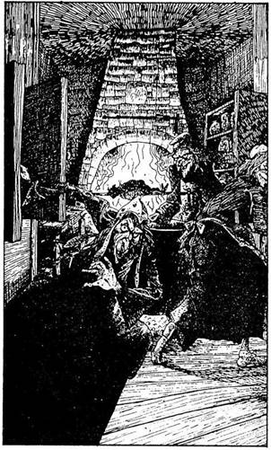
13.
A kilincs enged, és benyitsz egy másik szobába, ahol nagy a sürgés-forgás. Három ronda, nagy orrú, hegyes állú vénasszonyt pillantasz meg, akik fel s alá rohangálnak a szobában - mely olyan, mint egy konyha. Különböző alapanyagokat vesznek ki a szekrényből, és belehajigálják a szoba közepén álló üstbe. Egy nyárson, egy nagy kéménylyuk alatt jókora darab húst sütnek. Ahogy közelebbről megnézed, látod, hogy az nem is hús, hanem egy feketére égett Törpe Az egyik nő így szól, amikor észrevesz:- Á, biztosan te vagy az új szolga… vagy inkább a következő fogás? - Ekkor mindnyájan visító röhögésben törnek ki. Ha engeded, hogy azt higgyék, te vagy az új szolga - lapozz a 302-re, ha inkább átkutatod a szobát - lapozz a 215-re.
14.
A fal tövében olyan sötét van, hogy alig látsz. Egy ki álló kőben megbotlasz. Elveszted az egyensúlyodat, és miközben a kő elmozdul helyéről, észreveszed, hogy egy mély verem szélén állsz. Tedd próbára a SZERENCSÉDET! Ha SZERENCSÉD van, visszanyered az egyensúlyodat és biztonságban hátralépsz. Megkerülöd a vermet, és folytathatod az utadat - lapozz a 79-re. Ha nincs SZERENCSÉD, belezuhansz a verembe - lapozz a 100-ra.
15.
A tőr valóban műremek, és kétségkívül sok pénzt ér. Pengéje csillogó fémből készült, markolata különleges zöld bőrből, melyet kőberakás díszit. A bevésést olvasva megtudod, hogy ez varázserejű dobótőr, és sose téveszt célt. Legközelebbi harcod során jó hasznát veheted majd ellenfeleddel
szemben. Azonnal 2 ÉLETERŐ pont levonást jelent, anélkül hogy dobókocka segítségével megállapítanád a TÁMADÓERŐT. De csak egyszer használhatod ezt a tőrt. Bedugod az övedbe, és továbbmész a Fellegvár felé. Lapozz a 245-re.
16.
Döntsd el a harc kimenetelét:
Gark ÜGYESSÉG 7 ÉLETERŐ 11
Négy Forduló után, ha akarsz, Elmenekülhetsz a szoba végében lévő ajtók egyikén át - lapozz a 99-re. Ha folytatni akarod a harcot, tedd azt, és ha te győzöl - lapozz a 180-ra.
17.
Mindenféle furcsa ételféleséget találsz a szekrényben. Szemgolyókat, nyelveket, apró gyíkokat, itallal teli üvegcséket, különböző füveket és bogyókat. Mindegyik más-más formájú és nagyságú. Az egyik üveg, melyben átjátszó zöld színű folyadék van, felkelti érdeklődésedet. Nincs időd rá, hogy elolvasd, mi van az üvegen lévő címkére írva. Gyorsan leemeled a polcról, és amíg nem figyelnek rád, zsebre vágod. Közlöd velük, hogy a konyhát rendben találtad, és távozol a hátsó ajtón át. Lapozz a 93-ra.
18.
Közvetlenül a padló fölött rámutat egy részre, amelyet átvizsgálsz. Végül leveszel egy könyvet és elolvasod. Rettegett Balthus, mint megtudod, a Fekete Torony és a Sziklaszirt Királyság Varázsló Hadurainak harmadik leszármazottja. Apjának, Rettegett Craggennek a halála után került uralomra, néhány évvel ezelőtt. A Rettegettek generációkon át a Fekete Mágia mesterei voltak, de erejük és hatalmuk csupán éjszaka érvényesült; a napfény olyan nekik, minta méreg. Nem sokkal apja halála után Rettegett Balthus feleségül vette Lady Lucretiát, aki maga is a Fekete Mágia Úrnője volt, és együtt uralkodtak a Sziklaszirt Királyság fölött. Amikor befejezed a könyvet, észreveszed, hogy a könyvtáros kezét a füléhez illesztve szemmel láthatóan hallgatózik. Kérdőn tekint rád. Ha egy másik könyv után nézel, amely esetleg hasznos lehet számodra - lapozz a 84-re, de megpróbálhatod elhagyni a könyvtárszobát a könyvtáros mögött lévő ajtón át - lapozz a 31-re.
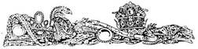
19.
Az öreg lépcső nyikorogni kezd, amint rálépsz. Megpróbálsz a lehető legóvatosabban lépkedni, de az ősrégi gerendák csak úgy nyögnek alattad. Az egyik lépcsőfok hirtelen kattan egyet, mintha egy ravaszt húzott volna meg valaki. Legnagyobb meglepetésedre az összes lépcsőfok lecsapódik! Sima,
meredek lejtőn állsz! Mindent megpróbálsz, de nem tudod megtartani az egyensúlyodat, és bukfencezve zuhansz le a lejtőn. Ha Súlytalanság Varázslatot akarsz alkalmazni, akkor felröpülsz a magasba ebből a veszélyes helyzetből, és a fejed felett lévő erkélyen landolhatsz. Lapozz a 363-ra. Ha nem varázsolsz, lapon a 254-re.
20.
A Majom-Kutya közti veled, hogy sötétedés után senki sem lépheti át a Torony küszöbét - máshol kell szállás után nézned. Ha rászánod magad, hogy megküzdj velük, lapozz a 288-ra. Ha inkább előveszed az erszényedből a kis szikladarabot, és Hamis Arany Varázslatot alkalmazva az ál-aranyröggel megvesztegeted őket, hegy beengedjenek, lapozz a 96-ra. Ha a Hamis Arany Varázslatot alkalmazod, jelöld a Kalandlapon.
21.
- Hogy kerülsz erre a vidékre? - kérdi. Elmondod, mi járatban vagy, de óvatosan elhallgatod előle küldetésed igazi célját. Azt tanácsolja neked, ha tudsz varázsolni, menekülj erről a helyről. Azok a teremtmények, melyekkel eddig találkoztál, korántsem olyan veszélyesek, mint amelyekkel majd a Fellegvár Tornyában fogsz találkozni. Elmondja még, hogy addig nem fogsz a Vár urával találkozni, míg meg nem találod a Prémet. Nyersz 2 SZERENCSE pontot a kapott információért, és továbbmész. Lapozz a 6-ra.
22.
Kinyitod az ajtót, és egy hosszú, sötét folyosóra érsz. Lapozz a 188-ra.
23.
Kinyitod az ajtót, és egy hosszú folyosóra érsz, mely egy idő után balra kanyarodik, majd ismét jobbra. Ekkor egy boltívhez érsz, ahonnan tágas szoba nyílik. Belépsz a szobába. Lapozz a 169-re.
24.
Megkóstolod a bort, és amíg ízlelgeted, kattanást hallasz. A hang irányába fordulsz, és elszörnyedve látod, hogy az üvegek maguktól mozognak a rekeszekben. Az egyik üveg lerepül a helyéről, és feléd száll. Közvetlenül a fejed mellett zúg el, és a falhoz csapódva széttörik. Ekkor újabb és újabb üveg repül feléd; minden irányból üvegek özöne zúdul rád. Csak a Védelem Varázslattal védheted meg magad. Ha van ilyen Varázslat a birtokodban - lapozz a 372-re. Ha nincs - lapozz a 219-re.
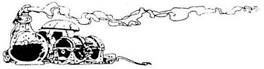
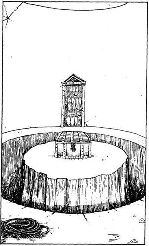
25.
Az ajtó kinyílik, és egy hatalmas, kör alakú szobában találod magad. Elgondolkodva vakargatod a fejedet. A szoba közepén egy kis "szigetet" látsz, melyet széles árok vesz körül. A sziget közepén egy láda áll, fémpántok zárják le. Az árok túl széles és túl mély ahhoz, hogy átugorhasd. Bent, közvetlenül az ajtó mellett egy kötelet találsz. Egy másik ajtó is nyílik a szobából, épp azzal az ajtóval szemben, amelyen bejöttél. Mit teszel?
Nem veszel tudomást a ládáról, és
az árkot megkerülve a másik ajtóhoz
mész? Lapozz a 206-ra.
Erővarázslatot alkalmazol, és átugrod
az árkot? Lapozz a 133-ra.
Felveszed a kötelet, és kiagyalsz
valami tervet? Lapozz a 239-re.
26.
Melyik varázslatot alkalmazod?
A Tűzvarázslatot? Lapozz a 87-re.
Az Erőtlenség Varázstatot? Lapozz a 345-re.
A Teremtmény Hasonmás
Varázslatot? Lapozz a 101-re.
Ha egyikkel sem rendelkezel, térj vissza a 304-re, és válassz újra.
27.
Mikor az Arany Tallérokat a kezedben tartod, a három fura kis teremtmény abbahagyja a hancúrozást. Lihegve nézik az aranyaidat. Egy láthatatlan kéz kiragadja a kezedből azokat, és ledobja nekik a földre. Rád néznek, és egy hang azt követeli, hogy még többet adj. Előveszed az Összes Arany Tallérodat, és valamennyit a szoba közepére hajítod. Ekkor a hang így szól: "Jól van, idegen, szívesen látunk itt, a MIKek otthonában! Köszönjük az ajándékodat. Ha tovább akarsz menni, lépj be a szemközti ajtón, de óvakodj a Gendzsiktől. Sok sikert kívánunk az utadon!" Nyertél 1 SZERENCSE pontot a MIKek jókívánsága folytán, és távozol a szemközti ajtón. Lapozz a 206-ra.
28.
Egy tűzgolyót varázsolsz a kezedbe. Megállnak, és figyelmesen néznek. Feléjük hajítod a golyót. Visítani kezdenek félelmükben, s gurulva menekülnek jól látható erőd elől. Még mindig tart a varázs, és most három kis tűzgolyót formálsz, majd mindegyikükhöz hozzávágsz egyet. Hanyatt-homlok, üvöltve gurulnak előled fölfelé a folyosón. Ha mosta bal oldali átjáró felé mész - lapozz a 243-ra, ha a jobb oldali átjárón mész tovább - lapozz a 2-re.
29.
Óvatosan közelítesz az apró emberkéhez. Amikor mellé érsz, egyetlen szeme kinyílik, és egyenesen rád néz. A teremtmény szélesen elvigyorodik, majd eltűnik a szemed elől! "Jó reggelt néked!" - szólal meg mögötted egy csipogó, vékony hang, és amikor hirtelen megfordulsz, látod, hogy még mindig
ott vigyorog mögötted. "O’Seamus vagyok, a Leprechaun" - mondja kuncogva, és feléd nyújtja a kezét. Elég barátságosnak látszik. Ha te is kezet nyújtasz neki és barátkozni próbálsz vele, lapozz a 271-re, ha kardot rántasz ellene, lapozz a 131-re.
30.
A vadállat roppant erős. Kardot rántasz, és kezdetét veszi a harc.
Karomvad ÜGYESSÉG 9 ÉLETERŐ 14
Amikor a negyedik csapást is rámérted a vadállatra - lapozz a 241-re.
31.
A szoba túlsó végében lévő ajtón át távozol egy rövid folyosóra, amelyet egy faajtó zár le. Lenyomod a kilincset, és egy hatalmas terembe jutsz. Lapozz a 169-re.
32.
Átlépsz a földön fekvő tetemeken, és a kapuhoz mész. Bekiáltasz az őrnek, és amikor közeleg, a kapumélyedés sötét szegletébe húzódsz. Megpillantja a tetemeket, és odamegy hozzájuk, hogy megnézze, mi történt velük. Ekkor a nyitott kapun át besurransz, és kulcsra zárod. Az őr kinn reked. Lapozz a 251-re.
33.
Amikor megpróbálsz felállni, az Ork meg a Goblin megragad és visszanyom a földre, miközben a Törpe a buzogányával támad rád. Lapozza 213-ra.
34.
A kulcs megfordul, és kinyitod a ládát, amelyben egy másik kulcsot találsz, ezúttal egy fényes zöld fémkulcsot. Ha megpróbálod ezzel a kulccsal a harmadik ládikát kinyitni - lapozz a 89-re, ha inkább távozol a két kulccsal - lapozz a 237-re.

35.
Az Illúzió Varázslatra koncentrálsz. Vagy meggyőzöd, hogy ellenség támadta meg - lapozz a 364-re, Vagy köddé válsz abban a reményben, hogy majd a keresésedre indul - lapozz a 246-ra.
36.
"Ugyan! - mondja a Gark. - Csak nem gondolod, hogy ilyen könnyen becsaphatsz. Dobd el azt a sárgaréz vackot!" A teremtmény ráébred, ha egyszer meg akarod vesztegetni, akkor biztosan egy betolakodó vagy - ami egy Gark részéről meglepő logikus következtetésre vall! Hatalmas mancsával jókorát vág rád, úgyhogy elterülsz a földön. Mielőtt elájulnál, a következő szavakat hallod a büszke
Gark szájából: "Börtönbe vele!" Lapozz a 234-re. Ne felejts el a Kalandlapról kihúzni egy Hamis Arany Varázslatot!

37.
Lehúzod a bőrt, és a teremtmény hangosan felszisszen. Minden feje hátrahúzódik, de továbbra is figyel. A szoba túlsó végében van egy ajtó; lassan elindulsz felé. A szoba közepén jársz, amikor egy fej ugrik eléd, és kikapja a kezedből a Prémet. De ahelyett, hogy megtámadna, a Hidra visszahúzódik a sarokba. Óvatosan elindulsz az ajtó felé. Lapozz a 229-re.
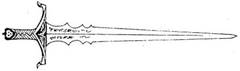
38.
Az ajtó egy apró kövekkel burkolt, rövid folyosóra nyílik. Kissé följebb díszesen faragott ajtó zárja le az utat. Közvetlenül az ajtó előtt, balra egy oldalfolyosó nyílik. Odalépsz az ajtóhoz, és hallgatózol, van-e bent valaki. Amikor a kezed a kilincshez ér, egy hang így szól: "Ne kopogj; lépj be!" Ha bemész a szobába, ahogy kérték - lapozz a 132-re, ha úgy döntesz, hogy nem mész be, hanem a balról nyíló folyosón haladsz tovább - lapozz a 306-ra.
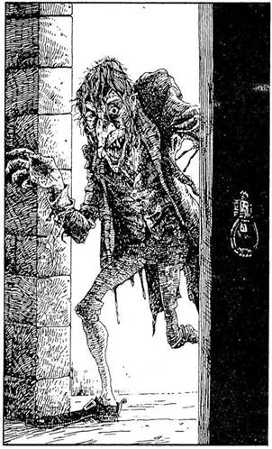
39.
Amikor előveszed az Üveget, a Gendzsik felhördülnek. "Racknee! - kiáltja egy hang. - Hát visszahoztad!" Amikor ezt kimondja, egy láthatatlan kéz kikapja az Üveget a kezedből, leteszi a földre és felnyitja a tetejét. A Pók-Ember feléd fordul és rád mordul. Kardot rántasz, mert a furcsa állatember haragosan csápozik feléd. Meg kell vele küzdened:
Pók-Ember ÜGYESSÉG 7 ÉLETERŐ 5
Amikor a Pók-Ember rád méri az első csapást - lapozz a 208-ra. Ha te győzöl, anélkül hogy megsebesítene, kardoddal kell megvívnod a Gendzsikkel. Lapozz a 248-ra.
40.
Rövid idő múlva lassan kinyílik az ajtó, és egy púpos, torz teremtmény jelenik meg előtted. A fogai pudvásak, a haja ragacsos, öltözéke csupa rongy. "Igen, uram (hehe, hehe), miben állhatok a rendelkezésére?" - kérdi morogva az emberszerű teremtmény. "Várnak odabent" - válaszolod neki, és öntudatosan belépsz az ajtón. Viselkedésed láttán kissé zavarba jön, hebegni kezd, s nem tudja, kérdőre vonjon-e vagy sem. "Merre van a fogadószoba"? - kérded. Kacsintva a bal oldali elágazás felé mutat, amely a folyosóról nyílik, nem túl messze tőled. Ha hiszel neki és elindulsz a bal oldali elágazás felé, lapozz a 243-ra, ha nem hiszel ennek az alattomos teremtménynek és a jobb oldali elágazást választod, lapozz a 2-re.
41.
A. három vénasszony magában morogva, pusmogva csoszog ide-oda a nagy-nagy rendetlenségben. Egyikük halkan vihogva így szól hozzád: "Jól van, idegen, segítünk neked utad során." Jéghideg tekintettel rád mered, ujjával előbb rád, majd a háta mögött levő falra mutat. A szoba elsötétedik, furcsa érzés kerít hatalmába, és mikor a sötétség eloszlik, már egy másik szobában találod magad. Lapon a 257-re.
42.
A lány hunyorít, erre a lángcsóvák eltűnnek. Mit ajánlasz föl neki?
Az Ezüst Tükröt? Lapozz a 138-ra.
A Hajkefét? Lapozz a 91-re.
Az üveget, benne a Pók-
Emberrel? Lapozz a 223-ra.
Ha egyik tárgy sincs a birtokodban, bocsánatot kell kérned tőle, amiért elvesztetted az ajándékát, és vissza kell menned az erkélyre, ahol vagy a középső ajtóval (lapozz a 64-re), vagy a leghátsó ajtóval (lapozz a 304-re) próbálkozz meg.

43.
Miután varázsoltál, érzed, hogy enyhül a szorítása. Ereje fokozatosan csökken, majd a szorítása megszűnik, hátrazuhan, és zihálva vágódik el a földön. Vesztesz 1 ÉLETERŐ pontot, mert ápolnod kell sérült karodat. Az Erőtlenség Varázslatot húzd ki a Kalandlapról. Folytathatod utadat. Lapozz a 14-re.
44.
A szoba már nem mozog, és a földre veted magad. A fegyverszekrény zárva van, de te letörheted a lakatot, vagy előveheted a hátizsákodat, és kereshetsz benne olyan fegyvert, amit használhatsz. Mit teszel?
Választasz a szekrényből egy
fegyvert? Lapozz a 353-ra.
Előveszel a hátizsákodból egy
tárgyat? Lapozz a 277-re.
45.
Ha a gyomrod bírja, megkóstolhatsz:
egy darab húst Lapozz a 166-ra.
egy gyümölcsöt Lapozz a 313-ra.
egy szelet sajtot Lapozz a 253-ra.
egy darab kenyeret Lapozz a 97-re.
46.
Előrelendíted a karodat, és a varázsló alatt tévő padlóra mutatsz. Füst és lángnyelvek csapnak föl a földről. Rettegett Balthus ijedten hátát, és szemét lehunyja, úgy összpontosít. Amikor kinyitja, a tűz a tanítványai között lobog, és Balthus elindul az általad életre keltett lángok felé. Feléd hajít egy marék lángoló földet. Ha lehajolsz, hogy elkerüld - lapozz a 195-re, ha elugrasz az útból - lapozz a 74-re.
47.
Melyik varázslatot alkalmazod?
A Teremtmény Hasonmás
Varázslatot? Lapozz a 8-ra.
Az Illúzió Varázslatot? Lapozz a 173-ra.
A Súlytalanság Varázslatot? Lapozz a 259-re.
Ha egyik sem áll rendelkezésedre, az udvar közepén álló szoborhoz kell hátrálnod, és el kell rejtőznöd előle. Lapozz a 209-re.

48.
"Soha" - ordítja a varázsló, miközben előpördül a félhomályból, hogy szembeszálljon veled. Most te reszketsz a félelemtől, mert látod, hogy ő is alakot változtatott - olyan teremtménnyé változott, amely
megállíthatja még a Tűz Démonát is. Rettegett Balthus ronda boszorkányarcot öltött, haja nyüzsgő, izgő-mozgó, sziszegő kígyók tömege. Ha meghátrálsz e teremtmény elől- lapon a 232-re, ha szigonyoddal ráveted magad - lapozz a 199-re.
49.
A teremtmény furcsán néz rád, mint aki nem biztos benne, ki is vagy te tulajdonképpen. Lapozz a 255-re.
50.
Lapozz a 164-re.

51.
Nagyot suhintasz a kardoddal, de nem találod el a teremtményt. Vagy iszonyúan gyors, vagy testetlen! Fogai a lábadba mélyednek, és kicsordul a véred. Vagy varázslattal kell megvédened magad, vagy szembe kell nézned a biztos halállal. Ha Erővarázslatot alkalmazol e fura, láthatatlan teremtmény ellen- lapozz a 301-re, ha Erőtlenség Varázslatot alkalmazol - lapozz a 159-re, vagy ha nem tudsz, esetleg nem akarsz varázsolni - lapozz a 280-ra.

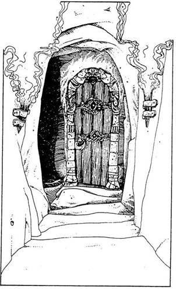
52.
Az ajtó kinyílik, te belépsz rajta, s becsapod magad mögött. Nem sokkal később egy hármas elágazáshoz érsz, ahonnan az északi folyosón mész tovább. Ezen haladsz jó pár métert, míg egy másik ajtóhoz nem érsz. Bentről nevetgélés, mulatozás hangjai ütik meg a füledet. Óvatosan benyitsz egy hatalmas terembe, ahol vagy egy tucat különböző alakú, méretű és színű teremtmény társasjátékokat játszik. Amikor belépsz a terembe, egy hang így szól; "Nézzétek, ez itt bizonyára Glaz-Doz-Fut!" Ekkor mindenki üdvözöl, és meghívnak, hogy játssz velük. Valójában vártak valakit, és összetévesztettek vele. Ha velük tartasz a játékban - lapozz a 385-re, ha közlöd velük, hogy tévednek, és megpróbálsz eljutni a terem túlsó végében lévő ajtóhoz, lapozz a 227-re.
53.
"Mihez kezdjek ezekkel a bogyókkal?- kérdi nevetve. - Hisz az étvágyam a testemmel együtt meghalt!" Amikor közelebbről megnézed, látod, hogy egy női Szellemmel van dolgod. Feléd libben a levegőben. Lapozz a 194-re.
54.
Átvizsgálod a hátizsákodat. Mit veszel elő belőle?
A Kenőcsös Tégelyt? Lapozz a 287-re.
A Zsebszerkentyűt? Lapozz a 160-ra.
Arany Tallérokat? Lapozz a 27-re.

55.
Egy ideig mész a folyosón, amely jobbra kanyarodik és hirtelen véget ér. Vagy visszatérsz az elágazáshoz, és egy másik folyosón haladsz tovább - lapozz a 249- re, vagy más titkos átjárókat keresel - lapozz a 10-re.

56.
A Fekete Elf sovány és toprongyos. Megkérdi, vajon vendég vagy-e vagy kalandor. Azt válaszolod, hogy vendég vagy, és azért jöttél, hogy megvizsgáld híres Borospincéjének a borát. Némi büszkeséggel megmutatja neked a borosüvegeket, melyeket ura, Rettenetes Balthus számára őriz itt. Azt állítja, hogy közülük néhány varázserővel bír.
Felajánlja, hogy kóstold meg a borát. Melyiket kóstolod meg?
A Vörösbort? Lapozz a 120-ra.
A Fehérbort? Lapozz a 163-ra.
A Rosét? Lapozz a 334-re.
Visszautasítod az ajánlatát és továbbmész? Lapon a 95-re.
57.
Tedd próbára a SZERENCSÉDET! Ha SZERENCSÉD van, lapozz a 150-re. Ha nincs SZERENCSÉD, lapozz a 233-ra.
58.
Amikor belépsz, a Gremlinek izgatott szárnycsapkodásba, sipítozásba kezdenek, majd elröpülnek melletted, s kiszállnak az ajtón, bele az éjszakába. Egyedül maradsz a kehellyel. Iszol-e? Ha igen, melyik italt választod?
Az átlátszót? Lapozz a 298-ra.
A pirosat? Lapozz a 267-re.
A tejszerűt? Lapozz a 92-re.
Ha úgy döntesz, hogy inkább távozol és továbbmész a Fellegvárba - lapozz a 156-ra.
59.
Megriadnak az ajándékodtól, és a szoba egyik sarkába futnak, ahol elrejtőznek az ágyak alatt. Furcsállod a viselkedésüket, a földön hagyod a tégelyt, és elindulsz a szoba túlsó végében lévő ajtó felé. Lapozz a 140-re.

60.
A teremtmények gyanakodni kezdenek, amikor látják, hogy mennyire érdeklődsz. A Törpe talpra szökken, és meglengeti a levegőben a kezében lévő bunkósbotot. A Goblin és az Ork karddal támad rád. A Goblin barátnője visítva hátrál, míg a többiek rád rontanak. Meg kell küzdened velük. Melyik varázslatot alkalmazod?
A Súlytalanság Varázslatot? Lapozz a 33-ra.
Az Illúzió Varázslatot? Lapozz a 295-re.
Ha nem akarsz varázsolni, megküzdhetsz velük a kardoddal - lapozz a 213-ra.
61.
Kardoddal támadsz. A Devlin megáll… majd rád támad! Rávágsz a kardoddal, de nem tudod megsebesíteni a teremtményt, amely maga alá gyűr. Lángoló teste égeti a bőrödet, és már haldokolsz. De ö nem tágít, és a kínoktól elveszted az eszméletedet. A földre zuhansz, ahonnan már soha
többé nem kelsz fel. A Devlin lehajol hozzád, hogy meggyőződjön róla, égési sérüléseid valóban halálosak-e. Végül is te leszel a Fekete Torony teremtményeinek vacsorája…
62.
Miután harcképtelenné tetted a Vízköpő Sárkányt, úgy döntesz, hogy megnézed, mi van a teremtmény szobortalapzatában. Tedd próbára a SZERENCSÉDET! Ha SZERENCSÉD van, magaddal viheted a 10 Arany Tallért tartalmazó erszényt a talapzatból. Ha nincs SZERENCSÉD, nem tudod kinyitni a talapzatot képező dobozt. Hagyd el a szobát - lapozz a 140-re.

63.
A tartalomjegyzékhez lapozol, és megnézed, hányadik oldalon van az, amit keresel. Amikor az adott oldalt felütnéd, meglepetten látod, hogy valaki kitépte! Lapozz vagy a Calacormok fejezetre - 263, vagy nézd meg a MiKek címszót - 135.

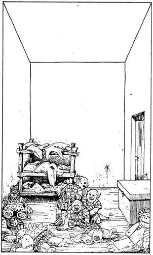
64.
Az ajtónál hallgatózva bentről csikorgó, nevetgélő, civakodó hangokat hallasz. Lenyomod a kilincset, és az ajtó kinyílik. A szoba ragyogó színekben pompázik. Egy kis emeletes ágy áll az egyik sarokban, és a földön elszórva különböző állatfigurák bábui hevernek. A jobb oldali falnál egy hatalmas láda áll, mellette egy ajtót látsz. A szoba közepén a földön három apró teremtményt pillantasz meg, akik furcsán néznek rád. Emberformájúak, de a bőrük színe zöld, a fülük hegyes, a szemük ferde vágású. Hogyan közelítesz hozzájuk? Mit teszel?
Kardot rántasz, hogy rájuk
támadj? Lapozz a 286-ra.
Megnézed hátizsákodat, mit tudnál
nekik ajándékozni? Lapozz a 3-ra.
Magabiztosan átvágsz a szobán a láda
mellett lévő ajtóhoz? Lapozz a 366-ra.
65.
Térdre rogysz előtte, és meghajolsz. Most már valóban ő a te urad. Küldetésed itt véget ér, megbuktál!
66.
Egymásra néznek, és karattyolnak valamit. Egyikük előrelép, kezében egy kis kockát tart, mely egy darab kenyérre vagy süteményre hasonlít. Kérésé-

re a szádba teszed és rágni kezded. Amikor lenyeled, ismét erősnek érzed magad. ÜGYESSÉG és ÉLETERŐ pontjaid visszaállnak a Kezdeti értékükre, és nyersz 1 SZERENCSE pontot is. Megköszönöd neki az ételt, megköszönöd a kedvességüket, és elindulsz az ajtók felé. Lapozz a 270-re.
67.
Elkezded a harcot a teremtménnyel. Az első csapásod szerencsés, hat feje közül eltalálod az egyiket. A másik öt azonban tovább támad, és legnagyobb rémületedre a lekaszabolt fej helyébe két fej nő egyszerre. Az egyik fej mélyen a karodba váj. Vesztesz 4 ÉLETERŐ pontot. A kardod itt valóban nem sokat ér. Ha Teremtmény Hasonmás Varázslatot alkalmazol - lapozz a 143-ra, ha a hátizsákodból veszel elő valamit - lapozz a 226-ra.
68.
"Hogy melyiket választanám?- kérdi tűnődve. - Lássuk csak… én nem választanám azt, amelyik kettővel balra nyúlik a vörösréz kincses ajtótól, sem azt, amelyik a bronzkilincsestől Jobbra nyúlik." Te melyiket választod?
Azt az ajtót, amelyen a sárgaréz
kilincs van? Lapozz a 207-re.
a vörösréz kilincs van? Lapozz a 22-re.
a bronzkilincs van? Lapozz a 354-re.
69.
A teremtmény nem túl beszédes, de arra azért rájössz, hogy igen veszélyes helyzetben a Fekete Torony legmélyén vagy, ahonnan valószínűleg
soha nem szabadulsz ki, hacsak be nem csapod a Gendzsiket. Amikor Rettegett Balthus után érdeklődsz, nem kapsz választ. Jobban teszed, ha Varázsolsz egyet, hagy kiszabadulj börtönödből. Lapozz a 193-ra.
70.
Felemelkedsz a levegőbe, így kivéded a döfését, de a teremtmény elég kitartó, és nem tudsz elszállni fölötte az ajtóig. Végül megszűnik a Varázslat, és ismét ki kell állnod ellene. Mit teszel?
Erőtlenség Varázslatot alkal-
mazol? Lapozz a 307-re.
Erővarázslatot alkalmazol? Lapozz a 264-re.
Kardot rántasz? Lapozz a 325-re.
71.
Kivont kardoddal rávágsz a csápra. A csáp nem úgy fog harcolni ellened, mint ahogyan azt általában a teremtmények teszik, hanem megpróbál behúzni abba a mély lyukba, mely körülötte tátong. Nem kell dobnod, hogy megállapítsd a csáp TÁMADÓEREJÉT, az ugyanis 15, és az ÉLETERŐ pontja is adott: 2. A harc menetét a könyv elején lévő játékszabályban leírtak alapján dobókockával állapítsd meg, de abban az esetben, ha a saját TÁMADÓERŐD sokkal kevesebb, mint 15, egyetlen pontot se vonj le ÉLETERŐ pontjaid számából. Mindazonáltal ha 3 Fordulóban nem sikerül legyőznöd a teremtményt, akkor ő úgy győz le, hogy behúz a fészkébe, s ezzel kalandodnak vége szakad. Ha viszont te győzöl, akkor lefejtheted a csápot a lábadról, és továbbmehetsz a Fekete Torony főbejáratához. Lapozz a 218-ra.
72.
A szerencse nincs veled. Elég volt egyetlen pillantást vetned a kígyófejű teremtményre, hogy sorsod megpecsételődjék. Kínodban felordítasz, amikor érzed, hogy végtagjaid elnehezülnek és mozdulni is alig bírsz. Amikor Gorgon rád veti merev tekintetét, elveszted az egyensúlyodat - és a földre zuhansz. Megkövült tested összetörik, és apró darabokban fekszik Rettegett Balthus lábai előtt. Küldetésed nem járt sikerrel.
73.
Vagy megpróbálsz megszabadulni a Kloáka Kígyótól, vagy Varázslattal távolítod el magadtól. Ha megküzdesz vele:
Kloáka Kígyó ÜGYESSÉG 6 ÉLETERŐ 7
Ha te győzöl - lapozz a 112-re.
Ha Erővarázslatot akarsz alkalmazni, adj hozzá 3-at TÁMADÓERŐD pontjaihoz. Ha Tűzvarázslatot akarsz alkalmazni - lapozz a 282-re.
74.
Amikor elugrasz, a varázsló tekintete követ - és a tűzgolyója is utánad repül! A melleden talál el, és ledönt a lábadról. Ez 4 ÉLETERŐ pontodba kerül. Ha még mindig életben vagy, ellentámadást indíthatsz: varázsolhatsz valami mást. Lapozz a 377-re.

75.
Belépsz az ajtón, becsukod magad után, és vársz egy percet. Közeledő léptek zaját hallod, melyek már elérik az ajtót. Érthetetlen pusmogást hallasz az ajtó túloldaláról, majd a hangzavar elül, és ismét léptek zaját hallod, de ezúttal távolodó léptekét. Becsöngetsz a komornyiknak. Lapozz a 40-re.
76.
Miközben előveszed a Bogyókat a hátizsákodból, Rettegett Balthus varázslással van elfoglalva. Felnéz, és kitör belőle a nevetés. "Álombogyók! - kiáltja. - Mire vársz, mit tegyek? Dugjam őket a számba?" Csettint egyet az ujjával, és a varázslata megelevenedik. Lapozz a 191-re.
77.
Rettegett Balthus meglepetten nézi fölényedet. "Úgy! - kiált fel. - Azt hiszed, erősebb vagy, mint a többiek, mi?" Cselekedj gyorsan! Varázsolj ellene! Melyik varázslatot alkalmazod?
A K.É.K. Varázslatot? Lapozz a 187-re.
A Tűzvarázslatot? Lapozz a 46-ra.
A Teremtmény Hasonmás
Varázslatot? Lapozz a 349-re.
Ha a fent említettek közül egyik varázslattal sem rendelkezel, vagy úgy döntesz, hogy nem varázsolsz, lapozz a 355-re.
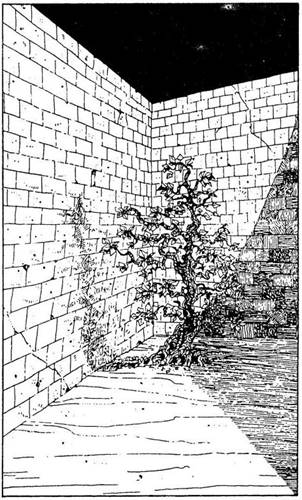
78.
Szemével követ, amint az ablakhoz mész. Tanítványai elfehérednek. Hátraveti a fejét, szemét egy pillanatra behunyja és felsóhajt. Fejét hirtelen előrehajtja, és csillogó ezüst színűvé változott szemével rád pillant! Hipnotizál a tekintetével, gyorsan kell cselekedned. Mit teszel?
Elbújsz az egyik függöny
mögött? Lapozz a 324-re.
Lerántod az egyik függönyt, és ráborítod
a fejére? Lapozz a 124-re.
Átkutatod a hátizsákodat, hogy megnézd,
nincs-e benne valami használ-
ható? Lapozz a 277-re.
79.
Az udvar túlsó sarkában különös bokrot látsz, melynek ágai összecsavarodva meredeznek, mintha haldokolnának. A bokor levelei gyémánt formájúak, alattuk apró, lapos, tabletta alakú bogyók látszanak. Ha akarod, magaddal vihetsz belőlük néhányat az utadra. Óvatosan menj tovább a fal mentén a Fellegvár főbejárata felé. Lapozz a 218-ra.
80.
Amikor átugrod az asztalt, a varázsló megpördül a saját tengelye körül. Megbotlasz, és elvágódsz a földön, amikor látod, hogy nálad sokkal veszedelmesebb teremtménnyé változott. Arca - gonosz boszorkányé, haja kígyók tömege, melyek tekeredve sziszegnek feléd. Ha folytatod ellene a küzdelmet - lapozz a 199-re, ha meghátrálsz - lapozz a 232-re.
81.
A Majom-Kutya nevetve mondja, hogy Kylltrog lusta semmirekellő, és nem érdemli meg, hogy megvédd. Megkönnyebbülten sóhajtasz fel, amikor visszamegy és odakiált a kapuőrnek. Egy pillanat múlva megjelenik a kapuőr, kinyit egy kis ajtót és beenged. Lapozz a 251-re.
82.
Bezuhansz az árokba. Esés közben kétségbeesetten próbálsz megkapaszkodni a peremében, de nem jársz sikerrel. Bukfencezve zuhansz a mélybe, és a földhöz csapódva azonnal meghalsz. Küldetésed nem járt sikerrel, elbuktál!
83.
A férfi kereskedő. Azt mondod neki, hogy te is az vagy, és elbeszélgetsz vele a fekete toronybeli árakról meg a haszonról. A férfi elmondja, hogy ő még sohasem mehetett a földszintnél följebb a Fellegvárban, mivel a kereskedőket ott igencsak utálják. Elbúcsúzol tőle és továbbmész. Lapozz a 245-re.
84.
Amint a polcokat vizsgálod, a hátad mögül mozgolódást hallasz. Épp jókor fordulsz meg, mert felfegyverzett, ugrásra kész Ork-szerű teremtmények jelennek meg mögötted, egyik a másik után. Feléd igyekeznek és körülvesznek. A legmagasabb egészen közel hajol az arcodhoz, és a szemed közé fúj. A szoba forogni kezd, és eszméletlenül zuhansz a földre. Lapozz a 234-re.
85.
Miután Varázsoltál, várj, amíg egy tűzgolyó megjelenik a fáklyád végében. A fáklya pislákoló fényében egy ajtót látsz a szoba túlsó végében, amely azonban rögtön el is tűnik. A Gendzsik megint kinevetnek, amiért hiába próbálsz túljárni az eszűkön. Hatalmas ütés éri a fejedet, és ismét a földre zuhansz. Vesztesz 2 ÉLETERŐ pontot. Mit teszel?
Illúzió Varázslatot alkalmazol? Lapozz a 395-re.
Előveszel valamit a hátizsá-
kodból? Lapozz a 322-re.
Kardot rántasz? Lapozz a 248-ra.
86.
Miután varázsoltál, a két teremtmény döbbenten figyeli, amint a levegőbe emelkedsz és a fejűk fölött elszállva átröpülsz a kapu és a Fellegvárat körülvevő fal fölött. A kapu túloldalán érsz földet, és körülnézel. Lapozz a 251-re. De vigyázz! Biztosan riasztani fogják az őrséget. Kalandlapodról ne felejtsd el kihúzni a Súlytalanság Varázslatot.
87.
Hatalmas tűzgolyót varázsolsz a kezedbe, és a teremtmény felé hajítod. Nincs hatása! A Vízköpő Sárkány behúz neked egy nagyot, és az ütés leterít. Vesztesz 2 ÉLETERŐ pontot. Jobb, ha békén hagyod ezt a fenevadat, és inkább kimész a szobából. Próbálkozz meg a középső erkélyajtóval! Lapozz a 64-re.
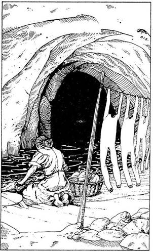
88.
Az ajtó rendkívül erős, de kissé enged, ahogy nekifeszülsz. Annyiszor veselkedhetsz neki az ajtónak, ahányszor csak akarsz. Minden kísérlet előtt dobj egy kockával. Ha 6-ost dobsz, sikerrel jársz - lapozz a 292-re. Viszont minden sikertelen kísérlet után vesztesz 1 ÉLETERŐ pontot. Ha nem ezzel a módszerrel akarod kinyitni az ajtót, úgy megpróbálkozhatsz az Erővarázslattal - lapozz a 170-re, vagy a középső ajtóval - lapozz a 64-re, esetleg az erkély túlsó végében lévő ajtóval - lapozz a 304-re.
89.
A kulcs elfordul a zárban, a lakat kipattan, és felemeled a láda tetejét. A ládában egy üvegkancsót találsz, amelyben egy pók van. Ez azonban nem közönséges pók; ennek öregember-arca van. Beszél hozzád, de nem érted, mit mond. Zajt hallasz a hátad mögül, riadtan megfordulsz, és látod, hogy az ajtó, melyen bejöttél, lassan kinyílik. Beteszed a kancsót a zsákodba, és a másik ajtóhoz rohansz. Lapozz a 237-re.
90.
A folyosó egyre szélesedik, és most már a hömpölygő folyó mentén mész. Éppen előtted egy nő ruhát mos. Mögötte egy kosárban nagy halom mosnivaló van, a kötélen kezeslábasok száradnak. Mit teszel?
Kardot rántasz és a nőre
támadsz? Lapozz a 176-ra.
Üdvözlöd, és megpróbálsz elbeszélgetni
vele? Lapozz a 21-re.
K.É.K. Varázslatot alkalmazol, hogy
megtudd, ki ő? Lapozz a 329-re.
91.
Ránéz az ajándékra, amit felkínálsz neki, és elkerekedik a szeme. "Hadd nézzem" - mondja parancsoló hangon. Kezedben a hajkefével óvatosan odalépsz hozzá. Kikapja a kefét a kezedből, és néhány percig gyönyörködve nézegeti. "Ez valóban remek munka!" - mondja, miközben fölkel az ágyból és megáll a tükör előtt. Amint a haját keféli, az szokatlan fénnyel, lágyan sugározni kezd. Annyira elbűvöli az ajándékod, hogy most észrevétlenül kisurranhatsz a hátsó ajtón. Ha akarod, magaddal viheted az Arany Prémet, amely az ágyon fekszik. Tedd próbára a SZERENCSÉDET! Ha SZERENCSÉD van, le tudod kapni a Prémet az ágyról, és elhagyhatod a szobát - lapozz a 140-re. Ha nincs SZERENCSÉD, mindaddig Tedd próbára a SZERENCSÉDET, amíg végül is SZERENCSÉD lesz. Vagy ha nem kedvez neked a SZERENCSE, hagyd ott a Prémet, és menj ki a szobából - lapozz a 140-re.
92.
A tejszerű folyadék illata édeskés. Belekortyolsz, és vihogni kezdesz! Még egy korty és, ki tudja, miért, kitör belőled a nevetés! Nem kétséges, a kis Gremlinek nagyon élvezik a dolgot. Kissé kóválygó fejjel, jókedvűen hagyod el a termet, és folytatod az utat a Fellegvár felé. Lapozz a 156-ra. Nyertél 2 ÉLETERŐ pontot, amiért ilyen üdítő élményben volt részed.
93.
Becsukod magad mögött az ajtót, aztán megnézed az üvegcsét. Az üvegben Lókörömfű-eszencia van, amely nagyon hasznos a kőemberek támadásával szemben. Úgy gondolod, hogy még hasznát veheted, és ezért óvatosan a hátizsákodba teszed. Továbbmész a folyosón, amikor egy másik ajtóhoz érsz, mely kinyílik, és egy tágas szobába lépsz. Lapozz a 169-re.
94.
Érzed, hogy növekszik az erőd. Válladdal nekirontasz az ajtónak… de az meg sem moccan! Zúzódásaid miatt 1 ÉLETERŐ pontot vesztesz, és hangosan kopogsz, hogy az őr kijöjjön. Lapozz a 118-ra.
95.
A Borospince végében egy faajtó van. Megpróbálod kinyitni. Hosszú folyosóra jutsz. Lapozz a 367-re.
96.
Elfogadják az ajándékodat, és odaintik a kapuőrt, aki a rácsba beépített kis ajtót kinyitva beenged. Otthagyod őket, hadd marakodjanak az Arany Talléron. Lapozz a 251-re.


97.
A kenyér elég íztelen és száraz. De olyan száraz, hogy iszonyúan megszomjazol utána! Ajkad kiszárad, és kétségbeesetten kutatsz a szobában valami innivaló után, de nem találsz semmit, amivel szomjadat olthatnád. 1 ÜGYESSÉG pontot vonj le magadtól mindaddig, amíg nem találsz valami ihatót (nem feltétlenül kell meginnod a folyadékot - csupán arra van szükség, hogy az ital ott legyen a szobában). Most, ha akarod, elhagyhatod a szobát. Ha a bal oldali ajtón át mész ki - lapozz a 13-ra, ha azon, amelyik pontosan szemben van azzal az ajtóval, melyen bejöttél - lapozz a 281-re.

98.
A feléd közelítő Gólem lomha mozgású teremtmény, és így könnyedén eléred a ládikókat. Átkozódsz, amikor látod, hogy mind zárva van. Miközben a zárakkal bajlódsz, a Gólem egyre jobban megközelít. Mit teszel?
Kardot rántasz, hogy megküzdj
a teremtménnyel? Lapozz a 303-ra.
Tűzvarázslatot alkalmazol? Lapozz a 4-re.
Teremtmény Hasonmás Varázslatot
alkalmazol? Lapozz a 190-re.
Otthagyod a ládikódat, és az ajtó
felé rohansz? Lapozz a 237-re.

99.
Ha a bal oldali ajtón mész be - lapozz az 52-re, ha a jobb oldali ajtón mész be - lapozz a 38-ra.

100.
Van Súlytalanság Varázslatod? Ha igen; jó lesz, ha alkalmazod, hogy ki tudj jönni a veremből. Ha így teszel, folytathatod az utat a fal mentén az udvar végébe - lapozz a 79-re. Ha ezt a varázslatot nem alkalmazod, lapozz a 276-ra.
101.
A teremtmény hasonmása kettőtök közé áll. Parancsodra kezdetét veszi a küzdelem.
Vízköpő Sárkány ÜGYESSÉG 9 ÉLETERŐ 10
Ha az általad életre keltett teremtmény győz - lapozz a 62-re. Ha a te Vízköpő Sárkányod veszít, eldöntheted, hogy egymagadban is megvívsz-e a teremtménnyel, vagy inkább elhagyod a szobát, és megpróbálkozol a középső erkélyajtóval. Lapozz a 64-re.

102.
Tetszik nekik a kérésed. Hárman az egyik társukhoz fordulnak. Az szemmel láthatóan ellenkezik, mégis leemeli a nyakában lógó amulettet. "Ez - mondja - Bűvös Amulett. Fémből van ugyan, de beleépítettek egy Fény Ékkövet. A Gendzsik félnek ettől a talizmántól, és mindenfélét kiagyalnak majd, csak hogy elveszítsd. Régóta büszke tulajdonom e tárgy, de minket, Leselkedőket arra köteleznek az isteneink, hogy segítséget nyújtsunk, így neked adom." Megköszönöd és a nyakadba akasztod a Bűvös Amulettet. Most elhagyhatod a szobát, de
mivel úgy érzed, lekötelezett ezzel a nagy ajándékkal, te is adhatsz neki valamit. Ha van Arany Tallérod, döntsd el, hányat adsz neki, és húzd ki a Kalandlapról - lapozz a 183-ra. Ha aranyad nincs, de valamilyen műtárgyat adsz neki, amit utad során szereztél, jelöld a Kalandlapon, és lapozz a 396-ra. Ha nem tudsz vagy nem akarsz ajándékot adni neki cserébe - lapozz a 270-re.
103.
Varázsolsz, de nem történik semmi! Egyre lejjebb és lejjebb zuhansz a Toronyból, míg végül a földhöz csapódsz. Az ijesztő teremtmények megfosztottak Varázslataidtól, és most az életerődtől is. Küldetésed nem járt sikerrel, elbuktál!

104.
Lenyomod a kilincset, mely enged. Az ajtó csak nehezen nyílik. Egy lakószobaszerűségbe jutsz, melyben asztalok, székek és polcok vannak, a falakon meg állatfejek. A földön puha gyapjúszőnyeg hever. Az egyik állatfej hirtelen feléd fordul és rád néz. Valamilyen kutya ez, mely hangosan
ugatva figyelmeztet nemcsak téged, hanem minden cimboráját, aki hallótávolságon belül van. Miközben ezt a kutyafejet nézed, nem veszed észre, hogy a szőnyeg felemelkedik a földről és feléd repülve elsuhan a füled mellett. Épp jókor fordulsz meg, mert az egyik szék lassan magas férfivá változik. "Mit keresel itt?" - mordul rád. Mit teszel?
Megpróbálsz beszélni vele? Lapozz a 266-ra.
Varázsolsz egyet? Lapozz a 310-re.
Hátizsákodban fegyvert vagy valamilyen
ajándékot keresel? Lapozz az 54-re.
Gyorsan elhagyod a szobát, és megpróbál-
kozol egy másik ajtóval? Lapozz a 25-re.

105.
A bor elég keserű, és amikor megkóstolod, szinte ég a szád. Kiköpöd a földre, és legnagyobb megdöbbenésedre lángnyelvek csapódnak ki ajkaid közül! Ha akarod, magaddal vihetsz egy keveset a borból, és Tűzvarázslat helyett alkalmazhatod ott, ahol a Tűzvarázslat lehetősége fennáll. A mennyiség egyszeri használatra lesz elegendő. Előreindulsz az ajtó felé, mely a Pince mélyére vezet. Lapozz a 95-re.
106.
Ismét felnevet, és közli veled, hogy kedvét leli a dühöngő emberekben. Vidáman kísér el néhány méteren át. Nehezen tudsz szót érteni vele. Hirtelen a távoli félhomályban észrevesz valamit, és odaszökken, hogy megnézze, mi az. Ezalatt lehetőséged nyílik rá, hogy a Fellegvár főbejáratához menj. Lapozz a 218-ra.

107.
A hurokban 1, 2, 3 vagy 4 fejet számlálsz meg. A fejek szabadulni akarnak, de a teremtmény egyre csak közeledik. Pánikba esel, nem tudod, mit tegyél. Lapozz a 184-re.

108.
Megragadod a kötelet, hátralépsz, és nagy lendületet veszel, hogy átugorhasd a büdös folyót. A kötél hirtelen elszakad, és magától kezd mozogni! Gyorsan visszaugrasz a földre. A kötél rád zuhan és köréd tekeredik. Ekkor veszed észre, hogy ez nem kötél, hanem valóban egy hosszú Kloáka Kígyó, mely tested és nyakad köré tekeredett. Lapozz a 73-ra.
109.
A teremtmény nekifeszül Védelem Varázslatod pajzsának. Riadtan látod, hogy olyan erős, hogy átszakítja! Máris rád veti magát, és most kardot kell rántanod! Lapozz a 30-ra.
110.
Tedd próbára a SZERENCSÉDET! Ha SZERENCSÉD van, egy másik nevet választasz, amelyik ismerősen cseng a fülüknek, és odakiáltanak a kapuőrnek, aki végül is megjelenik és beenged. Lapozz a 251-re. Ha nincs SZERENCSÉD, ez ismét sikertelen találgatás volt, és tüzelésre kész fegyverrel közelednek feléd. Meg kell küzdened velük! Lapozz a 288-ra.
111.
Sikerült elfordítanod a tekintetedet a teremtményről, és most visszamész a sarokba, ahol kezeddel eltakarod az arcodat. De vajon mit tehetsz? Ha van egy Fényes Ezüst Tükröd, előveheted a hátizsákodból és odanyújthatod a varázslónak - lapozz a 347-re. Ha Ilyen tükröd nincs - lapozz a 153-ra.
112.
Kiszabadítod magad a döglött Kloáka Kígyó testének szorításából, és megpróbálsz átjutni a vízen. Minden veszély nélkül átjutsz, de alig várod, hogy végre megfürödhess! Továbbmész a folyosón, amíg egy elágazáshoz nem érsz, melyen vagy egyenesen mehetsz tovább, vagy balra kanyarodhatsz. Ha balra fordulsz - lapozz a 212-re. Ha egyenesen mész tovább - lapozz a 367-re.
113.
Erőtlenség Varázslatot alkalmazol a varázslóval szemben. Megáll és rád néz. Arckifejezése fájdalmassá válik, és remegni kezd a válla. Valami szörnyű belső nyugtalanság lesz úrrá rajta. Ha megvárod, mi történik - lapozz a 388-ra, ha kardot rántasz és rátámadsz - lapozz a 145-re.
114.
Rámutatsz a csáp búvóhelyére, és varázsolsz. Füstgomolyag és fénynyaláb tör fel a földön lévő lyukból. Remegés fut végig a csápon, és szerencsére elereszt szorításából. Amikor visszahúzódik a földbe, megdörzsölöd a lábadat, hogy vérkeringésed ismét elinduljon, majd továbbmész a Fellegvár főbejárata felé. Ne felejtsd el Kalandlapodról kihúzni a Tűzvarázslatot, és lapozz a 218-ra.
115.
Helyzeted nem jó. Rettegett Balthus egyre közelebb jön hozzád, és már-már elér. Lapozz a 373-ra.
116.
Szupererős kezeddel megragadod a fogantyút és meghúzod, de az a kezedben marad. Öklöddel vágsz az ajtóra. A fa megreped, majd beszakad, és így lehetőséged nyílik rá, hogy a résen át bejuss a szobába. Lapozz a 210-re.

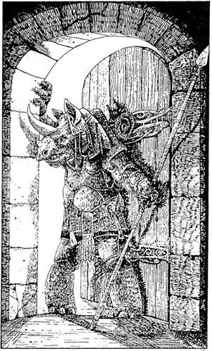
117.
Amikor előrántod a fegyveredet, a varázsló is ezt teszi. Túl közel vagytok egymáshoz ahhoz, hogy bármelyikőtök is varázsolni tudjon, így aztán kénytelen vagy megvívni vele életed legnehezebb csatáját. Lapozz a 337-re
118.
Az ajtó kinyílik, és hatalmas, vadállatnak látszó teremtmény lép ki rajta. Homlokából éles szarv mered előre, testét páncél bontja. Morogva kérdi, mi járatban vagy, és követeli, hogy mondd meg a jelszót, mielőtt beeresztene. Tudod a jelszót? Ha igen, lapozz a 273-ra. Ha nem, cselhez kell folyamodnod - lapozz a 198-ra.

119.
Szembefordulsz a hatalmas varázslóval, de nyoma vész! Hátranézel, és látod, hogy támadásra készen áll mögötted, éles tőrrel a kezében. Megpróbálsz elugrani, de már késő… A tőr markolatig mélyed a hátadba… Küldetésed nem járt sikerrel, elbuktál.
120.
Megkóstolod a bort és bólintasz. Zamata valóban felüdít. Kortyolsz még egyet, és érzed, hogy kissé elbódulsz. Nyersz 2 ÉLETERŐ és 3 SZERENCSE pontot, amiért ily remek italra leltél. Köszönetet mondasz az Elfnek, és továbbmész - lapozz a 95-re.
121.
Amint az ajtó felé rohansz, az hirtelen kinyílik: Nem bírsz megállni, és szinte bezuhansz a szobába, majd hirtelen megbotlasz és bukfencezve megállsz. Vesztesz 1 ÉLETERŐ pontot, mert felsérted a térdedet a köves padlón. Lapozz a 257-re.
122.
Apró cselhez folyamodsz, hogy becsapd, de nem dől be neked. Nem enged tovább, ezért varázsolnod kell valamit! Lapozz a 47-re.
123.
Koncentrálsz, és Calacorm képmása jelenik meg lelki szemeid előtt. Egy kígyókkal teli tálat látsz, aztán egy hasonló teremtményt, akinek szürkés bőre van - valószínűleg a nősténye -‚ majd nagyon elégedetten szemlélsz egy falhoz kötözött szerencsétlen teremtményt, akinek a lábujjait égő fáklyával csiklandozzák. Majd ismét a kígyókkal teli tálat látod. Nyilvánvaló, hogy ez a teremtmény a saját nyomorult kis életének apró örömein kívül nemigen tud másra gondolni, ezért nem fogsz tőle túl sokat megtudni arról, hogyan is lehetne innen megmenekülni. Inkább próbálkozz meg egy Hamis Arany Varázslattal - lapozz a 211-re, vagy egy Illúzió Varázslattal - lapozz a 35-re. Ha egyikkel sem rendelkezel - lapozz a 283-ra.
124.
Amint lehullik a függöny, nappali fény árasztja el a szobát. Rájössz, hogy teljesen elvesztetted az időérzékedet, mióta beléptél a Fellegvárba. A napsütés nagy megkönnyebbülés számodra a sötétség birodalmában eltöltött sok-sok óra után. Egy
tompa puffanás hangjára ellenfeled felé fordulsz. A földön fekszik elterülve. Amikor odalépsz hozzá, velőtrázó ordítást hallat! "A függöny!… Te őrült!…" - zihálja elfúló, haldokló hangon. A nappali fény, amit beengedtél a szobába, szemmel láthatóan rohamosan csökkenti az erejét, és elkeseredetten próbál a félhomályba kúszni. De túl gyenge ahhoz, hogy messzire jusson - s arccal a földre bukik. Lapozz a 400-ra.
125.
Amikor futásnak eredsz, ki tudja, honnan, három nyílvessző süvít el melletted. Tedd próbára a SZERENCSÉDET! Ha SZERENCSÉD van, nem találnak el, és eléred a szobrot, amely mögött védelmet találsz. Ha nincs SZERENCSÉD, az egyik nyílvessző belefúródik a karodba, és 5 ÉLETERŐ pontot vesztesz, még mielőtt eléred a szobrot. Lapozz a 209-re.
126.
Nagy rémületedben egy percig gondolkozol. Előtted a folyosó két szárnya. Miközben azon töröd a fejedet, jobbra menj-e vagy balra, három teremtmény bukkan fel a bal oldali folyosón. Később meglátod, nem felel meg teljesen a valóságnak, hogy "léptek" zajának gondoltad a hangokat, amelyeket hallottál. Lapozz a 316-ra.
127.
Felemeli a fejét, és kiált valamit a levegőbe. Megállsz, és látod, amint a száradó ruhák a kötélen suhogni kezdenek és szerteszét repülnek a légben. A szárítókötéltől elszabadulva számos ruhadarab röppen feléd, és amikor a közeledbe érnek,
látod, hogy a ruhákban hosszúkás halálarcú szellemek vannak. "Védjetek meg, fiaim és lányaim!" kiáltja a nő, erre az összes ruhadarab körülzár. Néhány meglengeti feléd a ruhája ujját, és úgy megcsipked, hogy gáj. Két ruhaujj a nyakad köré fonódik, és úgy megszorít, hogy szinte alig kapsz levegőt. Hadonászni kezdesz a kardoddal, de nem sok kárt teszel a Szellemekben. Szorításuk egyre erősebb, ezért vagy varázsolnod kell, hogy megszabadulj tőjük, Vagy fel kell ajánlanod valamit a nőnek a hátizsákodból. Mit teszel?
Felajánlasz neki néhány
Kis Bogyót? Lapozz az 53-ra.
Felajánlod neki az Ezüst
Tükröt? Lapozz a 387-re.
Tűzvarázslatot alkalmazol? Lapon a 240-re.
182.
Amikor a Varázslat hatni kezd, különböző gondolatok villannak át az agyadon, ugyanazok a gondolatok, amelyek a teremtménynek is eszébe jutnak. A teremtmény egyrészt attól fél, hogy elaludt a posztján és beengedett egy betolakodót, másrészt furcsa tisztelettel gondol egy díszes Hajkefére, mely valahol ott van a szobában. Ennél többet nem tudsz kiolvasni a gondolataiból, és most védekezned kell a támadásával szemben. Mit teszel?
Kardot rántasz? Lapozz a 336-ra.
Hamis Arany Varázslatot
alkalmazol? Lapozz a 36-ra.
Teremtmény Hasonmás Varázslatot
alkalmazol? Lapozz a 262-re.
Erőtlenség Varázslatot
alkalmazol? Lapozz a 152-re.
129.
Egy ideig erőlködsz, hogy kinyisd a ládikót, de az meg sem moccan. Előrántod a kardodat, és azzal próbálod meg kinyitni, de csak a kardod éle csorbul ki. Vonj le magadtól 1 ÜGYESSÉG pontot. Nem tudod kinyitni a ládikót. Mit teszel?
Megpróbálod kinyitni az első
ládikót? Lapozz a 260-ra.
Megpróbálod kinyitni a harmadik
ládikót? Lapozz a 370-re.
Otthagyod a ládikókat és
továbbmész? Lapozz a 237-re.
130.
A Varázslat hatástalan. Húzd ki Kalandlapodról, és ragadd meg a kardodat! Lapozz a 333-ra.
131.
Gyorsan előrántod a kardodat, és a Leprechaunra szegezed. Az rápillant, és legnagyobb megdöbbenésedre a penge ernyedten konyul le, akár egy bőröv. Látod már, hogy erőszakkal nem jutsz messzire. Jobb lesz, ha megkérdezed tőle, merre menj tovább. Lapozz a 348-ra.
132.
Belépsz a szobába, mely nyilvánvalóan könyvtár. A padlótól a mennyezetig könyvek tömkelege borítja a falakat, és a szoba közepén számos asztal meg sok-sok szék áll hosszában, egymás mellett. A szoba végében sötét bőrű férfi ül, aki könyvéből felpillantva rád néz keskeny szemüvege mögül. A férfi mögött egy ajtó van. ,,No, mit akarsz?- förmed rád. - Melyik könyvet keresed?" Átvizsgálod a polcokat; mindegyiken címkék jelölik, mi található rajtuk. Melyik könyvet kéred el tőle?
Rettegett Balthus életrajzát? Lapozz a 18-ra.
A Fekete Torony titkai című
könyvet? Lapozz a 238-ra.
A Sziklaszirt Királyság Teremtményei
című könyvet? Lapozz a 375-re.
133.
És most Varázsolj! Frissen szerzett erőddel könnyedén átugrod az árkot, és letöröd a ládán lévő lakatot. Meglepetten látod, hogy egy jókora méretű ólomsöréten kívül nincs semmi a ládában. Gyorsan visszaugrasz az árok fölött a másik ajtóhoz, mivel a varázslat kezd megszűnni, Tedd próbára a SZERENCSÉDET! Ha SZERENCSÉD van, lapozz a 206-ra, ha nincs SZERENCSÉD, lapozz a 82-re.
134.
Megdöbbennek vakmerőséged láttán. Nem várod meg, míg ők tesznek fel neked kérdéseket, hanem azt követeled, mondják meg, hogyan lehet bejutni a Fellegvárba. Viselkedésed kissé megzavarja
őket, és egymás között suttogva a főbejárat felé mutatnak. Az Ork figyelmeztet: ahhoz, hogy bejuss, a "Handzsár" jelszót kell használnod. Megkérdezed, mi az a folyadék a ládikóban lévő üvegben, mire izgatottá válnak. Ha tovább faggatod őket az üvegről - lapozz a 60-ra. Ha otthagyod őket és a korábban látott két férfihoz mész - lapozz a 269-re. Ha továbbmész a Fekete Torony irányába - lapozz a 245-re.
135.
A Mikek az illúzió mesterei, akik olyan alakot és formát öltenek, amilyet csak akarnak. Nem lehet biztosan tudni, milyenek is valójában, bár néhányan látni vélték őket természetes megjelenési formájukban, s ha hinni lehet ennek az eléggé megbízható forrásnak, a Mikek Elf-szerű, vékony, sovány teremtmények. Igen agresszívak, de kedvenc fegyverük a Tűkés (vékony, hegyes élű tőr), mellyel csak egészen közelről tudnak támadni. Annak ellenére, hogy bármilyen formát ölthetnek - lehetnek emberek, állatok, tárgyak -‚ álcázva képtelenek fémet használni. Ugyancsak képtelenek tárgyakkal szemben az Illúzió Varázslatot alkalmazni. Lapozz a 326-ra.
136.
Mindannyian hevesen tiltakoznak, de te egyre csak azt hajtogatod, hogy parancsot kaptál, és vizsgálódni kezdesz a konyhában. Mit vizsgálsz meg?
A tálalószekrényt? Lapozz a 17-re.
A levest a kondérban? Lapozz a 167-re.
A nyársat? Lapozz a 389-re.
137.
A férfi öreg, és valamilyen fegyver nyelével üthették le. Az öreg gyógyszert kér tőled, de neked nincs. Egyedül Életerő Varázslattal tudnád talpra állítani, erre ő készséggel felajánlja, hogy szívesen segít neked bármiben, ha ezt megteszed. Ha ezt a varázslatot alkalmazod, lapozz a 383-ra. Ha nem, el kell búcsúznod tőle, és folytatnod kell az utadat a fal mentén - lapozz a 14-re.
138.
"Mit akarok én ezzel?" - kiáltja. Két szeme ismét mélyvörössé válik, és lángcsóvák csapnak feléd. Ha Védelem Varázslatot alkalmazol - lapozz a 376-ra, ha elhagyod a szobát és a folyosón továbbhaladva megpróbálkozol a középső ajtóval - lapozz a 64-re.
139.
Mind a három kés elzúg melletted, és mélyen a mögötted lévő ajtóba fúródik. A Korongádok már-már elérnek, úgyhogy döntened kell, megküzdesz-e velük - lapon a 346-ra, vagy inkább varázsolni akarsz. Melyik varázslatot választod?
Az Illúzió Varázslatot? Lapozz a 244-re.
A Tűzvarázslatot? Lapozz a 28-ra.
140.
Elhagyod a szobát, és lefelé indulsz egy rövid folyosón. Néhány méternyire egy lépcsőfeljáró végében találod magad. A csigalépcső egyenesen a Fellegvár Tornyába vezet. Óvatosan felmész a
lépcsőn, majd egy kis pihenőre érsz, ahonnan két ajtó nyílik. Ha a bal oldali ajtón akarnál bemenni, lapon a 25-re, ha a jobb oldalin - lapozz a 104-re.
141.
A folyadék sós, és kiver tőle a hideg verejték. Remegni kezdesz, alig bírsz megállni a lábadon. Mégis előretámolyogsz az oltár felé, és a másik két kelyhet is lelököd a földre. A többi folyadék is kiömlik. Leroskadsz a földre - betegnek, részegnek érzed magad. Mintha csak álmodnál, egy különös, izmos kétfejű teremtményt látsz magad előtt, melynek hosszú farka és pikkelyes szürke bőre van. Kezében nagy csomó kulcsot tart. Egy egér fut át az asztalon, melynél a teremtmény ül, aki hangosan felordít… Ordítása felébreszt, és ekkor látod, hol is vagy. Összeszeded minden erődet, és megragadod a kilincset - kell egy kis friss levegő! Elhagyod a termet, pihensz egy keveset odakinn, és továbbmész a Fellegvár felé. Lapozz a 156-ra.
142.
Megpróbálod lenyomni a kilincset, mely enged. Egy hangot sem hallasz a szobából, kinyitod az ajtót és körülnézel. A szoba kicsi, arany gyertyatartó áll az asztalon… ám hirtelen nyikorgó hangot hallasz a lábad alól! De már késő, érzed, hogy a talpad alatt lévő kövek elmozdulnak, és egy csapdába zuhansz. Először csak egylábnyi mélységig, ahonnan egy oldalfolyosón gurulsz tovább. Megpróbálsz megállni, de csak gurulsz-gurulsz, míg végül egy kis kamrában kötsz ki. Iszonyú sokkhatás ért. A világ elsötétül a szemed előtt távoli, izgatott beszélgetést hallasz, majd végképp elveszted az eszméletedet. Lapozz a 234-re.
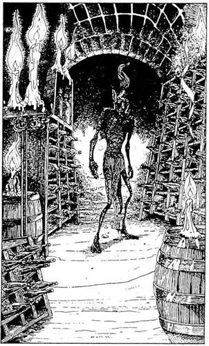
143.
Koncentrálsz, majd Varázsolsz. Megjelenik előtted a Hidra torzója, de ez minden. A teremtmény oly hatalmas, hogy egyetlen Varázslat nem képes teljes hasonmást létrehozni. Ha van még egy Hasonmás Varázslatod, használhatod - lapozz a 360-ra, ha nincs, keress valami alkalmas dolgot a hátizsákodban - lapozz a 226-ra. Ha egyik ajánlatnak sem tudsz eleget tenni - lapozz a 184-re.

144.
Az ajtó kinyílik, és egy szűk folyosóra lépsz. Rövidesen egy széles, faragott ajtóhoz érsz, rajta a felirat: "Borospince." Lenyomod a kilincset, mely enged. Amikor benézel, körös-körül állványokat látsz, rajtuk palackokkal teli rekeszeket… netán bor van a palackokban? A szobát néhány gyertya világítja meg, de csak gyengén. Amikor kinyitod az ajtót, parányi csengettyű szólal meg, és egy furcsa alak indul el feléd az egyik rekeszsor mellől. Ha kardot rántasz és azzal védekezel, lapozz a 154-re. Ha megvárod, mit mond a furcsa alak - lapozz az 56-ra.
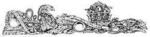
145.
Kardot rántasz, és az asztalt átugorva odapattansz hozzá. Ő ezalatt szemmel láthatóan azon igyekszik, hogy legyőzze Erőtlenség Varázslatodat… vagy mégsem? Arcát tenyerébe temetve elfordul tőled. Lapozz a 80-ra.

146.
Kérhetsz egy szívességet tőlük. Mit kérsz?
Azt, hogy mondják meg, miképp
tudnád legyőzni Rettegett
Balthust? Lapozz a 247-re.
Azt, hogy hová vezetnek az előtted
lévő ajtók? Lapozz a 201-re.
Azt, hogy hogyan védekezz a
Gendzsik ellen? Lapozz a 102-re.
Vagy azt mondod, hogy kissé fáradt vagy,
és megkérdezed, mit tehetnének
érted? Lapozz a 66-ra.
147.
A Gólem a földre zuhan és darabokra törik. Megkönnyebbülve mész a dobozokhoz, és átvizsgálod őket. Melyiket nyitod ki elsőnek?
Az első dobozt? Lapozz a 260-ra.
A második dobozt? Lapozz a 129-re.
A harmadik dobozt? Lapozz a 370-re.
148.
A Varázsló megvetően így szól: "Azokat okold a halálodért, akik erre az útra küldtek!" E szavak kíséretében előhúzza tőrét az övéből, és melledbe döfi. Küldetésed nem járt sikerrel, elbuktál.

149.
Egyáltalán nem érdekled őket; elküldenek. Mehetsz a Torony irányába - lapozz a 245-re; mehetsz balra, a szobor irányába, az udvar közepén áll - lapozz a 209-re, vagy letelepedhetsz a tűzhöz - lapozz a 380-ra.

150.
Gyorsan lehajolsz, hogy kivédd a Szigonyt. Elkerüli a nyakadat, de felsérti a homlokodat. Vesztesz 2 ÉLETERŐ pontot, és lapozz a 374-re.
151.
A páncélruhák különböző formájúak és nagyságúak. Beleborzongsz a gondolatba is, hogy vajon miféle teremtmények számára készülhettek; hátha találkozol közülük néhánnyal. Miközben az egyik különösen nagy ruhát nézegeted, annak karja hirtelen felemelkedik és pofon vág! Visszatántorodsz és véreset köpsz. Vesztesz 2 ÉLETERŐ pontot. De mivel a páncélzat többé nem moccan, úgy döntesz, talán okosabb lesz felmenni a lépcsőn. Ha a bal oldali lépcsőn mész fel - lapozz a 19-re, ha a jobb oldalin - lapon a 197-re.
152.
Varázsolsz, és a teremtmény megáll az úton; nem tudja pontosan, mi is történik vele. Némi nehézség árán felemeli a baltáját, és elindul feléd, de szemmel láthatóan már nem olyan erős ellenfél, mint korábban volt. Kardot rántasz, hogy végezz a Garkkal.
Gark ÜGYESSÉG 5 ÉLETERŐ 5
Ha legyőzöd a teremtményt - lapozz a 180-ra.

153.
Tehetetlen vagy a Gorgonnal szemben. Leroskadsz a sarokba, míg a varázsló behívja az őröket, akik perceken belül megjelennek. Karon ragadnak, és kivezetnek a szobából. Vezérük utasításra vár. "Kivégezni a parasztot!" - hangzik a válasz. Küldetésed nem járt sikerrel, elbuktál.

154.
Amikor előrántod a kardodat, a furcsa alak megáll, és elővesz valamit az övére erősített erszényből. Amikor a közeledbe ér, látod, hogy ez egy Fekete Elf, mely magas, vékony, fülei nyílhoz hasonlítanak, s az egyik lábára sánta. Kezében valamiféle kis szerkezetet tart. Rád néz, valamit bütyköl a szerkezettel, és az hirtelen vékony kis tőrré változik a kezében! Ha rátámadsz - lapozz a 275-re, ha leereszted a kardodat és beszédbe elegyedsz vele - lapozz az 56-ra.
155.
Megragadod a markolatot és kirántod a kardodat. De nem támadsz rá a varázslóra. Akaratod arra kényszent, hogy felajánld neki fegyveredet, s ezt meg is teszed. Lapozz a 65-re.
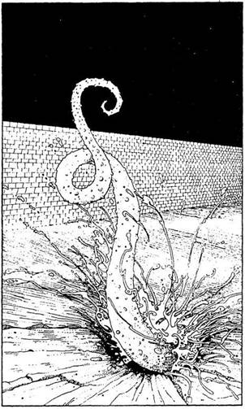
156.
Amikor átvágsz a nyitott udvaron, észreveszed, hogy egy kis földhányás mentén haladsz, amely akár a Fekete Toronytól a Templomig nyúló betemetett csővezeték is lehet. Lehajolsz, hogy megvizsgáld; lehet, hogy ez egy egyszerű vakondtúrás? Amint hozzáérsz a földhányáshoz, az besüpped, és rémülten látod, hogy a földből egy rücskös, szürke csáp nyúlik elő, és a lábad köré tekeredik! Hogyan küzdesz meg ezzel a furcsa "valamivel"?
Kardot rántasz? Lapozz a 71-re.
Súlytalanság Varázslatot
alkalmazol? Lapozz a 284-re.
Tűzvarázslatot alkalmazol? Lapozz a 114-re.
157.
A varázsló felordít fájdalmában, és a fejet fogva hátat fordít neked. Előrerohansz, és ekkor feléd fordul. Levegő után kapkodsz! Mar nem a varázslót latod, hanem egy ráncos bőrű, gonosz arcú boszorkányt, akivé átváltozott, s akinek a haja sziszegő kígyók tekergő sokasága. Ha megtámadod - lapozz a 199-re, ha gyorsan hátrálsz - lapozz a 232-re
158.
A vadállat nyöszörög, amikor megérinti a varázslat. Hatalmas súlya most valóban nagy teher a számára, mert nem rendelkezik megszokott erejével. Összecsuklik, s még arra sem képes, hogy a földről felemelkedjék. Odalépsz, és kardoddal átdöföd a mellét. A szerencsétlenül járt teremtmény holtan fekszik a lábaidnál. Lapozz a 77-re.
159.
Erőtlenség Varázslatot alkalmazol. Reménykedve várod, hogy a teremtmény ereje elfogyjon. Fogai azonban mélyen beléd vájnak, és elkeseredve tapasztalod, hogy egyre vadabbul támad. Már nem érzed a lábadat. A fájdalom iszonyú. Megszédülsz, és amikor állkapcsát a nyakad köré zárja, elveszted az eszméletedet. Lapozz a 323-ra.
160.
A Kutya-Fej feléd röpül, és kikapja a szerkentyűt a kezedből. Miközben vizsgálgatja, a másik két társa odamegy hozzá. Úgy látod, tetszik nekik a dolog. Míg így lekötöd a figyelmüket, átosonhatsz a szobán a hátsó ajtóhoz. Lapozz a 206-ra.
161.
A Forgószelet mélyen sérti közönyöd. Újra támad, ezúttal sikerrel - ledönt a lábadról. Megpróbálsz négykézláb elmenekülni, de bármerre is fordulsz, mindig az utadba áll. Túl kell járnod az eszén, de hogyan?
Kimutatod, mennyire haragszol
rá? Lapozz a 106-ra.
Beszélni kezdesz hozzá, hogy
kiengeszteld? Lapozz a 390-re.
162.
Érzed, amint erő járja át testedet. A teremtmények látják, amint izmaid kidagadnak, és a földbe gyökerezik a lábuk. Kardodat markolatánál fogva előrántod. Szerencsétlenségedre igen nehéz új erőd
fölött uralkodnod, és amint nagy lendülettel kirántod a kardodat, az messzire száll és jó pár méternyire előtted landolt. A teremtmények egymásra vigyorognak és támadnak. Most puszta kézzel kell velük megküzdened, vagy ha akarod, új Erővarázslat segítségével lerohanhatsz a hegyoldalon.
Ha megküzdesz a teremtményekkel, egyenként és a megadott sorrendben tedd!
ÜGYESSÉG ÉLETERŐ
Majom-Kutya 7 4
Kutya-Majom 6 6
Saját hasonló pontjaid úgy működnek, mint normális körülmények között, mert szupererős vagy ugyan, de fegyvered nincsen. Ha legyőzöd őket, visszanyered a kardodat. Erőd ismét a megszokott lesz. Lapozz a 32-re.

163.
Belekóstolsz a borba, és öklendezni kezdesz. Micsoda undorító ital! Az Elf várakozó pillantással néz rád. Mivel nem sértheted meg, kénytelen vagy egy újabb kortyot leereszteni a torkodon. Arcod ismét elfintorodik. Hálásan megköszönöd neki az italt, és közlöd, hogy már vissza kell indulnod. Elindulsz a szoba túlsó vége felé, de a gyomrod nem
bírja tovább ezt az iszonyú lőrét. Rettentően rosszul vagy. Hányingered miatt vesztesz 1 ÜGYESSÉG és 2 ÉLETERŐ pontot. Lapozz a 95-re.
164.
Az ajtó igen erős fémből készült, és még Erővarázslattal sem lehet betörni. Térdre rogysz. Ilyen messzire jutottál el, s most elbuksz. Képtelen vagy továbbmenni, ezért újra neki kell vágnod az útnak: ezúttal azonban más lépéseket kelt választanod. Ha rendelkezel Súlytalanság Varázslattal, ezt alkalmazhatod, hogy könnyebben kijuss a Fellegvárból. Holnap este újra kell próbálkoznod…
165.
Amikor érzed, hogy az erő már átjárja a testedet, előrántod a kardodat, és belefúrod az agyagfalba. Kivájsz egy lyukat, majd miután elhelyezted benne az egyik lábfejedet, újabb lyukat vájsz, és így megsokszorozott erőd segítségével elég gyorsan haladsz fölfelé a verem falán. Félúton jársz már, amikor erőd apadni kezd, és érzed, hogy már csak saját eredeti erőddel rendelkezel. Ha ezt hagyod, újra visszazuhansz a verembe. Vagy újabb Erővarázslatot alkalmazol, hogy elég erőd legyen a magad készítette lépcsősoron kimászni a veremből - lapozz a 398-ra, vagy segítségért kiálthatsz - lapozz a 202-re.
166.
Amikor beleharapsz a húsba, valahonnan a távolból fájdalmas, halk visítást hallasz. A hús rágós és sós, de nem rossz, úgyhogy veszel még egy darabot. Ekkor ismét hallod a síró hangot, de ekkor a
húsdarab kirepül a kezedből! Amikor utánakapsz, az menekül a markodból! Rájössz, hogy a hús még mindig él, és az sikoltozik, miközben eszed. Fájdalmas nyilallást érzel a gyomrodban, majd még egyet. A kétharapásnyi hús, amit lenyeltél, szabadulni szeretne a gyomrodból! A földre zuhansz, és két kezeddel a hasadat fogod. A hús háromszor "támadja" mg a hasadat, mielőtt megemésztenéd. Dobj két kockával háromszor. Ahányszor a dobott szám nagyobb, mint ÜGYESSÉG pontjaid száma, annyiszor vonj le 2 ÉLETERŐ pontot. Ha mindhárom dobás értéke meghaladja ÜGYESSÉG pontjaid számát, akkor a benned kelétkezett kár végzetes, és kalandod végét jelenti. Ha túléled a dolgot, vagy a bal oldali ajtón mehetsz tovább - lapozz a 13-ra, vagy a veled szemközti ajtón - lapozz a 281-re.
167.
A leves fölé hajolsz és beleszagolsz. Pfuj! Undorító! Megkérdezed, mi a fene ez, és amikor felnézel, látod, hogy egyikük lassú karmozdulatokkal integet a leves felé. Hátrarántod a fejedet, de már késő! Egy nagy Aligátorhal emelkedik ki a levesből, és éles fogaival a fejed után kap. Tedd próbára a SZERENCSÉDET! Ha SZERENCSÉD van, lapozz a 224-re. Ha nincs SZERENCSÉD, lapozz a 331-re.
168.
Elveszed az Amulettet, és a nyakadba akasztod. A Gendzsik zihálnak "Na eredj, idegen!- szólal meg egy hang. - Nem bántunk! Menj ki a szoba túlsó
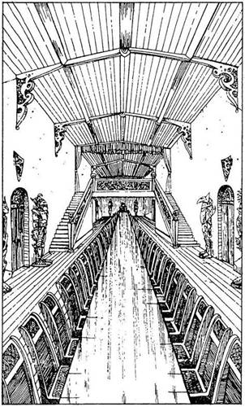
végében lévő ajtón." Miközben e szavak elhangzanak, a szoba túlsó végében lévő ajtó kissé megvilágosodik. Odamész és kinyitod. Lapozz a 328-ra.
169.
A helyiség valójában hatalmas ebédlő. Közepén hosszú asztal áll, egyszerre negyven-ötven ember tud köré leülni. Sokféle ajtó és folyosó nyílik innen, de téged elsősorban az a két széles lépcső érdekel, amelyek a terem fölött lévő belső erkély két széléhez vezetnek fel. Képek és páncélruhák díszítik a termet, ahol jelenleg senki nem tartózkodik. Mit teszel?
Felmész a bal oldali lépcsőn? Lapozz a 19-re.
Felmész a jobb oldali lépcsőn? Lapozz a 197-re.
Megnézegeted a képeket a
falon? Lapozz a 317-re.
Megvizsgálod a páncélruhákat? Lapozz a 151-re.
170.
Amint az erő elárasztja testedet, nekifeszülsz az ajtónak, ahogy csak bírsz. Dobi egy kockával. Ha 1-et, 2-t vagy 3-at dobsz, az ajtó nem szakad be, és vesztesz 2 ÉLETERŐ pontot. Ha 4-et, 5-öt vagy 6-ot dobsz, sikerül az ajtót betörnöd - lapozz a 292-re. Folytasd ezt mindaddig, míg sikerrel nem jársz. Azt is megteheted azonban, hogy a középső ajtóval próbálkozol meg - lapozz a 64-re, vagy a legtávolabbi ajtóval - lapozz a 304-re.
171.
Ehhez a játékhoz legalább 1 Arany Tallérra van szükséged. Ha nincs egyetlenegy Arany Tallérod sem, alkalmazhatsz Hamis Arany Varázslatot, és
Hamis Arany Tallérjaidat odaadhatod a Játékmesternek, aki cserébe 10 Arany Tallért ad neked. (Ha nincs egyetlen Arány Tallérod sem és Hamis Arany Varázslattal sem rendelkezel, nem játszhatod ezt a játékot.) Válassz számokat 1 és 6 között, és mindegyik számra tegyél annyi Arany Tallért, amennyit akarsz. Írd le a választott számokat és aranytétjeid számát. Most dobj egy kockával. Ha a dobott szám megegyezik azzal a számmal vagy azon számok egyikével, amit 1-től 6-ig választottál, akkor a rátett aranytéted ötszörösét nyered. Ezt a játékot addig játszhatod, ameddig akarod, vagy átmehetsz a Tőr Játékra - lapozz a 365-re, vagy a Robbanó Kő Játékra - lapozz a 278-ra. De ha már unod a Játékokat - lapozza 31-re. Bárhogy Is választasz, mielőtt továbbmennél, legalább egy Hat Választás Játékot végig kell játszanod, ha van Arany Tallérod vagy Hamis Arany Varázslatod.
172.
Előrelépsz, majd kardoddal rásújtasz a teremtményre. Kardod azonban csengve-bongva lepattan a kőtestről. Rájössz, hogy fegyvered nem tud sebet ejteni rajta. Ha akarsz, Varázsolj - lapozz a 26-ra, vagy hátizsákodból vegyél elő valamit, ami segíthet ellene - lapozz a 289-re.
173.
Erősen koncentrálsz, és ekkor zöldes színű, füstölgő gáz csap ki az ujjaid közül a teremtmény irányába. Felismeri, hogy forgó teste beszívhatja a gázt, ezért a Forgószél hátrálni kezd. Amikor már eléggé eltávolodik tőled, hanyatt-homlok a Fekete Torony felé iramodsz. Lapozz a 218-ra.
174.
A folyosó elkanyarodik, és végül egy lépcsőfeljáróba torkollik. Felmész a lépcsőn, és egy rövid folyosóra jutsz, amely falban végződik. Amikor megvizsgálod a falat, egy kis emelőt találsz rajta. Meghúzod. Ekkor egy kő elmozdul a falban, kis nyílás támad, átmész rajta, majd a kő visszazáródik. Zárt ajtó előtt állsz. Ha be akarod törni az ajtót - lapozz a 268-ra, ha inkább Erővarázslatot alkalmazol, hogy darabokra törd - lapozz a 116-ra.

175.
A teremtmény sose hallotta a Pincus nevet a Fellegvárban. A Kutya-Majom buzogánnyal a kezében morogva indul el feléd. Vagy gyorsan más nevet választasz - lapozz a 110-re, vagy felkészülsz, hogy meg- küzdj velük - lapozz a 288-ra.

176.
Amikor a közelébe érsz, megfordul és rád néz. Csöppet sem nyugtalanítja a fegyvered, és így szól: "Tedd le a fegyvert, idegen barátom. Én csak egy öregasszony vagyok. Nem bántalak." Mit teszel?
Nem hallgatsz rá, hanem egyre közelebb
mész hozzá? Lapozz a 127-re.
Elteszed a kardodat, és beszédbe
elegyedsz vele? Lapozz a 21-re.
Megállsz, és K.É.K. Varázslatot
alkalmazol? Lapozz a 329-re.
177.
Egy keskeny előszobában vagy. Hosszúsága jó néhány méter, és egy ajtó van a végében. Az előszoba közepe táján egy boltívhez érsz, ahonnan néhány lépcsőfok vezet lefelé. Ha egyenesen az ajtóhoz mész, lapozz az 5-re, ha leosonsz a lépcsőn - lapozz a 344-re.
178.
Körbe-körbe rohansz a konyhában, nyomodban a Devlin, ez az alacsony, törpéhez hasonló szellem. Székeket, ételt, késeket és tányérokat vagdosol hozzá, de nem használ! Ekkor felragadsz egy folyadékkal teli bögrét, és keresztülhajítod a szobán. Legnagyobb meglepetésedre a Devlin felüvölt, amikor a bögre eltalálja lángoló testét! Hirtelen eszedbe jut egy jó ötlet. Odalopakodsz a levessel teli üsthöz, és körbe-körbe kergeted a teremtményt az üst körül, aki épp hogy karnyújtásnyira fut előtted. Megálltok egymással szemben a gőzölgő lötty fölött. Nagy lendülettel rázúdítod az üst tartalmát a teremtményre, aki ordítva tűnik el, miközben a lángok kihunynak a testén. Ha most átkutatod a
konyhaszekrényt - lapozz a 17-re, ha inkább távozol a konyha túlsó végében lévő ajtón - lapozz a 265-re.
179.
Amikor a félhomályból kilépve az udvar közepe felé haladsz, éles hang kiált rád: "Állj! Ne mozdulj!" Körülnézel, de nem látsz senkit, aki megszólíthatott volna. Teszel még néhány lépést. Ismét megállásra kényszerít a titokzatos hang, majd egy nyílvessző süvít át a légen, és bal lábad mellett fúródik a földbe. Visszarohansz. Még most sem látsz senkit. Kelepcébe kerültél. Mit teszel?
Óvatosan továbbmész? Lapozz a 378-ra.
Odarohansz az udvar közepén álló
szoborhoz? Lapozz a 125-re.
Láthatatlanság Varázslatot alkalmazol
önmagadra, és így mész
tovább? Lapozz a 341-re.
180.
A nagy Gark a földön fekszik. Vársz egy percet, hogy lásd, vajon nem riasztotta-e fel a zaj az őröket, de minden nyugodtnak látszik. Átvizsgálod a teremtmény holmiját, de nem találsz Semmi értékeset. A derekára erősített erszényben 6 Arany Tallért és egy díszes Hajkefét találsz. Ha akarod, magaddal viheted ezeket a tárgyakat. Úgy döntesz, hogy továbbmész. Lapozz a 99-re.
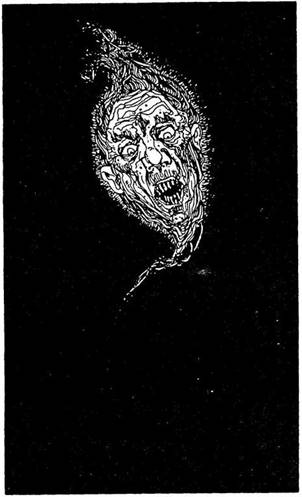
181.
Miután Varázsoltál, a Repülő Szőnyeg elszáll melletted, majd legnagyobb csodálkozásodra ugyanolyan szőnyeg jelenik meg, és körbe-körbe kezd röpülni a szobában. Hirtelen kavarogni kezd a levegő. A Kutya-Fej lerepül a falról, és dühödten beleharap a karodba. Vesztesz 2 ÉLETERŐ pontot. A férfi, aki Kígyóvá változott, odasiklik hozzád, és meg akar marni. Tedd próbára a SZERENCSÉDET! Ha SZERENCSÉD van, a kígyó fogai csak épp hogy felsértik a lábadat. Vesztesz további 2 ÉLETERŐ pontot. Ha nincs SZERENCSÉD, Fogai mélyen belefúródnak lábadba, amely fájdalmasan lüktetni kezd. A fellobbanó fényben látod, hogy a harapás halálos. A földre rogyva kezeddel befogod a sebedet, és haláltusádban vonaglani kezdesz. Amikor a méreg hatni kezd, szédülni kezdesz, majd elveszted az eszméletedet. Megbuktál, küldetésed nem járt sikerrel. Ha valamilyen szerencse folytán életben maradsz, akkor sem úszod meg sebesülés nélkül. Testedet fájdalom kínozza, és vagy felajánlasz valamilyen ajándékot a hátizsákodból ellenfelednek - lapozz az 54-re, vagy gyorsan elhagyod a szobát a másik ajtón át - lapozz a 25-re.
182.
A szoba foglya vagy. Mintha csak varázsütésre történne, fáklyád lángja lobban egyet, majd kialszik. A szobában koromsötét van. Ki tudja, honnan, úgy érzed, mindenhonnan, gúnyos nevetgélés hangja árasztja el a szobát. "Buta kalandor" szólal meg egy másik hang, mely először sipít, aztán elmélyül: "Üdvözlünk a Gendzsik otthonában! Kár, hogy ez az utolsó szoba, amit életedben látsz… Ó, igaz is, hiszen nem látsz. Vagy igen? De
mi látunk téged; ugye, testvéreim?" Mindenfelől nevetgélést hallasz. Hirtelen egy fényes szellemarc úszik feléd a levegőben. Riadtan ugrasz vissza, a földre veted magad, és iszonyú félelem kerít hatalmába. A félelem miatt vesztesz 1 ÜGYESSÉG, 2 ÉLETERŐ és 1 SZERENCSE pontot. Mit teszel?
Tűzvarázslatot alkalmazol? Lapozz a 85-re.
Illúzió Varázslatot alkalmazol? Lapozz a 395-re.
Keresel valami használható tárgyat a
hátizsákodban? Lapozz a 322-re.
Kardot rántasz? Lapozz a 248-ra.
183.
Hosszasan hálálkodik. Jó barátra tettél itt szert. Lapozz a 270-re.

184.
Mialatt a következő lépéseden gondolkodol, a Hidra közelebb jön hozzád. Fejei közül kettő feléd ugrik és beléd mar: az egyik a karodba, a másik a nyakadba. Éles fogai bőrödet áthasítva mélyen a húsodba vájnak. Mindennek vége. Küldetésed nem járt sikerrel; elbuktál.
185.
Az ajtó egy keskeny folyosóra nyílik, mely élesen balra kanyarodik, és néhány méterrel később egy másik ajtóban végződik. Lenyomod az ajtó kilincsét. Lapozz a 13-ra.
186.
A magas férfi elfogadja az árat, és meggyőzi az alacsonyabbat, hogy ez megfelelő. Az alacsony motyog valamit, szitkozódik, és előbb 6, majd 7 Arany Tallért kínál, de az árban, azaz 8 Arany Tallérban már megegyeztetek. Ha akarod, felajánlhatsz a magasnak 8 aranyat, de akkor csinálnod kell néhány Hamis Arany Tallért. Ha így döntesz, alkalmazd a Hamis Arany Varázslatot, és lapozz a 15-re. Ha ezt nem akarod, az alacsony végül is beleegyezik az árba, megveszi a tőrt és távozik. Te ott maradhatsz beszélgetni a magas férfival - lapozz a 83-ra, vagy folytathatod az utadat lapozz a 245-re.
187.
Erősen koncentrálsz a varázsló gondolataira. Képek és szavak villannak át az agyadon. Néhány perccel később már nincs semmi. Feltekintesz Rettegett Balthusra, aki így kiált rád: "Ne próbáld meg kifürkészni Rettegett Balthus gondolatait!" - Újra erősen összpontosítasz, de eredménytelenül, mert Balthus ellenáll a Varázslatodnak. Egy másodpercig elgondolkozol a kapott képeken: egy táblázat a harci terepasztal alatt… egy hangos reccsenés keltette rémület… egy vakító fény… egy gyűrű Balthus ujján… egy borotvaéles kard… és te magad…
Rettegett Balthus magában dünnyög, miközben a szeme sarkából téged figyel. Egyik karját felemeli és meredten nézi. Aztán rád néz. Karját előre-hátra, majd egyre gyorsabban jobbra-balra lendíti a levegőben. Aztán nagyot csap az asztalra. Te a földre zuhansz - nem a meglepetéstől, hanem azért, mert a föld vadul rengeni kezd alattad. Az
egész szoba úgy inog, mintegy hajó a viharban. Habár Balthus szilárdan áll a lábán és lassan elindul feléd, te egyáltalán nem vagy képes lábra állni. Az egyetlen esélyed, hogy Varázsolj, ha egyáltalán maradt még Varázslatod. Melyik varázslatot választod?
A Súlytalanság Varázslatot? Lapozz a 279-re.
Az Illúzió Varázslatot? Lapozz a 314-re.
Ha egyikkel sem rendelkezel, lapozz a 115-re.
188.
Hirtelen erős fény gyullad ki előtted. Eltakarod a szemedet, majd megdörzsölöd - de nem látsz semmit! Páni félelem kerít hatalmába, amikor mély, dörmögő hangot hallasz. Puha léptek közelednek feléd, és felordítasz fájdalmadban, amikor ez a láthatatlan teremtmény üvöltve a lábadba vájja tűhegyes fogait. Mit teszel?
Erővarázslatot alkalmazol? Lapozz a 301-re.
Erőtlenség Varázslatot
alkalmazol? Lapozz a 159-re.
Kardot rántasz és a teremtményre
sújtasz? Lapozz az 51-re.
189.
Bármelyik Varázslatot alkalmazhatod:
Illúzió Varázslat Lapozz a 319-re.
Védelem Varázslat Lapozz a 130-ra.
Erőtlenség Varázslat Lapozz a 43-ra.
Ha egyikkel sem rendelkezel, kardot kell rántanod. Lapozz a 333-ra.
190.
A Gólem tökéletes hasonmása jelenik meg előtted. Megparancsolod neki, hogy támadja meg a valódi Gólemet, aki már csaknem föléd tornyosul. Döntsd a két Gólem közötti harcot:
Gólem ÜGYESSÉG 8 ÉLETERŐ 10
Ha az általad varázsolt hasonmás legyőzi a valódi Gólemet - lapozz a 147-re. Ha nem győzi le, neked kell megvívnod vele. Ha legyőzöd, lapozz szintén a 147-re.
191.
Levegő után kapkodsz, amikor a Varázslat testet ölt előtted. Tökéletes hasonmásod áll előtted éppúgy felfegyverezve, mint te. A varázsló parancsára hasonmásod rád támad, és meg kell küzdened vele. ÜGYESSÉG, ÉLETERŐ és SZERENCSE pontjai a te hasonló pontjaiddal egyeznek meg. Egyetlen előnyöd lehet vele szemben: felhasználhatod a SZERENCSÉDET arra, hogy nagyobb kárt tegyél benne, vagy hogy minimális sebet kapj - hasonmásod itt nem alkalmazhatja a SZERENCSÉT. Ha te győzöl, lapozz a 119-re.
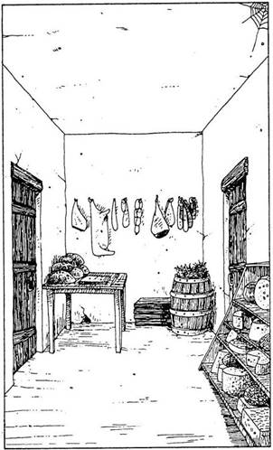
192.
Épp jókor Varázsolsz! A lövedék nekicsapódik varázspajzsodnak, ahonnan visszapattan és a földre esik. Megnézed a maradványait, hogy megtudd, mivel is lőttek rád. Ekkor látod, hogy egy paradicsom volt! A szoba közepén alvó alak mocorogni kezd. Lapozz a 29-re.
193.
Melyik Varázslatot alkalmazod?
A Hamis Arany Varázslatot? Lapozz a 211-re.
A K.É.K. Varázslatot? Lapozz a 123-ra.
Az Illúzió Varázslatot? Lapozz a 35-re.
Ha egyikkel sem rendelkezel, lapozz a 283-ra.
194.
Egyre erősödik a szorítás a nyakadon, és nem érzel mást, csak félelmet ezektől a nem emberi hosszúkás-halott arcú lényektől, akik kárörömmel szemlélnek. Küldetésed nem járt eredménnyel, elbuktál!
195.
Balthus követ a tekintetével, amikor lehajolsz, de eltakar a terepasztal. Az apró tűzgolyó belehasít a levegőbe, de elzúg a fejed fölött. Gyorsan varázsolhatsz valami mást. Lapozz a 377-re.
196.
A szoba valójában éléskamra Először a furcsa édeskés, fűszeres és avas illatok keveréke csapja meg az orrodat. Az egyik falon kampókra akasztott
különböző húsok lógnak. Az egyik sarokban egzotikus gyümölcsökkel teli hordó áll. Egy rekeszben vagy egy tucat különféle sajt van, és undorodva fintorítod el az orrodat, amikor megérzed az úgymond "túlérett sajtok" szagát. Egy asztalon hat vekni fekete kenyér fekszik egy kés meg egy vágódeszka mellett. A szobából két ajtó nyílik. Ha éhes vagy, ehetsz egy keveset - lapozz a 45-re, de el is hagyhatod a szobát a bal oldali ajtón át - lapozz a 13-ra, vagy a jobb oldali ajtón át - lapozz a 281-re.
197.
A lépcső igen rozoga, és nyikorog a súlyod alatt. Óvatosan felmászol az erkélyhez. Lapozz a 363-ra.
198.
Gyorsan cselekszel. Benyúlsz a hátizsákodba, és egy marék gazt húzol elő. Megmutatod a teremtménynek, azt mondod neki, hogy gyógyfűkereskedő vagy, és azért jöttél, hogy meggyógyítsd a Lord könyvtárosát, aki súlyos beteg. A futár nem mondott neked semmiféle jelszót. Vajon elhiszi-e neked? Tedd próbára a SZERENCSÉDET! Ha SZERENCSÉD van, hisz neked, és beenged - lapozz a 177-re. Ha nincs SZERENCSÉD, nem érdekli, ki vagy, a jelszó nélkül nem enged be, és kezében a lándzsával feléd közeledik. Lapozz a 290-re.
199.
A varázsló Gorgonná változott, egy különösen veszélyes teremtménnyé, aki képes kővé változtatni azt, akire ránéz. Amikor előredöfsz, mereven az arcába bámulsz. Ekkor Varázslata hatni kezd. Végtagjaid megmerevednek. A földre zuhansz. Lassan elveszted az eszméletedet, ahogy kővé
válsz és halott szoborként heversz Rettegett Balthus lábai előtt… Küldetésed nem járt sikerrel; elbuktál.
200.
Amint megmoccansz, úgy látszik, a teremtmény is kibillen eddigi dermedtségéből. Választhatsz: vagy a szoba túlsó végében lévő ajtóhoz rohansz - lapozz a 237-re, vagy pedig megkockáztatod, hogy a néma óriás esetleg rád ront, és megnézed a ládikókat - lapozz a 98-ra.

201.
A két ajtó felé mutatnak. Azt mondják, a bal oldalin a konyhába jutsz, ahol a szakács épp a vacsorát főzi. A jobb oldali ajtó a Nagy Csarnokba vezet, ahol a fogadásokat tartják. Lapozz a 270-re.
202.
Néhány percig tartó kiáltozás után egyre közeledő hangokat hallasz; ismeretlen nyelven beszélnek. Megkönnyebbülsz, amikor négy fej jelenik meg a verem szájánál. Kikiáltasz nekik, hogy dobjanak le neked egy kötelet. Pusmognak valamit, majd eltűnnek. Végül rohanó léptek zaját hallod közeledni. Ismét ott állnak a verem peremén, és nem kötelet dobnak le, hanem egy üstből forró olajat zúdítanak
le rád! Legközelebb jobban kell ügyelned arra, hogy merre mész, most utad itt véget ér! És ne feledd: Az idegeneket nem látják szívesen a Káosz Fellegvárában.
203.
Amint az ajtók felé futsz, megbotlasz, és a teremtmény utolér. Egyik karjával megragadja a kezedet, és áthajít a szoba túlsó felébe: a tükör alatt csapódsz a falhoz, majd elterülsz a földön. Ha most kardot rántasz - lapozz a 16-ra, ha inkább Varázsolsz egyet - lapozz a 11-re.
204.
Befogod az orrodat, és belegázolsz a nyálkás vízbe. Néhány lépés után érzed, hogy valami húzza a lábadat. Kiemeled a lábad a vízből, és látod, hogy valamiféle inda csavarodott köré. Visszalépsz a partra, de az inda csak nem enged. A vízből egyszer csak kiemelkedik az inda másik vége, és felemelkedik a levegőbe, mintha csak megnézne magának, majd nagy csobbanással visszapottyan. Már látod, hogy ez nem inda, hanem egy hosszú Kloáka Kígyó, mely feléd tart. Lapozz a 73-ra.
205.
A magasabb férfi sértőnek tartja az árat, amit javasolsz, de az alacsonyabb elfogadja. A magasabb egyre hevesebben vitatkozik, és hirtelen kirántja a kardját. Az alacsonyabb is ugyanezt teszi, és mivel veszély fenyeget, te is. Ketten vagytok a magasabb férfi ellen. Nektek kell a csatát megnyernetek. Mielőtt belevágnátok az egyes Fordulókba, dobj
egy kockával. Ha a kapott szám páratlan, a magasabb férfi támad elsőnek az alacsonyabbra, miközben te nem veszel részt ebben a Fordulóban (bár még egyszer kell dobnod az alacsonyabb nevében). Ha a kapott szám páros, a magasabb ellened fordul (ekkor az alacsonyabb marad ki ebből a Fordulóból). Ha az alacsonyabb férfi elesik a küzdelem során, a magasabb fogja veled megvívni a döntő csatát.
ÜGYESSÉG ÉLETERŐ
Magas férfi 8 8
Alacsony férfi 7 6
Ha a csatának vége és az alacsonyabb férfi marad életben, lapozz a 309-re. Ha viszont elesik, lapozz a 368-ra.

206.
Kimész az ajtón, és egy újabb csigalépcső lábánál állsz, mely a Fekete Toronyba vezet. Miközben fölfelé mész a lépcsőn, egy kis pihenőhöz érsz, ahonnan csak egy ajtón át lehet továbbjutni. Megpróbálod kinyitni az ajtót, s az enged. Lapozz a 182-re.
207.
Kinyitod az ajtót, és belesel a sötét helyiségbe. Néhány lépést teszel előre, és várod, hogy megszokja a szemed a sötétet. Becsukod magad mögött az ajtót, és elbúcsúzol a Leprechauntól. Lapozz a 188-ra.
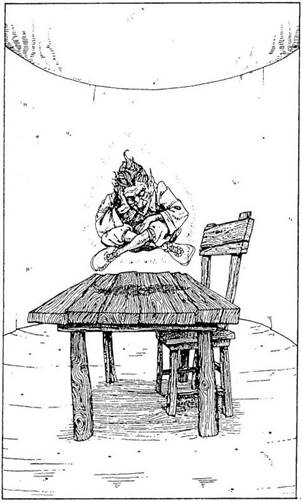
208.
A Pók-Ember fegyvere a harapása, mely igen mérgező. Amikor megharap, testedet átjárja a méreg, és megbénítja idegrendszeredet. Amikor felbuksz és elterülsz a földön, újra és újra támad. Az utolsó emlékképed a ronda kis arca, s szája, amellyel beléd harap. Küldetésed nem járt sikerrel; elbuktál.
209.
Jól szemügyre veszed a különös építményt. Kiderül, hogy az nem szökőkút, hanem valamilyen templom. Az egyik oldalában egy ajtó van, melyet, ha akarsz, megtekinthetsz, de tovább is mehetsz a Fellegvár felé. Ha tovább akarsz menni, lapozz a 156-ra. Ha az ajtót akarod megvizsgálni, lapozz a 362-re.
210.
Tágas, kör alakú szobában vagy. A helyiséget a falhoz erősített egyetlen fáklya világítja meg. Bútor nincs odabent, kivéve egy ormótlan asztalt meg egy széket, mely a szoba közepén áll. Az asztal fölött lebegve alszik egy parányi ember, aki zöld inget és nadrágot visel. Nem lehet magasabb egy méternél, és el sem akarod hinni, hogy a zaj, amit a szobába lépve csaptál, nem ébresztette fel! Egyszer csak nyikorgást hallasz a hátad mögül, és épp jókor fordulsz meg, mert egy rád irányított gyorstüzelő kis csúzliféleséget pillantasz meg. Szétlőhet,
hacsak nem alkalmazod a Védelem Varázslatot! Ha varázsolsz - lapozz a 192-re. Ha nem tudsz (vagy nem akarsz) varázsolni - lapozz a 359-re.
211.
Átadod neki a követ, amit arannyá változtattál. ,,Minden, amire szükségem van, itt van lenn - mondja. - Jól tartanak, van munkám, és ha unatkozom, azt is megengedik, hogy szórakozásból megkínozzam a foglyokat. Mit kezdjek ezzel az arannyal?" Jobb, ha más Varázslatot választasz. Ha K.É.K. Varázslatot alkalmazol, lapozz a 123-ra, ha Illúzió Varázslatot - lapozz a 35-re. Ha egyikkel sem rendelkezel, lapozz a 283-ra.
212.
Ha az elágazástól balra mész tovább, olyan úton haladsz, mely végül beletorkollik egy észak felé tartó másik folyosóba. Ezen az új úton mész tovább egy darabon, amíg az szűkülni nem kezd. Lapozz a 90-re.
213.
Épp jókor rántod elő a kardodat, mivel a Törpe már-már elér. Egymás után küzdj meg velük:
ÜGYESSÉG ÉLETERŐ
Törpe 5 6
Goblin 6 4
Ork 5 7
Ha te győzöl, lapozz a 235-re. Elmenekülhetsz, ha akarsz, és elrejtőzhetsz az udvar közepén lévő szobor mögött. Lapozz a 209-re.
214.
Kihúzod a dugót a Fiolából, és a benne lévő zöld színű folyadékot ráöntöd a teremtményre. Az morogni, ordítani kezd, miközben a torkához kap. A folyadék égetni kezdi a Vízköpő Sárkány testét, és lángnyelvek csapnak fel a magasba. Lapozz a 62-re.
215.
Ki kelt találnod valami mesét ezeknek a ronda nőknek. Ha azzal állsz elő, hogy az Őrök Kapitánya vizsgálatot rendelt el a konyhában, mert többször is ételmérgezés történt, lapozz a 136-ra. Ha azt mondod, hogy eltévedtél és a helyes utat keresed, lapozz a 41-re.
216.
Mivel közeledsz hozzá? Ha azt mondod a teremtménynek, hogy vendég vagy itt - lapozz a 294-re; ha megpróbálod megvesztegetni a Garkot 3 valódi Arany Tallérral - lapozz a 391-re; ha Hamis Arany Varázslatot alkalmazol - lapozz a 36-ra.
217.
Olyan óvatosan nyomod le a kilincset, ahogy csak tudod, mivel fogalmad sincs, mi vár rád odabent. Lassan kinyílik az ajtó, és bemész a sötét szobába, amelyet egyetlen pislákoló fáklya fénye világít meg. Megfagy benned a vér, amikor egy pontosan
a torkod felé szálló háromágú szigonyt veszel észre! Egy szempillantás alatt kell eldöntened, hogy mitévő legyél. Mit teszel?
Azonnal Védelem Varázslatot
alkalmazol? Lapozz a 293-ra.
Megpróbálsz gyorsan félreugrani
a szigony elől? Lapozz az 57-re.
218.
Hatalmas faajtó előtt állsz, mely jól be van zárva. Ha hármat kopogsz az őrnek, lapozz a 118-ra. Ha az Erővarázslatot alkalmazod, hogy kinyisd az ajtót, lapozz a 94-re.

219.
Lehajolsz, és eltakarod a fejedet. Egy üveg eltalál, majd egy másik, aztán ismét egy - de semmit nem érzel! Hogy lehet ez? Ekkor jössz rá, mi történik. Valószínűleg a borba olyan port kevertek, amelytől hallucinálsz, és azt képzeled, hogy az üvegek támadnak. Hirtelen megszűnik a zaj. Felnézel, és ahogy sejtetted, az összes üveg a helyén van a rekeszekben. Megkönnyebbülten mész tovább a Borospincéből. Lapozz a 95-re.
220.
A kések beleütköznek varázspajzsodba, és a földre hullanak. A Korongádok is nekivágódnak a pajzsnak, és ők is visszapattannak. Valamit pusmognak egymás között, miközben sakkban tartanak, amíg a Varázslatod hat. Úgy látod, hogy megegyeztek valamiben, egyikük ugyanis visszagurul a folyosón, valószínűleg segítséget hív. A másik kettő apró fúvócsöveket kap elő az öve mögül. Valami sörétfélét dugdosnak a szájukba, és felkészülnek a támadásra. Előbb azonban karddal kell megküzdened velük. A megadott sorrendben csapj össze velük
ÜGYESSÉG ÉLETERŐ
Első Korongád 7 6
Második Korongád 6 5
Ha te győzöl, továbbmehetsz a hal oldali elágazáson - lapozz a 243-ra, vagy a jobb oldali elágazáson - lapozz a 2-re.

221.
Amikor közelebb lépsz hozzá, furcsa mozdulatot tesz a kezével, és fejét lehajtva motyog valamit. Lapozz a 127-re.
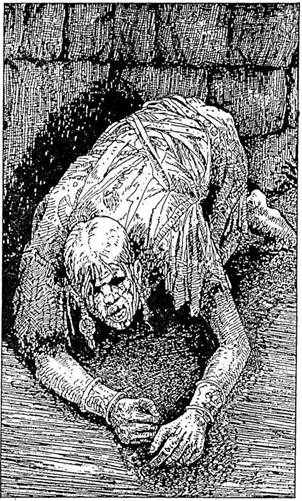
222.
Amint a fal mellett lopakodsz, néhány méternyi távolságból nyöszörgő hangot hallasz. Amint közelebb érsz, emberi alakot fedezel fel, aki nagy fájdalmak közepette szenvedve vonaglik a földön. Segítségért kiált feléd. Ha odalépsz hozzá és megnézed, miben lehetsz a segítségére - lapon a 137-re; ha nem veszel tudomást róla és továbbmész a fal mentén - lapozza 14-re.

223.
Elfintorodik, amikor a csúf kis emberkét meglátja, és az álláig húzza a takarót. Lapozz a 138-ra.
224.
Gyorsan hátrarántod a fejedet, így épp hogy elkerülöd a Harapós Hal állkapcsát, de bevered a fejedet a láncba, amelyen az üst lóg. Vesztesz 2 ÉLETERŐ pontot. Szédelegsz az ütéstőt, és miközben megpróbálod összeszedni magad, a három vénasszony a konyha végében lévő ajtóra mutatva távozásra szólít fel. "Végre megszabadulunk tőled!" - mondják, majd kilöknek az ajtón. Lapozz a 265-re
225.
A férfi azonnal helyesel. A tör valóságos mestermunka. Az alacsonyabb férfi közli, hogy sajnos nincs ennyi pénze, és eltűnik a szürkületben. A magasabb férfi jutányos áron, 9 Arany Tallérért
felajánlja neked a tőrt. Ha akarod, Hamis Arany Varázslattal elegendő aranyat tudsz varázsolni ahhoz, hogy megvedd a tőrt - lapozz a 15-re, és jelöld a Kalandlapon, ha ezt a varázslatot alkalmazod; ha inkább elnézést kérsz és távozol - lapozz a 245-re.

226.
Ha rendelkezel az alább felsorolt tárgyakkal, bármelyiket előveheted a hátizsákodból!
Ezüst Tükör Lapozz a 312-re.
Arany Prém Lapozz a 37-re.
Zsebszerkentyű Lapozz a 384-re.
Ha egyikkel sem rendelkezel, lapozz a 184-re.
227.
Kezdi őket komolyan dühíteni a viselkedésed. A kedélyek felkorbácsolódnak, kiabálni kezdenek. Hirtelen ellepnek. Küzdesz ellenük, ahogy bírsz, de egyikük fejbe vág kardja markolatával. Elhomályosul a világa szemed előtt, és elveszted az eszméletedet. Lapozz a 234-re.
228.
A zárt ajtó igen erős; kemény tölgyfából készült. Nem Úgy néz ki, mint amit be tudnál törni, de megpróbálhatod. Ha akarod, Erővarázslatot is alkalmazhatsz, hogy bejuss rajta. Egyébként a zár, amely rézből van, egy Rézkulcs segítségével kinyitható. Ha van ilyen kulcsod, megpróbálkozhatsz vele. Mit teszel?
Megpróbálod betörni az ajtót? Lapozz a 88-ra.
Erővarázslatot alkalmazol? Lapozz a 170-re.
A Rézkulccsal nyitod ki? Lapozz a 296-ra.
229.
Becsapod magad mögött az ajtót. Egy rövid, keskeny, kanyargós folyosón mész tovább, s egy újabb lépcsőfeljáróhoz érsz, mely a Fellegvár csúcsába vezet fel. A falon feliratot látsz: "ÁLLJ! Innen csak Rettegett Balthus engedélyével lehet továbbmenni!" Érzed, hogy lassan célhoz érsz. Óvatosan felmész a lépcsőn a következő szintre, és a Fellegvár harangtornyában találod magad. Előtted vastag vasajtó. Lenyomod a kilincset, de az ajtó zárva van. Felemelsz egy kis fedőlapot, és alatta kis rugós zárat látsz, Ez titkos számzár, s csak az tudja kinyitni, aki ismeri a kombinációt. Te tudod-e? Ha igen, lapozz ahhoz a fejezethez, amelyet a számok megadnak. Ha nem tudod, megpróbálhatod betörni az ajtót - lapozz az 50-re, vagy megkísérelhetsz Erővarázslatot alkalmazni - lapon a 164-re.
230.
"Azért jöttél, hogy egy kis pénzt szerezz, mi?" - kérdi tőled a Majom-Kutya. - "Hát tulajdonképpen megoszthatod velünk a kereseted egy részét!" Mivel egy fillér sincs nálad, amit odaadhatnál nekik, előveheted az erszényedből a kis szikladarabot, és megpróbálkozhatsz a Hamis Arany Varázslattal. Ha egy Arany Tallért ajánlasz fel nekik - lapozz a 96-ra, ha úgy döntesz, hogy megvívsz velük - lapozz a 288-ra. Ha a Hamis Arany Varázslatot alkalmazod, jelöld a Kalandlapodon.
231.
Belököd az ajtót a válladdal. Tedd próbára a SZERENCSÉDET! Ha SZERENCSÉD van, az ajtó betörik - lapozz a 196-ra. Ha nincs SZERENCSÉD, a vállad sebesül meg - vesztesz 1 ÉLETERŐ pontot - és ismét Próbára kell tenned a SZERENCSÉDET, mindaddig, míg SZERENCSÉD nem lesz. Minden egyes sikertelen kísérlet után 1 ÉLETERŐ pontot vesztesz. Ha végre sikerül betörnöd az ajtót - lapozz a 196-ra. De ha a vállad már túlságosan

fáj, visszamehetsz az első elágazáshoz, ahonnan jöttél, és bármikor másik irányba mehetsz. Lapozz a 243-ra.

232.
Rémülten hátrálsz az undorító teremtmény elől. Az elbeszélésekből, melyeket gyerekkorodban hallottál, tudod, hogy egy Gorgonnal állsz szemben! Tedd próbára a SZERENCSÉDET! Ha SZERENCSÉD van - lapozz a 111-re, ha nincs SZERENCSÉD - lapozz a 72-re.
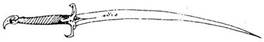
233.
Sikerült kivédened a Szigony két ágát, de a harmadik a válladba fúródik. Szerencsédre nem a kardforgató karod sérült meg. Megmarkolod a szigony szárát, és kihúzod a válladból, miközben ordítasz a fájdalomtól. Vesztesz 5 ÉLETERŐ pontot, amiért megsebesültél. Lapozz a 374-re.

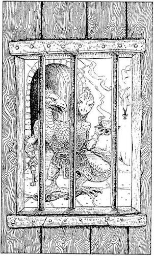
234.
Egy koszos, sziklába vájt szobában ébredsz. Az ablakon és az ajtón lévő rácsból arra következtetsz, hogy valamilyen cellában vagy. Nem tudsz mit csinálni, leülsz a sarokban egy szalmamatracra, és vársz, hátba jön valaki. Úgy egy óra múlva csoszogó lépteket hallasz odakintről. Kinézel az ajtórácson, és egy gyíkszerű teremtményt látsz, amint kezében korsóval meg egy mély tállal feléd csoszog a folyosón. A vadállatnak két feje van, és ezek beszélgetnek egymással. Pikkelyes bőre szürke, hosszú farkát maga után vonja a folyosón. Megáll az ajtód előtt, és egy kis nyíláson át benyújtja neked a korsót meg a tálat, majd visszacsoszog, s leül a terem végében egy asztalhoz. Kenyeret és levest kaptál. Mit teszel? Megeszed az ételt, vagy odakiáltasz ennek a Calacorm nevű teremtménynek? Ha megeszed az ételt - lapozz a 397-re. Ha odakiáltasz a Calacormnak - lapozz a 69-re.
235.
Attól félsz, hogy talán felfigyelt valaki a verekedés zajára, ezért kilesel a sötétségbe. Nem látsz semmi mozgolódást. Amikor átvizsgálod a teremtmények zsebeit, 8 Arany Tallért találsz, egy rézszínű kulcsot meg egy sötét, krémszerű folyadékkal teli kancsót. A felsorolt tárgyak közül kettőt magaddal vihetsz. Ami a kancsó tartalmát illeti, egy leírást találsz róla a kancsó tetején valaki rovásírással véste rá. A szíved nagyot dobban, amikor megtudod, hogy ritka kincset, Varázsitalt tartasz a kezedben. A kancsóban két adag ital van, és mindegyik adag 1-gyel növeli Varázspontjaid számát. Ennek köszönhetően plusz egy varázslattal gyarapíthatod varázslataid számát. Ezt a Varázsitalt
közvetlenül a Varázslás után használd. Ilyenkor az italnak köszönhetően nem kell kihúznod a Kalandlapról azt a Varázslatot, amit előtte alkalmaztál. De ne felejtsd, ezt a Varázsitalt csak kétszer használhatod. Most pedig folytasd utadat, vagy a Fellegvár irányába - lapozz a 245-re, vagy a fáklyafénynél beszélgető két férfi felé - lapozz a 269-re.

236.
Óriási lelkesedéssel elfogadják a Bogyókat, a szájukba tömködik és rágcsálják őket. Néhány másodperc múlva egymás után elalszanak. Ekkor fogod magad és odamész, hogy megvizsgáld a ládát. Amikor a tetejét felnyitod, egy csomó babát látsz benne, épp olyanokat, mint amilyenek a földön hevernek, és egyéb fajátékokat is találsz. Egyiket sem találod igazán értékesnek, így aztán elhagyod a szobát a láda mellett lévő ajtón át. Lapozz a 140-re.
237.
Kinyitod az ajtót, és egy folyosón találod magad, mely néhány méteren át kelet felé halad és egy lépcsőbe torkollik. Felmész a lépcsőn, és egy keskeny folyosóra érsz. Egy közeli ajtónyíláson át tágas, jól megvilágított szobát látsz. Elindulsz arrafelé. Lapozz a 169-re.
238.
Rámutat a polc egyik részére, ahonnan leveszel egy könyvet, az asztalhoz viszed és olvasni kezded. A könyv a Fellegvár hiteles történetének leírását tartalmazza. A Fekete Tornyot Rettegett Balthus nagyapja építtette. A gonosz erők szentélyévé vált, a jog és a rend fokozatosan utat engedett a káosznak, amikor az undorító teremtmények egyre magasabbra törtek a hatalmi ranglétrán. Balthus nagyapja végül ügy döntött, hogy meg kell védenie magát talpnyalóitól, s ennek érdekében különböző védőcsapdákat létesített a teremtmények birodalma és saját lakhelye között. E csapdák közül a legjelentősebbek a Halál Verem Csapda és a saját szobája ajtaján lévő Kombinációs Számzár. A számzár kombinációja 217. Később majd olvasol még olyan titkos folyosókról, melyek behálózzák a Fellegvárat. Választhatsz: vagy azt kérdezed meg a férfitól, merre van Rettegett Balthus lakrésze - lapozz a 18-ra, vagy azt, merre van Sziklaszirt Teremtményeinek birodalma - lapozz a 375-re, vagy elhagyhatod a szobát a hátsó ajtón ár - lapozz a 31-re.
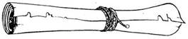
239.
Jó ötleted támad. Lasszót csinálsz a kötélből, és a fejed fölött meglengetve megcélzod a ládát. Többszöri kísérlet után a lasszó ráesik a ládára, ekkor meghúzod a hurkot. Amint a kötelet meghúzod - a láda elmozdul. Húzol rajta még egyet, erre a láda
megbillen az árok peremén, és a mélybe zuhan, de legnagyobb megdöbbenésedre a láda iszonyatos súlya téged is magával ránt! Ha van Súlytalanság Varázslatod, lapozz a 379- re. Ha nincs, lapozz a 82-re.

240.
Lángokat lövellő kezed a magasba emeled, és végighúzod a torkodat szorongató Szellem ruhájának a hátán. A ruha lángra lobban, és halk kiáltás hagyja el a halott ajkát. A többi Szellem hátrálni kezd. Még néhányat lángra lobbantasz a hátrálók közül. De szerencsétlenségedre túl közel álltak hozzád, így vesztesz 2 ÉLETERŐ pontot, mert égési sebeket szereztél. Óvatosan mész előre, közben sakkban tartod a Szellemeket, amíg biztonságban elhaladsz a nő mellett. Lapozz a 6-ra.
241.
Hatalmas ütést mérsz a teremtményre, ám legnagyobb rémületedre a kard pengéje belegabalyodik a teremtmény hosszú hajába. Megpróbálod kihúzni, de rávág a kardodra, mely kirepül a kezedből, és a szoba túlsó végében ér földet. Védtelen vagy. Vagy puszta kézzel kell tovább harcolnod, vagy Erővarázslatot alkalmazhatsz. Ha puszta kézzel, fegyver nélkül küzdesz meg - vonj le 3-at ÜGYESSÉG pontjaid számából a harc további idejére. Ha Erővarázslatot alkalmazol, normál ÜGYESSÉG pontjaiddal folytathatod a harcot. Ha te győzöl, visszaveheted a kardodat, és lapozz a 77-re.
242.
Az üvegekben és rekeszekben száz meg száz különböző fajta bor van. Nem egy közülük rendkívül régi és értékes. A szoba egyik sarkában egy asztal áll borkóstoláshoz megterítve, két üveggel és poharakkal. Ha a Vörösbort kóstolod meg - lapozz a 24-re, ha a Fehéret - lapozz a 105-re. Ha egyiket sem kóstolod meg és továbbmész - lapozz a 95-re. Ha úgy döntesz, hogy távozol, magaddal vihetsz egy üveg bort az egyik rekeszből az útra.
243.
A folyosó jó néhány méter után egy ajtóba torkollik. Rátapasztod a füledet az ajtóra, és bentről nagy szuszogásokat hallasz, mintha valami hatalmas teremtmény aludna. Óvatosan lenyomod a kilincset, és az ajtó kinyílik. Bent, bár a szoba sötét, hatalmas méretű alvó Goblint látsz a földön. Ha lábujjhegyen belopakodsz a szobába - lapozz a 352-re, ha visszamész az elágazáshoz és a jobb oldali folyosón próbálsz meg továbbmenni - lapozz a 2-re.
244.
Miközben varázsolsz, a Korongádok megtorpannak. Szemmel láthatólag kissé félnek, hogy mit tervezel ellenük. Szőrrel benőtt szemük láttára hirtelen eltűnsz! Megint pusmogni kezdenek egymás közt. Vajon hová tűntél? Láthatatlanul folytathatod az utadat: ha a jobb oldali folyosón mész tovább - lapozz a 2-re, ha a bal oldali folyosót választod inkább - lapozz a 243-ra. Elillansz a helyszínről, miközben a Korongádok lázasan kutatnak utánad, de hiába.
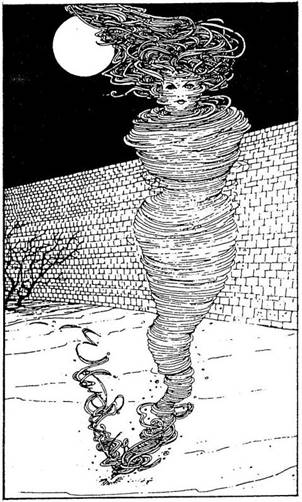
245.
Továbbmész a Fellegvár felé. Bár az éjszaka nyugodt, hirtelen halk süvítést hallasz, mely egyre erősödik, és egy széllökés olyan erővel taszít meg, hogy alig tudsz a lábadon megállni. Eltakarod a szemedet, amíg a széllökés ereje kissé gyengül, majd amikor újra körülnézel, egy élő Forgószelet látsz, melynek női szellemarca van. Szavakat formái, de ezeket nem tudod leolvasni a szájáról, ám néhány másodperccel később megérted az üzenetét.
Úgy véli, hogy megjelenésed támadó szándékú, ezért sértő szavakkal illet. Megragadod a kardodat, de ő nevetni kezd. Ha nem veszel róla tudomást és továbbmész - lapozz a 161-re, ha beszédbe elegyedsz vele - lapozz a 390-re, ha varázsolsz egyet ellene - lapozz a 47-re.
246.
Eltűnsz, de celládból még mindig figyelheted Calacormot. Legnagyobb csodálkozásodra a vadállat nem vette észre, hogy eltűntél! Türelmesen vársz, de hiába, és ekkor izgulni kezdesz, hogy a Varázslat hatása lassan megszűnik. Lecsapkodod a lábadról a port. A teremtmény felnéz, és odasiet a cella ajtajához. De nem lát sehol! Kinyitja az ajtódat és belép a cellába, de amikor már bent van, Varázslatod kezdi elveszteni a hatását. "Be akarsz csapni, mi?" - szól Calacorm, és megragad. Meg kell küzdened a teremtménnyel:
Calacorm ÜGYESSÉG 9 ÉLETERŐ 8
Ha Erőtlenség Varázslatot alkalmazol vele szemben, ÜGYESSÉG pontjainak száma 5-tel csökken.
Ha legyőzöd a teremtményt, elhagyhatod a börtönt az észak felé vezető folyosón át. Lapozz a 174-re.
247.
Kérésed megdöbbenti őket. Káromkodsz, mert rájössz, hogy nem mondhatod meg nekik küldetésed igazi célját. Izgatottan váltanak néhány szót egymással, majd feléd fordulnak, és egyszerre egy nagyot fújnak feléd. Legnagyobb meglepetésedre ez a fújás olyan, akár a süvítő szél, és nekilök a falnak. Fejed nagyot koppan az érdes sziklafalon, és elveszted az eszméletedet. Lapozz a 234-re.

248.
Csend honol a szobában. Hirtelen velőtrázó ordítás hallatszik az egyik sarokból, egy ronda arc jelenik meg a légben, és ordítva tart feléd. Hajad égnek áll, lábad majd összecsuklik alattad. Valahogy eléred az ajtót, gyorsan kitárod és kirohansz. De elfelejtetted, hogy egy magas toronyban vagy, és az erkélyen nincs védőrács… Átlendülsz az erkély peremén, és a mélybe zuhansz. Ha rendelkezel Súlytalanság Varázslattal - lapozz a 103-ra. Ha nem, összetörve zuhansz a torony tövébe, ahol kileheled a lelkedet…
249.
A folyosó egy faajtóba torkollik. Rajta a felirat: "ÉLÉSKAMRA". Fülelsz, de nem hallasz semmit. Az ajtó zárva van. Ha van Rézkulcsod, akkor most megpróbálkozhatsz vele - lapozz a 392-re, ha nincs, megpróbálhatod betörni az ajtót - lapozz a 231-re, de visszamehetsz az elágazáshoz is, ahonnan másik folyosón indulsz tovább - lapozz az 55-re.
250.
Erősen koncentrálsz, és a szemed láttára hurrikán támad fel, amely nagy pusztítást végez a szobában. Székek, könyvek és egyéb tárgyak szállnak keringve a levegőben, de téged nem ér a Varázslat. Teszel egy lépést előre, de hirtelen megállsz, amikor hangos nevetést hallasz. Belesel a szobába, és látod, hogy a Repülő Szőnyeg meg a Kutya-Fej kővé váltak. Egyikük csúfondárosan megjegyzi: "Mi, kedves kalandor, MIKek vagyunk, az illúzió mesterei! Ócska kis trükkjeiddel nem tudsz becsapni bennünket!" A férfi, aki épp Kígyóvá változott, a lábad köré tekeredik és fogait a combodba mélyeszti. A fájdalom elviselhetetlen, a földre zuhansz. Már tudod, hogy kígyóméreg végez veled. Legközelebbi kalandod során óvakodj a MlKektől! Ennek a kalandodnak itt vége szakad…
251.
Amint előremész, belépsz egy tágas, nyitott, hatalmas falakkal körülvett udvarra. Különböző fények égnek, és a félhomályban csoportokba verődve furcsa alakok jönnek-mennek. Az udvar
közepén hatalmas szoborféleséget látsz - valószínűleg szökőkút lehet. Amint előretekintesz, az udvar túlsó végében észreveszel egy ajtót; úgy véled, ez tehet a Fellegvár főbejárata. Mit teszel?
A fal mellett óvatosan megközelíted
az ajtót? Lapozz a 222-re.
Vakmerően keresztülsétálsz az
udvaron? Lapozz a 179-re.
Lábujjhegyen odalopakodsz a félhomályban
Az egyik csoporthoz? Lapozz a 321-re.
252.
5 vagy 6 fejet ejtettél foglyul! Szeretnének kiszabadulni a hurok szorításából. Hirtelen mozdulattal kikapja a kezedből a Szerkentyűt, ami kellőképpen lefoglalja a teremtményt ahhoz, hogy egy ugrással a szoba túlsó végében lévő ajtónál teremhess. Lapozz a 229-re.

253.
A sajt valóban túl érett, de nagyon finom, és jó párat harapsz is belőle. Miközben eszed, furcsán felfrissülsz. A remek sajtlakomának köszönhetően nyersz 1 ÜGYESSÉG, 3 ÉLETERŐ és 1 SZERENCSE pontot, és továbbmehetsz. Ha a baloldali ajtón próbálsz meg kimenni - lapozz a 13-ra. Ha azon az ajtón mennél ki, amelyik pontosan szemben található azzal, amelyen bejöttél - lapozz a 281-re
254.
Legurulsz a lépcsőn, átbukfencezel a szobán, végül nekivágódsz a terem túlsó falának. A karod kificamodik. Vesztesz 1 ÜGYESSÉG és 2 ÉLETERŐ pontot, amiért megsebesültél, majd menj föl a másik lépcsőn. Lapozz a 197-re.
255.
A teremtmény rád néz. Szeme összeszűkül. Kezében hosszú lándzsát tart, amelyet hirtelen rád fog. "Nem ez a jelszó!" - üvölti, és neked ront! Tedd próbára a SZERENCSÉDET! Ha SZERENCSÉD van, valamivel becsaphatod - lapozz a 198-ra; ha nincs SZERENCSÉD, csak hebegsz-habogsz, és a teremtmény megtámad - lapozz a 290-re.
256.
A varázsló elmosolyodik. "Velem tarthatsz - mondja nevetve. - Előbb azonban meg kell bizonyosodnom őszinte hűségedről!" A homlokodra teszi a kezét. Lehunyt szemmel koncentrál. Érzed, hogy akaratod elhagy. Harcos kedved elszáll. Néhány pillanat múlva leveszi rólad a kezét, szabadon állsz előtte. Ha leborulsz előtte, mint mestered előtt - lapozz a 65-re, ha kardot rántasz és keresztüldöföd - lapozz a 155-re.

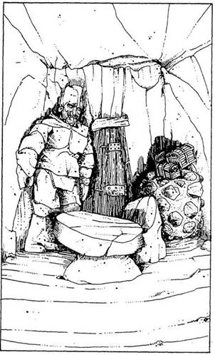
257.
Körülnézel a szobában. Csak a te fáklyád fénye világítja meg. Bár a szoba nagy, alig van benne bútor; egy hatalmas lapos sziklatömb az asztal, mellette egy kisebb szikladarab a szék. Az egyik sarokban sárral összetapasztott kődarabok tornyosulnak. Nem tudod elképzelni, mi célt szolgálhatnak, bár a kőrakás tetején három vesszőből font ládikót pillantasz meg. Riadtan ugrasz hátra, amikor fáklyád fénye egy hatalmas emberalakot világít meg, mely szemmel láthatóan kőből készült és az ajtónál áll. A durván megmunkált férfiszobor valamivel nagyobb, mint egy ember. Rád mered, de nem vagy biztos benne, vajon lát-e téged. Mit teszel?
A másik ajtóhoz rohansz? Lapozz a 237-re.
Megpróbálsz beszélni a
férfiszoborral? Lapozz a 357-re.
Lassan a sarokban lévő ládikó felé
osonsz? Lapozz a 200-ra.
258.
Egyik ajánlatod iránt sem tanúsítanak különösebb érdeklődést a teremtmények, inkább a személyed érdekli őket, s nem az ajándékok. Illúzió Varázslattal szeretnéd elkápráztatni őket, és egy színes szivárványt varázsolsz a szoba közepére. Úgy elkápráztatja őket a látvány, hogy megengedik neked, hogy odamenj a túlsó ajtóhoz - lapozz a 140-re. Ha nincs Illúzió Varázslatod, valami más Varázslatot kell alkalmaznod, hogy elkápráztasd őket. Ha semmilyen más Varázslattal nem rendelkezel, közelebb kell menned hozzájuk - lapozz a 366-ra.
259.
Döbbenten nézi, amint a feje fölé emelkedsz a levegőben. Eszelős forgásba kezd, és megpróbál leszívni magába, de képtelen elérni. Gúnyosan mosolyogva integetsz felé, miközben a Fekete Torony felé úszol a levegőben, a főbejárat előtt leereszkedsz a földre. Lapozz a 218-ra.
260.
Némi erőfeszítés után kinyílik a láda fedele. A ládában egy ezüstkulcs van. Mit teszel?
Megpróbálod a kulccsal kinyitni a második
ládikót? Lapozz a 34-re.
Megpróbálod a kulccsal kinyitni a harmadik
ládikót? Lapozz a 299-re.
Magadhoz veszed a kulcsot, és elindulsz a
kijárat felé? Lapozz a 237-re.
261.
A Majom-Kutya megkér, hogy mutasd meg neki a gyógynövényeidet. Szerencsédre az idevezető úton összeszedtél néhány marék gazt, amit most megmutathatsz neki. Fejét kissé oldalra hajtva a teremtmény gyanakodva mér végig. Kéri, hogy közöld vele annak az őrnek a nevét, akit meg akarsz gyógyítani. Erre nem számítottál! Gyorsan
kitalálsz egy nevet, amellyel becsaphatod a teremtményt. Melyiket mondod?
Kylltrog Lapozz a 81-re.
Pincus Lapozz a 175-re.
Blag Lapozz a 394-re.
262.
Miután varázsoltál, egy ugyanúgy felfegyverzett, ugyanolyan Gark jelenik meg előtted. Vezényszavadra kezdetét veszi a csata:
Gark ÜGYESSÉG 7 ÉLETERŐ 11
Ha a hasonmás veszít, neked kell megküzdened vele, a saját kardoddal. Ha vagy te, vagy a te Garkod győzi le a teremtményt - lapozz a 180-ra.
263.
A Calacormok megbízható, elégedett teremtmények. Nagy, hüllőszerű lények, bőrük színe szürke, hosszú farkuk van és két fejük, a két fej megállás nélkül beszélget egymással. Elég igénytelenek, munkájukon, élelmükön (döglött kígyókkal táplálkoznak) és kényelmes otthonukon kívül más nemigen érdekli őket. Nyugodt természetükkel ellentétben örömüket lelik a fájdalom és kínzás okozta ordításban, és furcsa módon ezek a teremtmények, ki tudja, miért, halálra rémülnek egy egértől, bár ők maguk hatalmas méretűek. Lapozz a 326-ra.
264.
Hatalmas izmaid megfeszülnek, és megragadod kardod markolatát. Készen állsz, hogy megküzdj a Rinocérosz-emberrel. Különleges erődre való tekintettel újra dobhatsz az egyik kockával, amikor TÁMADÓERŐDET állapítod meg (ugyanis ÜGYESSÉG pontszámod plusz a megszokott két kockadobás helyett három kockadobás ponteredményének közös összege adja meg a TÁMADÓERŐDET):
Rinocérosz-ember ÜGYESSÉG 8 ÉLETERŐ 9
Ha győzöl, beléphetsz a Fekete Toronyba. Lapozz 177-re.
265.
Rövid folyosón jársz, mely egy nagy faajtóhoz vezet. Lenyomod a kilincset, és benyitsz egy nagy szobába. Lapozz a 169-re.
266.
Egyáltalán nem érdekli a fecsegésed, történeteidre sem kíváncsi, és neked szegezi a kérdést, hogy
milyen jogon vagy ott. Egy szempillantás alatt Kígyóvá változik, és sziszegve kúszik feléd a padlón. Ezalatt a falon lévő Kutya Fej elszakad a faltól, és feléd úszik a levegőben. Ha varázsolsz ellenük, lapozz a 310-re, ha átkutatod a hátizsákodat, hogy keress valamit ellene, lapozz az 54-re

267.
Amikor megmarkolod a kelyhet, a benne lévő folyadék a szemed láttára megzöldül, majd megbarnul. Szörnyen büdös, de te mégis megkóstolod. Undorral köpöd ki - iszapos vizet iszol! Elhagyod a termet, és továbbmész a Fellegvár felé. Lapozz a 156-ra. Vesztettél 1 SZERENCSE pontot.

268.
Amikor rávágsz az ajtóra, a fa kissé megreped, de az ajtó nem enged. Újra próbálkozol, ekkor a fa középen kettéhasad. Átbújsz a nyíláson, és egy szobába jutsz. Lapozz a 210-re.
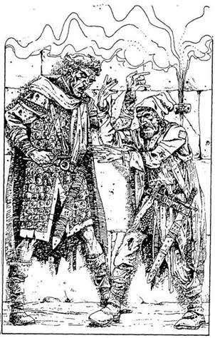
269.
A két férfi koszos és ápolatlan. Amint közelebb mész hozzájuk, hallod, mint alkudoznak egy tőr fölött. A magasabb szemmel láthatóan el akarja adnia azt az alacsonyabbnak. Azzal érvel, hogy ez csodafegyver, és sokkal többet ér, mint amennyit az alacsony adni akar érte. Amikor melléjük lépsz, a magasabb férfi megragadja a karodat, és arra kér, mondd meg, hogy szerinted mennyit ér a tőr. Mit válaszolsz?
5 Arany Tallért? Lapozz a 205-re.
8 Arany Tallért? Lapozz a 186-ra.
10 Arany Tallért? Lapozz a 225-re.
270.
A bal oldali meg a jobb oldali ajtón is bemehetsz. Ha a bal oldali ajtót választod - lapon a 185-re. Ha a másik ajtóval próbálkozol - lapozz a 23-ra.
271.
Megragadod a kezét, bemutatkozol neki - és felordítasz fájdalmadban, Úgy elzsibbad a kezed a szorításától! O’Seamusból kitör a röhögés. Vesztesz 1 ÜGYESSÉG pontot, mert a kardforgató kezedet nyújtottad neki. Dühös vagy, de az apró emberke egyre csak rázza kezedet és nevet. Nevetést hallasz a hátad mögül, és amikor megfordulsz, látod, ahogy a levegőben úszkálva vigyorog. De még most is rázod a kezét… vagy tán mégsem? Rájössz, hogy valójában egy kitömött bábu kezét szorongatod, amely ide-oda lendül, ahogy rázod. A földre akarod dobni, de a kezedhez van ragadva! A helyzet őrjítő, s kezdesz igazán dühbe
gurulni. "Csak egy kis tréfa volt!" - mondja a Leprechaun, ujjaival csettintve. A bábu eltűnik. "Nos, mit tehetek érted?" - kérdi a Leprechaun. Ha megkérdezed tőle, merre kell továbbmenned - lapozz a 348-ra ha előrántod a kardodat - lapozz a 131-re.
272.
Átkutatod a zsebeit, és 8 Arany Tallért találsz. A Zsebszerkentyű harc közben sajnos megsemmisült, de talán még hasznát veszed; ha akarod, magaddal viheted. Most vagy átvizsgálod a Borospincét - lapozz a 242-re, vagy a szoba túlsó végében lévő ajtóhoz mész - lapozz a 95-re.

273.
Mi a jelszó?
Handzsár? Lapozz a 371-re.
Gendzsik? Lapozz a 255-re.
Kraken? Lapozz a 49-re.
274.
A fegyverszekrény zárva van, de könnyűszerrel be lehet törni. A szekrényben különböző kardok, dárdák sorakoznak. Ha letöröd a lakatot és választasz egy fegyvert - lapozz a 353-ra; ha a hátizsákodban keresel egy megfelelő tárgyat - lapozz a 271-re.
275.
Ez a Zsebszerkentyű olyan szerkezet, mely átalakulhat bármilyen fegyverré vagy hasznos tárggyá. Mindketten harcra készen álltok. Ha akarod, karddal is megküzdhetsz vele.
Fekete Elf ÜGYESSÉG 8 ÉLETERŐ 4
Ha akarod, Varázsolhatsz. Ha Erőtlenség Varázslatot alkalmazol, ÜGYESSÉGE 5-re csökken. Ha Teremtmény Hasonmás Varázslatot alkalmazol, egy Zsebszerkentyűvel felszerelt hasonmás Fekete Elf fog megküzdeni a valódi Elffel. (Döntsd el a csatát kettőjük között, és ha az eredeti Fekete Elf győz, végezz vele egymagad.) Ha Illúzió Varázslatot akarsz alkalmazni - lapozz a 399-re. Ha harc közben te győzöl - lapozz a 272-re.
276.
Mély verembe zuhansz - valószínűleg egy betemetett kútba. Föltápászkodsz, látod, hogy sértetlen vagy. De vajon hogy jutsz ki innen? Túl sokáig tartana kardoddal lyukakat vájni a verem oldalába, hogy a lyukakba lépve mehess fel. Ha akarsz, Erővarázslatot alkalmazhatsz - lapozz a 165-re, vagy hívj segítséget - lapozz a 202-re. Melyiket választod?
277.
A Fellegvárba vezető utad során számos tárgyra tettél szert. Melyikkel rendelkezel az alább felsoroltak közül? Melyiket fogod használni?
Az Üvegbe zárt Pókot? Lapozz a 330-ra.
A Zsebszerkentyűt? Lapozz a 315-re.
A Kis Bogyókat? Lapozz a 76-ra.
Ha egyik tárggyal sem rendelkezel - lapozz a 119-re.
278.
A Robbanó Kő veszélyes játék, de sokat lehet nyerni vele. Mielőtt a játék elkezdődne, a Játékmester, aki varázslótanonc, megbűvöl egy követ, mely hamarosan felrobban. A játékosok körben állnak, és egymásnak dobálják a követ. Amikor a kő felrobban, az a játékos, akinek éppen a kezében van a kő, kiesik a játékból, és csúnyán összeégett kézzel távozik! A megmaradt játékosok új Robbanó Követ kapnak, amelyet egymásnak dobálhatnak. A játék addig tart, amíg egyetlen játékos marad. A nézők fogadhatnak a játékosokra, de mielőtt fogadnának, le kell tenniük 3 Arany Tallért, amit hozzáadnak a díj összegéhez. Ebben a játékban 36 Arany Tallért nyerhetsz, de ez azzal a kockázattal jár, hogy megégetheted a kezedet. Ha ezt a játékot választottad, legalább egyszer játszanod kell, de addig játszhatod, ameddig csak akarod. Ha te győzöl, 36 Arany Tallért nyersz minden egyes játékért. Ha vesztesz, minden játék után vonj le magadtól 2 ÜGYESSÉG és 4 ÉLETERŐ pontot.
A játékszabály a következő: dobj egy kockával,
hogy megtudd, hány játékos vesz részt a játékban. Minden játékost jelölj egy-egy betűvel (A, B, C stb. - te vagy az A játékos), és kör alakban írd fel egy darab papírra a játékosok betű jeleit. Most dobj minden játékos nevében egy dobókockával, hogy megtudd, melyikük dobja el a követ (a legmagasabb pontszámú kezd). Most dobj két kockával a kezdő játékos nevében, akinek 12-nél kevesebbet szabad csak dobnia. Menj tovább az óramutató járásának megfelelően a következő játékoshoz, s dobj az ő nevében is, de ez nem lehet több 11-nél. A harmadik játékos már csak 10-nél kevesebbet dobhat, és így tovább. A ceruzáddal menj körbe az egyik betűjeltől a másikig, hogy mindig tudd, kinél van a Robbanó Kő. Abban az esetben, ha valamelyik játékos nagyobbat dob a megállapított, engedélyezett számnál, a Kő felrobban és a játékos kiesik. Ekkor az egész játék újra kezdődik (az engedélyezett pontszám 12-vel indul), csupán a vesztes marad ki. Addig folytasd a játékot, míg egyetlen játékos marad. Ha bármelyik játékos pontosan az engedélyezett maximumot dobja, a kő a levegőben robban fel, és újra kell játszani a kört. Ha már eleged van ebből a játékból, belekezdhetsz a Hat Csákány Játékba - lapozz a 171-re, vagy a Kés Játékba - lapozz a 365-re, vagy elhagyhatod a játéktermet - lapozz a 31-re.

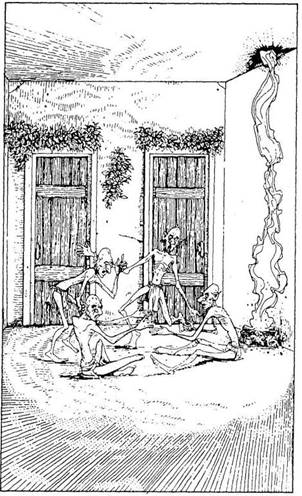
279.
Felrepülsz a levegőbe. Csak úgy remeg a szoba, de te könnyedén, szabadon repkedsz. Oda repülhetsz a szobában, ahová akarsz!
A fegyverszekrényhez
repülsz? Lapozz a 44-re.
Gyorsan elrejtőzöl a varázsló
mögött? Lapozz a 318-ra.
Kirepülsz az ablakon? Lapozz a 78-ra.
Az asztal alá repülsz? Lapozz a 335-re.
280.
A teremtmény nem ismer könyörületet; vadul megmar, s képtelen vagy védekezni. Lábadat vér borítja el, fájdalmad iszonyú. Hiábavaló a küzdelmed e láthatatlan fejjel szemben. Haldokolsz. A teremtmény a nyakad felé kap, és mielőtt elvesztenéd az eszméletedet, már csak arra emlékszel, hogy állkapcsa a torkodra szorul. Lapozz a 323-ra.
281.
Benyitsz egy másik szobába, és megijesztesz négy apró teremtményt, akik a földön ülnek. Rémülten pattannak fel, amikor meglátnak. Mit teszel?
Kardot rántasz és támadásra
készülsz? Lapozz a 382-re.
Azt mondod nekik, hogy csak át szeretnél
menni a szobán? Lapozz a 285-re.
Beszélgetésbe elegyedsz
velük? Lapozz a 356-ra.
282.
Egy kis tűzgolyót varázsolsz, és egyenesen a Kloáka Kígyóhoz vágod. A golyó megperzseli és kettészakítja a testét. Mindkét fele egyszerre támad rád, és összepréseli a mellkasodat. Vesztesz 1 ÉLETERŐ pontot. Más módszert találsz ki - lángokat varázsolsz mindkét kezedbe, és megperzseled a Kígyó összetekeredett farkát. Az állat hevesen rángatózni kezd, és szorítása enged! Megragadod a fejét, és lángoló kezeddel megfojtod, halálra égeted. Lapozz a 112-re
283.
Varázslat nélkül sorsod megpecsételődik. Arra kárhoztattál, hogy életed hátralévő részét a Fellegvár foglyaként töltsd el. Küldetésed nem járt sikerrel; elbuktál.
284.
Varázsolsz (ne felejtsd el kihúzni a Varázslatok közül), és kezdesz a levegőbe emelkedni. A csáp azonban nem enged, és elviselhetetlen fájdalom hasít a lábadba. Úgy határozol, hogy visszatérsz a földre, mielőtt még kicsavarná a lábadat. Vagy karddal támadsz rá - lapozz a 71-re, vagy Tűzvarázslatot alkalmazol - lapozz a 114-re.
285.
Azt mondod nekik, hogy nem akarod bántani őket, Csupán szeretnél továbbmenni az utadon. Megkönnyebbülten lélegeznek fel. A szobát itt-ott lombos faágak díszítik, s az egyik sarokban a mennyezetben vágott lyuk alatt tűz lobog. A szemközti
falon két ajtó van. Az apró teremtmények közlik veled, hogy bármelyiken továbbmehetsz. Ha a bal oldali ajtót választod - lapozz a 185-re, ha a jobb oldali ajtót választod - lapozz a 23-ra.
286.
Az apró teremtmények visítanak és összebújnak, amikor belépsz. Kivont karddal rohansz rájuk, de még csak nem is védekeznek! Kissé gyanúsnak találod, hogy ilyen könnyen győztél, és elindulsz a szoba túlsó végében lévő ajtó felé. Lapozz a 140-re.
287.
Felajánlod a Kenőcsös Tégelyt. Egy láthatatlan lény kiragadja a kezedből, és odaviszi az egyik állatfejhez. Láthatatlan kezek lecsavarják a tégely tetejét, és a fej beleszagol a kenőcsbe. A fej morogva fordul feléd: "Ez csak egy alkimista gyógybalzsama! Mi hasznát vehetnénk ennek?" A tégely a földre esik és összetörik. Mit teszel?
Felajánlod a Zsebszerkentyűt? Lapozz a 160-ra.
Felajánlasz néhány Arany
Tallért? Lapozz a 27-re.
Sietve távozol, és keresel egy másik
ajtót? Lapozz a 25-re.
288.
A két teremtmény feléd közeledik. A Majom-Kutya támad elsőnek, majd a Kutya-Majom. Varázsolsz egyet, vagy megküzdesz velük? Alkalmazhatod
az Erővarázslatot Lapozz a 162-re.
a Súlytalanság Varázslatot Lapozz a 86-ra.
Ha megküzdesz velük:
ÜGYESSÉG ÉLETERŐ
Majom-Kutya 7 4
Kutya-Majom 6 6
Ha mindkettőt megölöd a harcban, lapozz a 32-re.
289.
Mit veszel elő a hátizsákodból?
Az Ezüst Tükröt? Lapozz a 340-re.
A Lókörömfű Eszenciát? Lapozz a 214-re.
A Kenőcsös Tégelyt? Lapozz a 305-re.
Ha ezek közül egyikkel sem rendelkezel, menj vissza a 304-re, és válassz újra!
290.
A Rinocérosz-ember odalép hozzád, és feléd döf a lándzsájával. Gyorsan félreugrasz. Bár nem visel páncélruhát, mégis úgy ítéled meg, hogy vastag bőre megfelelően védi. El kell döntened, vajon megvívsz-e vele, vagy inkább varázsolsz-e ellene. Ha előrántod a kardodat - lapozz a 325-re; ha varázsolsz, válassz az alábbi Varázslatok közül:
Erőtlenség Varázslat Lapozz a 307-re.
Súlytalanság Varázslat Lapozz a 70-re.
Erővarázslat Lapozz a 264-re.
291.
"Mi ez?" - kérdi a szellemhang. Alkudozni kezdesz velük. Megengeded nekik, hogy elvegyék a kenőcsöt, de csak akkor, ha átengednek a szobán; egyébként semmi dolgod velük. Egy szellemkéz feléd nyúl a semmiből, és megpróbálja kikapni a kezedből a Tégelyt, de gyorsan ellököd. "Ez valóban a Gyógybalzsam - szólal meg egy halk hang. - Elfogadjuk az ajánlatodat. Hagyd ott a tégelyt, ahol állsz, és távozz azon az ajtón át!" A szoba túlsó végében lévő ajtó halványan fényleni kezd. Nem bízol meg bennük, ezért az ajtóhoz viszed a Tégelyt. Amikor az ajtóhoz érsz, odadobod nekik a Tégelyt és gyorsan kisurransz. Lapozz a 328-ra.
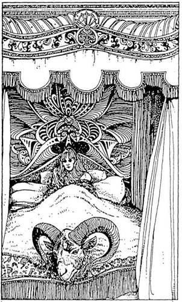
292.
Egy gyönyörű hálószobába jutsz. Csupa csipke, csupa bársony, a földön prémszőnyegek hevernek. A szoba közepén baldachinos ágy áll. Az ágyban egy tündérre hasonlító gyönyörű nő ül, aki nyilván álmából riadt fel. Hosszú, sötétbarna haja van és mély tüzű, átható pillantása. "Hogy kerülsz te ide?" - kiált rád. Mikor ezeket a szavakat kimondja, szeme vérvörös lesz, és két tűzcsóva csap ki belőlük, egyenesen rád. Mit teszel?
Védelem Varázslatot
alkalmazol? Lapozz a 376-ra.
Gyorsan elhagyod a szobát, és megpróbálkozol
a szomszédos ajtóval? Lapozz a 64-re.
Azt mondod, hogy ajándékot hoztál
neki? Lapozz a 42-re.
293.
Varázslatod egy pillanat alatt megállítja a levegőben a Szigonyt, amely már veszedelmesen közel volt a nyakadhoz. A Szigony a földre hullik. Lapozz a 374-re.
294.
A Gark fölegyenesedik, leengedi a baltáját, és bocsánatot kér tőled, amiért elaludt az őrhelyén. Kérésére megígéred, hogy erről senkinek sem szólsz. A teremtmény felajánlja, hogy elveszi a köpenyedet, de elutasítod az ajánlatát és továbbmész. Lapozz a 99-re.
295.
Erősen koncentrálsz, és Óriás Skorpióvá változtatod magadat. A Törpe és a Goblin abbahagyja a
támadást, de az Ork úgy tesz, mintha nem történt volna semmi. A másik kettő csak nézi, hogy csapsz az Orkra a farkaddal, de az meg sem rezdül, és odakiált nekik. Amint látják, hogy egyáltalán nem ártottál az Orknak, megrázzák a fejüket, és ismét a valódi alakodat látják. Az Ork megpróbál elcsípni. Lapozz a 213-ra.
296.
A kulcs megfordul a zárban, és az ajtó kinyílik. Lapozz a 292-re.
297.
Becsapod magad mögött az ajtót, és a csengő csilingelő hangja mellett gyorsan közeledő, futó léptek zaját hallod. Az előtted lévő folyosó kétfelé ágazik. Ha előreiramodva a jobb oldali elágazás felé veszed az utadat - lapozz a 2-re, ha a bal oldali elágazás felé indulsz - lapozz a 316-ra. De azt is megteheted, hogy visszamész az ajtón, és becsöngetsz a komornyiknak. Lapozz a 75-re.
298.
Amikor megfogod a serleget, a benne lévő folyadék pezsegni, gőzölögni kezd, és amint az ajkadhoz emeled, lespriccel. Biztos vagy benne, hogy meg akarod kóstolni az italt? Ha nem akarod - lapozz az 58-ra és válassz mást, de ha elszántad rá magad - lapozz a 141-re.
299.
A kulcs nem fordul el a zárban, akárhogy is próbálod. Nem jártál sikerrel, ezért dühödben földhöz vágod a ládikót - ekkor azonban az eltűnik! Tapogatózva keresed a láthatatlan ládikót, de nem
találod. Reményvesztetten indulsz el az ajtó felé, és újra megkísérelsz eljutni a kapuig. Lapozz a 237-re.
300.
Dobj egy kockával. Ha 1-et, 2-t vagy 3-at dobsz, 1, 2 vagy 3 kés talál el (mindegyik találat 2 ÉLETERŐ pont veszteséget jelent). Ha 4-et, 5-öt vagy 6-ot dobsz, a kések elkerülnek. Fel kell készülnöd az ellentámadásra; ha az Illúzió Varázslatot választod - lapozz a 244- re; ha kardot rántasz - lapozz a 346-ra.
301.
Érzed, amint az erő átjárja a testedet. Meg akarsz birkózni e teremtmény fejével, de úgy látod, hogy annak saját ereje a tiéddel egyenlő arányban megnőtt. Lábad használhatatlan és vér borítja. Erőd kezd apadni, és eközben a teremtmény állkapcsa a nyakadra szorul. Elveszted az eszméletedet. Lapozz a 323-ra.
302.
Megparancsolják, hogy vidd ki a tálcát az étellel a szoba hátsó ajtaján a Nagy Hallba, és hagyd ott az asztalon, ugyanis a Gendzsik nemsokára lejönnek vacsorázni. Arra is figyelmeztetnek, hogy ne várd meg őket, mert könnyen desszert lehet belőled. Megfogod a tálcát, és kimész vele az ajtón. Boldog vagy, hogy végre elhagyhatod az undorító konyhát, előremész a folyosón, leteszed a tálcát, és a következő ajtóig meg sem állsz. Megpróbálod kinyitni. Sikerül. Lapozz a 169-re.
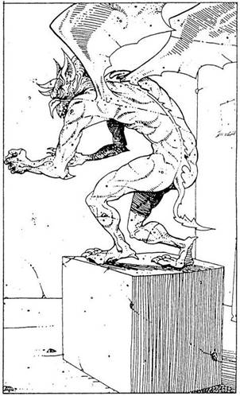
303.
A Gólem egyre közelebb jön, és te karddal támadsz rá. Kardod azonban csupán a követ éri, s hangosan megcsörren rajta. Neked kell eldöntened a Csata kimenetelét. Vonj le magadtól 1 ÜGYESSÉG pontot.
Gólem ÜGYESSÉG 8 ÉLETERŐ 10
Ha legyőzöd a teremtményt, lapozz a 147-re.
304.
Az ajtó kinyílik, és bemész a nagy szobába, amelyet különböző faragványok, szobrok díszítenek. Olyan, mint egy szobrász műterme, a fal mentén befejezetlen kőszobrok sorakoznak. A szoba közepén egy négyszögletes kőtömbön hatalmas kő Vízköpő Sárkány figura áll. Amikor belépsz a szobába, a teremtmény csikorgó hangot hallat, ahogy feléd fordítja a fejét. Lassan életre kel és leszökken a talapzatról. Elállja az utadat a szoba távoli sarkában lévő ajtó felé. Mit teszel?
Kardot rántasz és rátámadsz? Lapozz a 172-re.
Varázsolsz egyet? Lapozz a 26-ra.
Megnézed hátizsákodat, van-e benne valami,
ami most hasznodra lehetne? Lapozz a 289-re.
Kisurransz a szobából, és megpróbálkozol a
középső ajtóval? Lapozz a 64-re.
305.
Odadobod a Tégelyt a Vízköpő Sárkánynak. A Tégely megsérül, de nem törik össze. A teremtmény meglódítja öklét, és úgy mellbe vág, hogy elesel. Vesztesz 2 ÉLETERŐ pontot. Ajánlatos gyorsan elhagyni ezt a szobát, és az erkélyen továbbmenni a középső ajtóig. Lapozz a 64-re.
306.
Kissé följebb egy ajtó zárja le a folyosót. Valójában ez csak egy félajtó, derékig ér neked. Az ajtó mellett felirat hirdeti: "Belépés csak Játékosoknak!" Ha benyitsz - lapozz az 52-re, ha visszafordulsz és inkább a díszes ajtón mész be - lapozz a 132-re.
307.
Miközben Varázsolsz, a teremtmény feléd döf, és lándzsájával beleszúr a karodba Vesztesz 2 ÉLETERŐ pontot. Ekkor kezd hatni az Erőtlenség Varázslat. A teremtmény mozdulatai lelassulnak, és szuszogni, lihegni kezd. Kirántod a kardodat, hogy végezz vele.
Rinocérosz-ember ÜGYESSÉG 4 ÉLETERŐ 7
Ha legyőzöd, beléphetsz a Fellegvárba. Lapozz a 177-re.
308.
Lenyomod a kilincset, és belépsz egy sötét szobába. Lapozz a 257-re.
309.
Mindketten átkutatjátok a magas férfi zsebeit. 20 Arany Tallért találsz, és pénzfeldobással döntitek el, kié legyen a tőr: ha fej, a tiéd, ha írás, az övé (dobj fel egy forintot, hogy dönthess!). Ha a tiéd lesz a tőr - lapozz a 15-re. Ha nem - lapozz a 245-re.
310.
Milyen Varázslatot alkalmazol?
Teremtmény Hasonmás
Varázslatot? Lapozz a 181-re.
Illúzió Varázslatot? Lapozz a 250-re.
K.É.K. Varázslatot? Lapozz a 393-ra.
Ha egyikkel sem rendelkezel, lapozz a 104-re és válassz újra!
311.
Erősen koncentrálsz, közben a varázsigét mormolod. Az egyik Öregasszony észrevesz, és odakiált a többieknek. Varázsolsz, de nem történik semmi! Rápillantasz a vén banyákra, akik mosolyogva néznek. "Nem engedhetjük, hogy kedvenc állatkáink ellen varázsolj!" - mondja az egyik. Elpazaroltál egy Varázslatot. Húzz ki egyet (te döntsd el, melyik legyen az) a Varázslataid közül. A Devlin már-már elér: ha sietve elrejtőzöl - lapozz a 178-ra, ha kardot rántasz ellene - lapozz a 61-re.
312.
Magasra emeled a Tükröt. Nem sok hatással van a teremtményre, mely egyre közeledik. Az egyik feje előrenyúlik, és kiüti a kezedből a Tükröt, amely a földre esik és darabokra törik. Döntsd el, mit csinálsz. - Lapozz a 184-re

313.
A gyümölcs édes, zamatos. Megeszel egyet, majd még egyet - pompás íze van! Nyersz 2 ÉLETERŐ pontot, de legnagyobb meglepetésedre, amikor evés után megköszörülöd a torkodat, egy hang sem jön ki rajta. A Némaság Gyümölcsét etted
meg. Ez a különös fogyatékosságod csak átmeneti, de egy ideig nem fogsz tudni beszélni, és csak nehezen tudod majd megértetni magad másokkal. Ez annyit jelent, hagy nem tudsz majd varázsolni (ha a következő alkalommal varázslási lehetőséget kapsz), de aztán rendbe jössz. Vagy a bal oldali ajtón mehetsz tovább - lapozz a 13-ra, vagy azon az ajtón, amelyik szemben van a másikkal, amelyen bejöttél - lapozz a 281-re.

314.
Erősen koncentrálsz, hogy azt a látszatot keltsd, mintha a varázsló mozgó szobában lenne. Illúzió Varázslatot alkalmazol (húzd ki a Kalandlapodról!), de semmi sem történik, nem tudsz kellő erővel koncentrálni. Rettegett Balthus már-már elér. Lapozz a 373-ra.
315.
Rettegett Balthus mélyen elgondolkodik, míg te a Zsebszerkentyűvel játszadozol. Megnyomsz rajta egy gombot, erre csillogó fény jelenik meg, és akkorára nyúlik meg, mintegy kard éle. Ez a Nap-Kard, mely 4 ponttal növeli ÜGYESSÉG pontjaid számát, amikor ezzel a karddal harcolsz. Szembefordulsz a varázslóval, aki most szintén varázsol. Lapozz a 191-re.
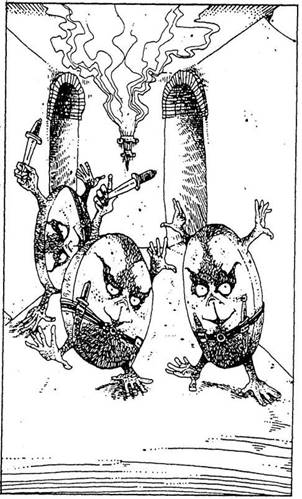
316.
A léptek zaja, amelyet tulajdonképpen "kezek zajának" kellene nevezni, három Korongádtól származik, akik feléd gurulnak a folyosón, és kénytelen vagy az ajtóhoz hátrálni. Ezek a teremtmények igen különösek, láb helyett még két kezük van. Gyorsan közelednek, olyan mozdulatokkal, mintha cigánykereket vetnének. Fejük - jobban mondva arcuk - a mellük közepén van. Furcsa mozgásuk miatta kardforgatáshoz nem értenek, de igazán ügyes késdobálók. Forgás közben megragadják a késeiket, és sebesen elhajítják őket. Olyanok, akár a tűzkerék. Három kés repül szélsebesen feléd. Ha akarod, alkalmazhatsz Védelem Varázslatot, hogy megvédd magad - lapozz a 220-ra, vagy Tedd próbára a SZERENCSÉDET! Ha a második megoldást választod és SZERENCSÉD van, lapozz a 139-re. Ha nincs SZERENCSÉD - lapozz a 300-ra.

317.
A falakon lévő képek a Sziklaszirt Királyság különböző nagy tekintélyű Lordjait és Grófjait ábrázolják. Az asztalfőnél álló szék mögött magának Rettegett Balthusnak a képe lóg. Valóban erős ellenségnek látszik. Nyersz 1 SZERENCSE pontot, mert figyelmeztettek, hogy esetleg megjelenik, ugyanakkor vesztesz 1 ÉLETERŐ pontot, mert félelem tölt el ereje láttán. Folytathatod utadat. Fölmehetsz a baloldali lépcsőn - lapozz a 19-re, de választhatod a jobb oldali lépcsőt is - lapozz a 197-re.
318.
A varázslón a szellemi kimerültség jeleit veszed észre, és nem mozdul elég gyorsan, amikor a háta mögé kerülsz. Észreveszed, hogy nagy rubinköves aranygyűrűt visel jobb keze mutatóujján. Ha megpróbálod lehúzni a gyűrűt az ujjáról - lapozz a 381-re, ha fürgén kardot rántasz - lapozz a 117-re, ha átkutatod a hátizsákodat, hogy valami használható tárgyat keress benne - lapozz a 277-re.
319.
A karodra koncentrálsz. Az keményedni kezd, és fölveszi a vas sötét fémes színét. Az öregember tágra nyílt szemmel nézi karod változását. Megpróbálsz kiszabadulni, de fogai szorításából nem menekülsz, Vesztesz 1 ÉLETERŐ pontot, és húzd ki a Kalandlapról az Illúzió Varázslatot. Illúziód nem volt elég meggyőző erejű. Próbálkozz meg a kardoddal! Lapozz a 333-ra.
320.
Erősen összpontosítasz, de bárhogy is akarod, egyetlen gondolatát sem tudod ellesni - ellenáll a Varázslatodnak! Ha akarod, megpróbálkozhatsz Illúzió Varázslattal - lapozz a 332-re, vagy Erőtlenség Varázslattal - lapozz a 113-ra, vagy kardot ránthatsz, hogy megtámadd - lapozz a 351-re.
321.
Óvatosan, nehogy észrevegyenek a sötétben, az udvart körülvevő falhoz lopakodsz. Két csoportban különböző teremtményeket látsz. Jobbra két ember formájú alak áll, és egy falhoz erősített fáklya
alatt beszélget. Balra négy különböző alakú és termetű teremtmény üli körbe a tábortüzet, és lakmározik. Ha a fáklya alatt beszélgetőkhöz mész oda - lapozz a 269- re, ha a tűz körül ülőkhöz - lapozz a 339-re.
322.
Mit veszel elő a hátizsákodból?
Az Üvegbe zárt Pókot? Lapozz a 39-re.
A Hamis Amulettet? Lapozz a 168-ra.
A Kenőcsös Tégelyt? Lapozz a 291-re.
Ha a felsoroltak közül egyikkel sem rendelkezel, kardot kell rántanod, és meg kell küzdened velük. Lapozz a 248-ra.
323.
Amikor felébredsz, körülnézel. Mikor visszanyered emlékezőtehetségedet, ámulattal veszed észre, hogy látsz! Lábad még gyenge, de sértetlen! Halk kuncogást hallasz a fejed fölött, és hirtelen minden megvilágosodik előtted…
O’Seamus lebeg fölötted, és hangosan nevetgél. Az egész csak tréfa volt! Dühösen pattansz fel, de amikor ránézel erre a mókás kis emberkére, aki idegesen bukfencezik a levegőben, nem tudsz mit csinálni, jó képet vágsz a dologhoz. Kuncogsz,
kacarászol, majd nevetni kezdesz. Mindketten úgy nevettek, hogy majd kicsordul a könnyetek. Amikor magatokhoz tértek, Ieültök beszélgetni. Kedves kis emberke. Mielőtt távoznál, így szól; "Te valóban remek fickó vagy! Utadon sok veszély leselkedik majd rád. Ezek a tárgyak talán a segítségedre lesznek!" Ekkor meglendíti a karját, és egy kard meg egy tál jelenik meg az asztalon. A kard varázskard, és minden alkalommal 1 ponttal növeli majd TÁMADÓERŐDET, ha azt kockadobással kell megállapítanod. A tál valójában egy gyönyörűen megmunkált Ezüst Tükör. Ha akarod, magaddal viheted ezeket a tárgyakat, de ebben az esetben itt kell hagynod régi kardodat. Merre hagyod el a szobát?
A sárgaréz kilincsű ajtón át? Lapozz a 386-ra.
A vörösréz kilincsű ajtón át? Lapozz a 144-re.
A bronzkilincsű ajtón át? Lapozz a 338-ra.
324.
"Nem rejtőzhetsz el előlem!" - ordítja. Ez valóban igaz, és rájössz, hogy veszélybe kerülhetsz, amíg nem láthatod. Lapozz a 369-re
325.
A teremtmény lomha és esetlen, dühösen prüszköl, ahogy kivéded az ütéseit. Rántsd elő a kardodat, és küzdj meg vele:
Rinocérosz-ember ÜGYESSÉG 8 ÉLETERŐ 9
Ha legyőzöd, beléphetsz a Fellegvárba. Lapozz 177-re.
326.
Visszateszed a könyvet. Ha tovább kutatsz a könyvek között - lapozz a 84-re, ha a szoba túlsó végében lévő ajtón távozol, mely a könyvtáros mögött van - lapozz a 31-re.
327.
Elfogadják Zsebszerkentyűdet, és vidáman játszani kezdenek vele. Miután kellőképpen lekötötted a figyelmüket, elosonsz mellettük, és a szoba végében lévő ajtóhoz mész. Lapozz a 366-ra. Kalandlapodról húzd ki a nekik adott ajándékot!
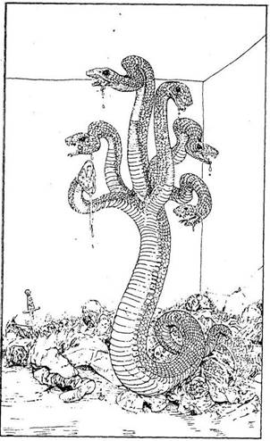
328.
Becsukod az ajtót magad mögött, és egy újabb csigalépcső aljában találod magad, amely fölvezet a Toronyba. Amint felmész a lépcsőn, újabb erkélyhez érsz, ahonnan egyetlen ajtó vezet tovább. Lenyomod a kilincset, és az enged. Miközben nyitod az ajtót, hangos sziszegést hallasz a szobából. Belépsz, és megfagy a vér az ereidben, mert egy hatalmas, hatfejű Hidra közeledik feléd előző áldozatainak tetemei fölött! Hat kígyószerű feje feléd csap, látod ronda hegyes fogait. Elbújsz egy sarokban. Mit teszel?
Kardot rántasz, és rátámadsz a
teremtményre? Lapozz a 67-re.
Teremtmény Hasonmás Varázslatot
alkalmazol? Lapozz a 143-ra.
Előveszel valami használható tárgyat
a hátizsákodból? Lapozz a 226-ra.
329.
Figyelmesen szemügyre veszed a nőt, és döbbenten látod, hogy nem él, ahogy hitted, hanem évek óta halott. A nagy tűzvészkor maga Rettegett Balthus átkozta meg, mert nem mosta ki időre a palástját, amelyet egy fontos találkozón akart viselni. Büntetésből elégette őt és a gyermekeit, szellemét pedig arra kárhoztatta, hogy örökké mosson. Valóban szerencsétlen nyomorult ez a nő! Észreveszed, hogy egyre mérgesebb, és zavarja a jelenléted. Halkan énekel valamit. Ha beszélgetni akarsz vele - lapozz a 21-re, ha gyorsan továbbmész mellette az ösvényen - lapozz a 221-re.
330.
A varázsló rémülten ordít fel, amikor előveszed az Üveget. Ekkor arra gondolsz, hogy ez a piciny teremtmény hasznos segítőtársad lehet, ezért kinyitod az üveg száját, és kiengeded. A varázsló arckifejezése azonban megváltozik, ravaszul elmosolyodik, és látod, hogy a kis Pók-ember nem Balthus felé megy, hanem feléd! Meg kell küzdened vele!
Pók-ember ÜGYESSÉG 7 ÉLETERŐ 5
Amint a teremtmény az első sebet ejti rajtad - lapozz a 208-ra. Ha nem sebesülsz meg és legyőzöd - lapozz a 119-re.
331.
A Harapós Hal éles fogai belekapnak az arcodba és az orrodba, amikor megpróbálod visszarántani a fejedet. Vesztesz 1 ÜGYESSÉG és 3 ÉLETERŐ pontot, mert vérző arcod ápolásra szorul. A három vén boszorkány az üstöt megkerülve odacsoszog hozzád, és kilök a konyha végében lévő ajtón. Eközben gúnyolnak, sértegetnek, majd becsapják utánad az ajtót. Lapozz a 265-re.
332.
Rettegett Balthusnak leesik az álla, amikor a szeme láttára átváltozol. Tested hatalmasra nő, erőd megsokszorozódik. Bőröd színe mélyvörössé válik, és homlokod feszes bőrét szarvak döfik át. Fogaid feketék, tűhegyesek, és villás nyelved fenyegetően sziszeg felé. Tűz Démon alakjában állsz előtte, és felkapod a földről a Szigonyt. A varázsló riadtan fordul el tőled. Ha ráugrasz az asztal fölött - lapozz a 80-ra, ha felszólítod, hogy vonja vissza hódító terveit és adja meg magát - lapozz a 48-ra.

333.
Kirántod a kardodat, és le akarod kaszabolni. Rád néz, és tekintetéből kiolvasod, hogy nem tudja igazán, mit csinál. Sajnálkozva vágod fejbe kardod markolatával. Üvöltve engedi el a karodat. Mikor otthagyod, a földön nyög és a fejét simogatja. További 2 ÉLETERŐ pontot vesztesz a karodon ejtett seb miatt, és továbbmész. Lapozz a 14-re.
334.
Kortyolsz néhányat. Nem rossz! Nagyot húzol a borból, de ekkor az Elf kuncogni kezd. Hirtelen
megkérdi, vajon valóban vendég vagy-e? Bár gondolatban azt állítod, hogy vendég vagy, a hangod elárulja neki, hogy nem az vagy; azért jöttél, hogy véget vess Rettegett Balthus hódító terveinek! Káromkodsz, amikor rájössz, hogy a borba Igazságszérumot kevertek. A Fekete Elf most már tudja, miért jöttél, te viszont tudod: meg kell akadályoznod, hogy ezt másoknak is elmondja. Kirántod a kardodat, és ekkor egy kis fémszerkentyűt húz elő az övére erősített erszényből. Amikor megérinti, a szerkentyű fűrészélű fegyverré változik. Lapozz a 275-re.

335.
Az asztal alatt lévő titkos fiók kissé nyitva van, és egy pergamen kézirattekercs lóg ki belőle. Kihúzod a tekercset a fiókból, és ruhád redőibe rejted. De hallod, hogy Balthus mormol valamit az orra alatt. Varázsigét! De vajon melyiket? És mit tudsz ellene tenni? Hirtelen körberohan az asztal körül, és futás közben megérinti annak minden oldalát. Amikor hozzáér az asztalhoz, az reccsenő hanggal válaszol. Lapozz a 342-re.
336.
Küzdj meg a teremtménnyel:
Gark ÜGYESSÉG 7 ÉLETERŐ 11
Négy Forduló után Elmenekülhetsz a szoba túlsó végében lévő ajtók egyikén át - lapozz a 99-re,
máskülönben a végsőkig folytatnod kell a harcot. Ha ezt teszed és legyőzöd a teremtményt - lapozz a 180-ra.

337.
A varázsló legalább olyan kardforgató, mint amilyen nagy mágus. Küzdj meg vele:
Rettegett Balthus ÜGYESSÉG 12 ÉLETERŐ 19
Ha sikerült ellopnod a varázsló gyűrűjét, levonhatsz 2 pontot az ÜGYESSÉGÉBŐL, mivel a Kardforgatás Gyűrűjét viselte. Ha legyőzöd Rettegett Balthust, lapozz a 400-ra.
338.
Az ajtó egy folyosóra nyílik. Egy ideig mész rajta, és látod, hogy a sziklán áthaladva egyre kanyargósabb az út. Elhaladsz egy másik folyosó mellett, mely jobbról nyílik, és egyenesen előremész. Hirtelen szűkülni kezd a folyosó. Lapozz a 90-re.

339.
Tarka népség üli körbe a tüzet. Egy bibircsókos arcú Ork félig sült, csontos húscafatot nyújt át a többieknek. Egy zöldes bőrű Törpe veszekedve panaszolja, hogy túl kevés húst kapott, miközben két tarkófejú Goblin - egy férfi meg egy nő - összeölelkezve ül a tűz mellett. Vihorásznak, nevetgélnek, s a nő, hogy nagyobb legyen a vigasság, kezével paskolja a férfi csúf arcát. Amikor a közelükbe érsz, elhallgatnak, és barátságtalan arccal néznek rád. Gúnyolni kezdik tiszta, szép ruhádat, és a Goblin nő megjegyzést tesz rád a társának. A Törpe lába előtt nyitott ládikót veszel észre, melyben folyadékkal teli üveg van. Mit teszel?
Leülsz közéjük a tűz mellé? Lapozz a 134-re.
Megkérdezed, hogy leülhetsz-e
közéjük? Lapozz a 149-re.
340.
Fölemeled a Tükröt, de a teremtmény csak odakap, és a Tükör máris darabokra törik. Jobb lesz, ha gyorsan elhagyod a szobát, és megpróbálkozol az erkélyen lévő középső ajtóval. Lapozz a 64-re.
341.
Varázsolsz egyet, és előremész. Négy vagy öt nyílvessző süvít feléd, de néhány méterre tőled megállnak a levegőben, és a földre hullanak. Eléred a szobrot. Ne felejts el a Kalandlapodon kihúzni a Védelem Varázslatot. Lapozz a 209-re.
342.
A Varázsló hátralép az asztaltól, és nevetve így szól: "No, most megvagy, paraszt!" Óvatosan előmászol az asztal alól. Azaz csak előmásznál, mert akárhogy is próbálkozol, az asztal szélénél nem jutsz kijjebb. A varázsló láthatatlan falakat varázsolt az asztal köré, melyek fogva tartanak! Mindent megpróbálsz, de a falakat képtelen vagy áttörni! Mostantól fogva a foglya vagy. Küldetésed nem járt sikerrel; elbuktál…

343.
A folyosón kissé továbbhaladva egy másik elágazáshoz érsz, ahonnan vagy balra mehetsz - lapozz az 55- re, vagy jobbra - lapozz a 249-re.

344.
Lemész a lépcsőn. A levegő hűvös és dohos. A lépcső aljában egy ajtó van. Ha megpróbálsz bemenni - lapozz a 7-re, ha visszamész a lépcsőn, és inkább a földszinten lévő ajtóval próbálkozol - lapozz az 5-re.
345.
A teremtmény felnyög, amikor fog rajta a Varázslat. Hatalmas súlya miatt azonban nem tökéletes a hatás, és még mindig feléd csoszog. Mégis sikerül kikerülnöd, és továbbmész a szoba túlsó végében lévő ajtóhoz. Lapozz a 140-re.
346.
Amikor a Korongádok látják, hogy kardot rántasz, megállnak és izgatottan pusmogni kezdenek. Egyikük - nyilván a vezetőjük - visszaküldi a legkisebbet a folyosón (valószínűleg segítségért). A másik kettő előrántja késelt, és feléd gurul. Küzdj meg velük (egyenként, az adott sorrendben):
ÜGYESSÉG ÉLETERŐ
Első Korongád 7 6
Második Korongád 6 5
Ha legyőzöd, vagy a bal oldali folyosón mehetsz tovább - lapozz a 243-ra, vagy a jobb oldali folyosón- lapozz a 2-re.
347.
A Gorgon felordít, amikor megpillantja a Tükröt. Megpróbálod tetőtől talpig szemügyre venni a teremtményt. A Gorgon azonban eltűnt, és helyette Ismét Rettegett Balthus áll előtted. Lapozz a 12-re.
348.
"Nem kellene erre mennem - mondja O’Seamus. - Ez nem kellemes hely." Csak ezen a három ajtón át lehet továbbmenni. Kettő közülük igen veszélyes, a harmadik pedig nagyon büdös. A szoba másik végében három ajtó van. Az egyik kilincse sárgarézből van, a másiké vörösréz, a harmadiké bronz. Melyik ajtót választod? Azt, amelyiknek a kilincse:
Sárgaréz? Lapozz a 207-re.
Vörösréz? Lapozz a 22-re.
Bronz? Lapozz a 354-re.
Ha inkább tanácsot kérsz O’Seamustól, lapozz a 68-ra.

349.
Rettegett Balthus hasonmása előtted áll. Az eredeti Balthus felvonja az egyik szemöldökét. "Támadj!" - parancsolod a hasonmásnak, amely elindul a szoba közepe felé. A varázslótól körülbelül kétméternyire megáll, és arcát tenyerébe temeti, majd feltekint, megfordul, és elindul feléd! A varázsló felnevet. "Ketten is játszhatják ezt a játékot!" - mondja Balthus. Erősen koncentrálsz, és akaratoddal visszakényszeríted a hasonmást a varázslóhoz. Az hirtelen megáll, és parancsodra visszafordul. Ez így megy néhány pillanatig, amikor
rájössz, hogy mindketten irányítani tudjátok a teremtményt, de csak bizonyos határok között. Ide-oda jár köztetek, mígnem a Varázslat kezd elmúlni róla. Fokozatosan eltűnik a szemetek elől. Az erős koncentrálástól igencsak kimerültél. Látod, amint Rettegett Balthus felemeli mindkét karját, majd nagyot csap az asztalra. Vajon most mit varázsol? Lapozz a 157-e.

350.
Egyszerű trükköt alkalmazol, hogy megszabadulj tőle, mivel úgy ítéled meg, hogy nem túl intelligens. A távoli félhomályba tekintve azt mondod neki, hogy ott egy ugyanolyan teremtményt látsz. Közli veled, hogy tévedsz, de te tovább erősködsz. Ekkor odafut, hogy megnézze, ki az, eközben te a Fellegvár főbejáratához rohansz. Lapozz a 218-ra.
351.
Amint kivont karddal közeledsz felé, a varázsló egy görbe handzsárt húz ki az öve mögül. "Helyes - mondja kárörvendően -‚ boldogan végzek veled fegyverrel!" E szavakat kimondva átugrik az asztalon, és feléd közelít. A harc élethalálharc lesz:
Rettegett Balthus ÜGYESSÉG 12 ÉLETERŐ 19
Ha megölöd a varázslót - lapozz a 400-ra.
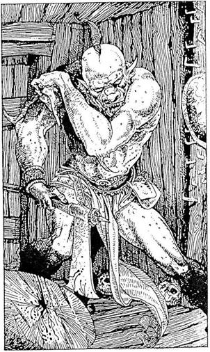
352.
Belopakodsz a szobába, ahol félhomály és dohszag van. Az egyik falnál vaskampókkal odaszögezett gerenda áll. A szoba túlsó falán két kivezető ajtót látsz. A gerendán egy ócska tükör lóg, de amikor fáklyáddal megvilágítod, a róla visszaverődő fény az alvó óriás szemébe süt. Morogva moccan meg. Kinyitja az egyik szemét, majd a másikat is, és amikor észrevesz, felpattan! Felkap egy baltát, amely eddig a párnája volt, gyorsan lekapja róla a bőr védőtokot, és ekkor megcsillan a balta éles bronzfeje. Ez az óriás teremtmény a Gark! Hatalmas és brutális - a Garkok félig Goblinok, félig Óriások, akiket a varázslómesterek alkottak meg és ruháztak fel agresszív természettel. Elég buták, viszont meglehetősen harcias, kegyetlen vadállatok. Mit teszel?
Az ajtók felé rohansz? Lapozz a 203-ra.
Kardot rántasz, hogy megküzdj
vele? Lapozz a 16-ra.
Bocsánatot kérsz tőle, amiért
megzavartad? Lapozz a 216-ra.
Megpróbálsz Varázsolni egyet? Lapozz a 11-re.
353.
Sok szörnyű fegyver van a szekrényben, de neked főleg egy kék pengéjű kard szúr szemet. Amint Rettegett Balthus meglátja, hogy ezt a fegyvert veszed el, dühödten tör ki: "Ne nyúlj ahhoz a
fegyverhez!" - ordítja. De későn szól, a kard már a kezedben van. "Nos, legyen" - mondja, majd övéből egy handzsárt húz elő, és elindul feléd. A harc, már tudod, élethalálharc lesz.
Rettegett Balthus ÜGYESSÉG 12 ÉLETERŐ 19
Új fegyvered egy varázskard, mely két ponttal növeli TÁMADÓERŐD kockadobással megállapított számát. Ha te győzöl - lapozz a 400-ra.
354.
Kinyitod az ajtót, és egy másik szobába jutsz. Örülsz, hogy végre megszabadultál a kis teremtményektől. Lapozz a 188-ra.
355.
Ha nem akarsz (vagy nem tudsz) varázsolni, karddal kell megküzdened. Ránts kardot, és lapozz a 351-re.
356.
Úgy látod, kissé megnyugszanak, hogy nem akarod őket bántani, és hívnak, ülj le közéjük a földre. A szoba kicsi, és szinte teljesen üres, csupán néhány lombos faág díszíti itt-ott a falakat, bár a levelek már réges-rég elhervadtak. A szoba egyik sarkában, a mennyezetbe vágott lyuk alatt tűz lobog. A szemközti falon két ajtót látsz: az egyik jobbra, a
másik balra nyílik. Leülsz beszélgetni. Észreveszed, hogy ezek az apró, csont és bőr teremtmények Leselkedőknek nevezik magukat, és valóban szeretetre méltó társaság - nevetgélve tréfálkoznak veled. Úgy döntesz, hogy nem mondasz el nekik túl sokat a küldetésedről, de felteszel nekik néhány kérdést a helyet illetően. Rettegett Balthus, a vár ura ideje nagy részét a Fellegvárban tölti. Felesége gyönyörű varázslónő, aki igen hiú, és mindenben örömét leli, amit csak pénzzel és hatalommal meg lehet szerezni. Rengeteg ördögi teremtmény van a Fellegvárban, de leginkább a Gendzsiktől kell óvakodnod, akik éjjelente a Toronyban bóklásznak. Végül is fölállsz, megköszönöd a társalgást, és készülni kezdesz. Nyersz 2 ÉLETERŐ és 1 SZERENCSE pontot, amiért pihenhettél és információhoz jutottál. Mielőtt elmennél, a Leselkedők jutalmul azért, hogy jól érezték magukat a társaságodban, felajánlják, hogy valami jót tesznek veled. Választhatsz:
Elfogadod az ajánlatukat? Lapozz a 146-ra.
Nem kockáztatsz, és távozol a bal oldali
ajtón át? Lapozz a 185-re.
A jobb oldali ajtón át távozol? Lapozz a 23-ra.

357.
A teremtmény szemmel láthatólag süketnéma. Az általad ismert nyelveken üdvözlöd, de az csak némán áll. Elindulsz a szoba közepe felé. Lapozz a 200-ra.
358.
Sajnos nem vagy abban a helyzetben, hogy üres fenyegetőzésekbe bocsátkozz. A varázsló csak hangosan nevet, és még erősebben szorít. Azt javasolja, hogy gondold meg a dolgot, vagy a biztos halál vár rád. Ha továbbra is semmibe veszed az ajánlatát, mert nem akarod elárulni honfitársaidat - lapozz a 148-ra, ha beleegyezel, hogy ő uralkodjon fölötted - lapozz a 256-ra.

359.
Megpróbálsz lehajolni, de nem tudod kikerülni a lövedéket, amely a homlokodon csattan és szétfröccsen az arcodon. Összeszeded minden bátorságodat, és azt várod, hogy valamilyen sav szétmarja a bőrödet, ehelyett azonban csak annyi történik, hogy arcodon pépes massza folyik végig, és lecsurog a földre. Kíváncsian megnézed, mi lehet az; óvatosan először az ujjadra kensz belőle, majd megkóstolod. Egy érett paradicsomot vágtak hozzád! Ismét az alvó teremtmény felé fordulsz. Lapozz a 29-re.


360.
Megismétled a Varázslatot. Félig kész Hidrád nő még egy keveset, de még mindig nem nyerte el teljes alakját. Még egy Teremtmény Hasonmás Varázslatot kell alkalmaznod ahhoz, hogy a teremtmény teljes alakot öltsön. Ha harmadszor is meg akarsz próbálkozni e Varázslattal, tedd azt, és hagyd, hogy a két Hidra megküzdjön egymással:
Hidra ÜGYESSÉG 10 ÉLETERŐ 17
Ha az általad létrehozott teremtmény győz - lapozz a 229-re. Ha a te teremtményed veszít, vagy nem volt elegendő Varázslatod ahhoz, hogy megalkosd a teljes hasonmást, döntened kell, mit tegyél. Lapozz a 184-re.
361.
Az ajtó kinyílik, de közben fülsiketítően megszólal a riasztócsengő! Tedd próbára a SZERENCSÉDET! Ha SZERENCSÉD van - lapozz a 297-re. Ha nincs SZERENCSÉD - lapozz a 126-ra.
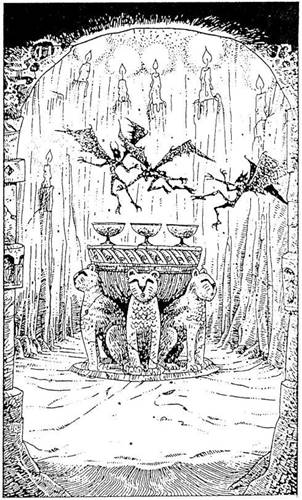
362.
Az ajtó kinyílik, bent a kis szobát gyertyafény világítja meg. Óvatosan benézel, és különös látvány tárul a szemed elé. Egy kőoltáron, a szoba közepén három ezüstserleg áll, mindegyikben más-más színű folyadék van: az egyik átlátszó fehér, a másik piros, a harmadik tejszerű. Az oltár fölött három Gremlin formájú, apró szárnyas teremtmény röpköd izgatottan csiripelve. Időnként le-leszállnak az oltárra, és hörpintenek egy-egy kortyot a tejszerű folyadékból. Amikor az ajtó megcsikordul a sarokvasakon, a teremtmények megriadnak. Odaröppennek hozzád, hogy megnézzenek maguknak. Igencsak izgatottak. Ha akarod, beléphetsz a szobába - lapozz az 58-ra, de be is csukhatod az ajtót, és folytathatod az utadat a Fellegvár felé - lapozz a 156-ra.
363.
Az erkély mentén három ajtó van. Melyikkel próbálkozol meg?
A bal oldali ajtóval? Lapozz a 228-ra.
A középső ajtóval? Lapozz a 64-re.
A jobb oldali ajtóval? Lapozz a 304-re.
364.
Amikor a Varázslatod hatni kezd, egy egeret veszel észre, amint keresztülfut az asztalon. Átkozódsz, mert Varázslatod nem működik rendesen. A remény azonban visszatér beléd, amikor a Calacorm egyik feje észreveszi az egeret és rettenetesen megriad tőle! A másik fej is meglátja, és mindkettő torkaszakadtából ordítani kezd! A
teremtmény felugrik az asztal tetejére, és a Calacorm iszonyatosat ordít félelmében, amikor észreveszi, hogy az ártatlan kisegér finnyásan szagolgatja az asztal lapját. Hagyod, hadd szenvedjen még egy kicsit a Calacorm, majd odakiáltasz neki, hogy eltünteted az egeret, ha szabadon enged. Gyorsan beleegyezik, és odadobja neked a kulcsokat. Kinyitod magadnak az ajtót, leveszed a falról a kardodat, és elindulsz a folyosón. Amikor már biztonságos távolságban vagy, megtöröd a varázslatot, és az egérke eltűnik. Lapozz a 174-re
365.
Veszedelmes hazárdjátékot választottál, melyet a legtöbb királyságban betiltottak. De mivel ezt választottad, legalább egyszer játszanod kell. Persze ha akarod, akár többször is játszhatod. Játékmestered egy varázslótanonc, aki arra az esetre, ha nyernél, néhány díjat választott ki neked. Ha te nyersz, a következők közül választhatsz: plusz két Varázslat (a könyv elején lévő listáról válassz), 50 Arany Tallér vagy egy Bűvös Mellvért (ennek birtokában 2 pontot levonhatsz a teremtmény TÁMADÓEREJÉNEK pontjaiból, amikor ezt kockadobással állapítod meg).
A játék a következő: hat tőr fekszik az asztalon. Az egyik valódi, míg a többi rugóval működő kellék, mely nem okoz sérülést. A többi teremtmény egyikével játszol a szobában, és csak egyikőtök marad életben a játék végén. Választanod kell egyet a tőrök közül. Ha a tőr valódi, elbúcsúzhatsz az életedtől. Ha a tőr csak kellék, úgy vissza kell dobnod a többi közé.
A játék addig tart, amíg egyikőtök az igazi tőrt ki
nem választja, és szíven nem döfi önmagát. Ekkor az életben maradt játékos kérheti a nyereményét. Ellenfeled fog először választani. Dobj egy kockával az ő nevében, majd dobj a magad nevében is. Amikor egyikőtök végül 6-ost dob, az azt jelenti, hogy az igazi fegyvert választotta. Ha ez te vagy, véged van! Most, miután tudod a játék szabályait, azt is tudnod kell, hogy csupán akkor maradhatsz ki a játékból, ha Illúzió Varázslatot alkalmazol - lapozz a 9-re. Egyébként játszanod kell. A játék után vagy átmész a Hat Csákány Játékra - lapozz a 171-re, vagy a Robbanó Kő Játékra - lapozz a 278-ra, vagy elbúcsúzhatsz a "barátaidtól", és elhagyhatod a szobát - lapozz a 31-re.
366.
Miközben átlépkedsz rajtuk, az apró teremtmények némán figyelnek. Úgy tesznek, mint akik nagy érdeklődést mutatnak irántad. Te viszont érzed, hogy itt valami nincs egészen rendben. Lapozz a 140-re.
367.
Amint előremész a folyosón, négyes elágazáshoz érsz. Az északi úton indulsz el, melyen csakhamar eljutsz egy nagy faajtóhoz. A kulcslyukhoz tapasztod a füledet, de nem hallasz semmit. Ha megpróbálod az ajtót lassan és nyugodtan kinyitni - lapozz a 308-ra; ha betöröd az ajtót - lapozz a 121-re.
368.
Átkutatod mindkettőjük zsebét, és 28 Arany Tallért találsz, amit elteszel. Már éppen indulni készülsz, amikor eszedbe jut a tőr - a vita tárgya -, és azt is magadhoz veszed. Lapozz a 15-re.
369.
Meg kell nézned, hogy mit csinál. Amikor megpróbálsz belesni a függöny mögé, az, mintha csak a szél fújná, köréd tekeredik - pedig nem is fúj a szél. A függöny szorosan körülfog. Hiába harcolsz ellene, teljesen beborít, nyakad, fejed köré tekeredik, és már-már alig kapsz levegőt. Még mindig hadakozol ellene, de mindhiába. Egyre gyengülsz, és tudod, ha elveszted az eszméletedet, ő nyeri meg a csatát. De nem tehetsz semmit. Véged van… Küldetésed nem járt sikerrel, elbuktál.
370.
A ládikó igen erős, és kézzel nem tudod letörni a zárat. Előveszed a kardodat, azzal próbálod meg lefeszíteni a lakatot, de közben a ládikó a lábadra zuhan, és csúnyán felsérti a sípcsontodat. Vesztesz 2 ÉLETERŐ pontot. A kardod nem képes felfeszíteni a zárat. Mit teszel?
Megpróbálod kinyitni az első
ládikót? Lapozz a 260-ra.
Megpróbálod kinyitni a második
ládikót? Lapozz a 129-re.
Otthagyod a ládikókat és
továbbmész? Lapozz a 237-re.
371.
A teremtmény morogva nyit ajtót neked. Lapozz a 177-re.
372.
A Védelem Varázslat alkalmazása után egy üveg épp a válladon talál el. Nem érzel semmit. Valami
nincs rendjén, és meg akarod szüntetni a Varázslatot. Sajnos az már visszavonhatatlan, és az üvegek széttörve hullanak a varázspajzsról a földre. Az üveg, amely a válladat érte, eltűnt. Káromkodsz, amikor rájössz, hogy a bortól, amit ittál, bizonyára képzelődsz, és csak puszta hallucináció az üvegek támadása. Amikor erre rájössz, az üvegek ostroma abbamarad. Megdörzsölöd a szemedet és körülnézel: az összes üveg a helyén sorakozik, úgy, mint az előbb! Úgy döntesz, hogy továbbmész. Lapozz a 95-re.
373.
Rettegett Balthus letérdel mögéd. Kezével megragadja az egyik csuklódat, és érzed hatalmas testi erejét, amely valószínűleg ugyanolyan nagy, mint varázsereje. "Paraszt - mondja -, valóban méltó ellenfél vagy. Erőd túltesz számos varázsló erején. Szégyen ilyen tehetséget veszni hagyni. Megölhetnélek, ha akarnálak, de ajánlhatok neked helyette mást. Csatlakozz hozzám, hogy együtt igázzuk le Fűz Völgyet. Ha legyőzzük őket, te lehetsz a helytartójuk. Mi a válaszod?"
"Soha! Nem fordulok a saját népem
ellen!" Lapozz a 148-ra.
"Elfogadom az ajánlatodat." (Be akarod
csapni, ha szabadon enged.) Lapozz a 256-ra.
"Rettegett Balthus, te gonosz féreg!
Még nem győztél le!" (Újabb Varázslatot
akarsz ellene alkalmazni.) Lapozz a 358-ra.

374.
Amikor magadhoz térsz az első ijedségből, körülpillantasz a szobában. Szemmel láthatólag afféle Katonai Főhadiszálláson vagy. A falakon térképek és régi idők tábornokainak portréi lógnak. Az egyik sarokban lévő könyvespolcon száz és száz bőrkötésű könyv sorakozik. Díszes függönyök takarják az ablakokat. Az egyik falat teljes hosszában eltakaró szekrényben veszedelmes alakú és méretű lándzsák és kardok tömege sorakozik. A szoba közepén egy makett, melyet azonnal fölismersz: Fűz Völgyet ábrázolja. Miniatűr seregek tömege látható rajta. Ez nem más, mint szülőhazád lerohanásának terve! Háttal az asztalnak támaszkodva maga Rettegett Balthus áll és mereven néz! Alakja félelmetes. Két méternél jóval magasabb, bivalyerős, széles a válla, izmos akarja. Harci bőröltözékében, széles, díszes csuklószorítójával inkább katonának, semmint varázslónak nézed. "Szemtelen paraszt! - kiált rád dörgő hangon. - Azt hiszed, hogy versenyre kelhetsz velem, Rettegett Balthusszal?" Miközben ezt mondja, csettint egyet az ujjával, és a hátad mögül morgást hallasz. Megfordulsz, és látod, hogy egy fura alakú teremtmény cammog feléd. Szőrös teste és négy karja van, s mindegyik kar veszedelmes kampós karomban végződik. Miközben feléd közeledik, hatalmasakat fújtat. - "Fogadok, hogy a nyomába sem jöhetsz a Karomvadnak!" - mondja nevetve Balthus. Mit teszel?
Kardot rántasz, hogy megvédd
magad? Lapozz a 30-ra.
Védelem Varázslatot
alkalmazol? Lapozz a 109-re.
Erőtlenség Varázslatot
alkalmazol? Lapozz a 158-ra.
375.
Rámutat egy könyvre a polcon, mely ábécésorrendben tartalmazza az összes teremtmény leírását. Melyik címszót nézed meg?
Calacorm? Lapozz a 263-ra.
Mik? Lapozz a 135-re.
Gendzsi? Lapozz a 63-ra.
376.
Védelem Varázslatot alkalmazol. Sajnos ez a varázslat hatástalan a csodafegyverekkel szemben. A lángcsóvák áttörnek védőpajzsodon, és a szemedbe csapnak. Fájdalmadban felordítasz, és elterülsz a földön. A halál leple borul rád. Küldetésed nem járt sikerrel; elbuktál.
377.
Összeszeded magad és koncentrálsz. Mi lesz a következő lépésed?
Illúzió Varázslat? Lapozz a 332-re.
Erőtlenség Varázslat? Lapozz a 113-ra.
K.É.K. Varázslat? Lapozz a 320-ra.
Egyik sem? Lapozz a 355-re.
378.
Néhány lépést teszel előre, amikor egy másik nyílvessző csapódik be közvetlenül a lábad mellett. Még néhány lépés, és egy nyílvessző átszakítja bőringedet, sőt felsérti alkarodat. Még most sem látsz senkit, és azt sem tudod, honnan jönnek a nyílvesszők. Hamarosan újabb nyílvessző röpül
feléd, és átfúrja a lábadat. Hangosan felordítasz - 4 ÉLETERŐ pontot vesztesz -‚ de már majdnem ott vagy a szobornál, amely védelmet nyújthat számodra. Amilyen gyorsan csak tudsz, odarohansz, és elbújsz mögötte, hogy kivárd, amíg a nyílzápor megszűnik. Lapozz a 209-re.
379.
Elengeded a kötelet, és a levegőbe röpülsz. Amikor visszazuhansz az árok szélére, elátkozod ezt a gonosz csapdát, amelyet a hozzád hasonló mohó kalandoroknak találtak ki. Odamész a bejárattal szemközti ajtóhoz, és lenyomod a kilincset. Lapozz a 206-ra.

380.
Amikor leülsz, ők felállnak. A Törpe felkapja a buzogányát, és rád támad, ezalatt a Goblin és az Ork kardot ránt. A Goblin barátnője visítva pattan fel, és eltűnik a sötétben. Lapozz a 213-ra.
381.
Tedd próbára a SZERENCSÉDET! Ha SZERENCSÉD van, lehúzod a gyűrűjét és a kezedben tartod. Ha nincs SZERENCSÉD, a gyűrű odaragad a kezéhez, és nem jön le. Lépéseddel ellentámadásra készteted Rettegett Balthust, aki kardot ránt és rád támad. Lapozz a 337-re.
382.
Riadtan, egymást fellökve rohangálnak körbe-körbe a szobában. "Ó, te jó ég, ó, de rettenetes ez az idegen, hol vannak a fegyvereink?" - kiáltozzák sírva. Te nevetni kezdesz zavarodottságuk láttán, és elteszed a kardodat. Ettől megnyugszanak, és rád néznek. Ha továbbmész - lapozz a 285-re, ha beszédbe elegyedsz velük - lapozz a 356-ra.

383.
Az öreg ereje kezd visszatérni, amint az Életerő Varázslat hatni kezd (húzd ki ezt a varázslatot a Kalandlapodról). Elmondja, hogy fejbe verték a kegyetlen Gendzsik, akik örömüket lelik az ilyen gazságban. A Fellegvárra tereled a szót. Az Öreg hirtelen megremeg a fájdalomtól. Szeme összeszűkül, előreveti magát, és éles fogait a karodba mélyeszti. Vonj le 2 ÉLETERŐ pontot. Ha elkergeted a kardoddal - lapozz a 333-ra, ha Varázsolsz egyet, hogy megszabadulj tőle - lapozz a 189-re.
384.
Miközben a szerkentyűvel játszadozol, hirtelen egy hosszú, vékony kötél tekeredik elő az aknából. Elhatározod, hogy hurkot vetsz a kötéllel a teremtmény nyakára. Meglendíted a kötelet. Dobj egy kockával. Ha 5-öt vagy 6-ot dobsz - lapozz a 252-re. Ha 1-et, 2-t, 3-at vagy 4-et dobsz - lapozz a 107-re.

385.
Megveregetik a hátadat, és örömmel üdvözölnek. Egy sötét bőrű, inas teremtmény groggal teli korsót nyom a markodba. Egy szuszra kiiszod. Még egy korsóval kapsz. Nyersz 2 ÉLETERŐ pontot, mert az ital felfrissít. Ekkor meghívnak, hogy játssz velük. Melyik játékban veszel részt?
A Tőr Játékban? Lapozz a 365-re.
A Robbanó Kő Játékban? Lapozz a 278-ra.
A Hat Csákány Játékban? Lapozz a 171-re.


386.
Egy ideig az ajtó mögött lévő lejtős folyosón haladsz tovább. Hirtelen bűz csapja meg az orrodat, és a szag egyre erősödik. Egy nyíláshoz érsz. Amikor orrodat befogva benézel rajta, nyitott szennyvízcsatornát látsz, mely keresztezi a folyosót. Egy kötél lóg le a mennyezetről. Ha átgázolsz a szennyvízcsatornán - lapozz a 204-re, ha megpróbálod elkapni a kötelet és átugrasz a csatorna fölött - lapozz a 108-ra.
387.
Amint megemlíted az Ezüst Tükröt, felderül az arca, és karját fölemelve megálljt int a Szellemeknek. Átadod neki a Tükröt, ő pedig sok szerencsét kíván további utadhoz. Örülhetsz, hogy élve megúsztad. Lapozz a 6-ra.
388.
Teste megfeszül az erőlködéstől. Néhány perc múlva visszanyeri a nyugalmát, és ismét rád néz. "Erőtlenség! - mondja gúnyolódva. - Csak nem gondolod, hogy Erőtlenség Varázslattal legyőzhetsz engem?" S valóban visszaveri a Varázslatot, és ellentámadásra készül. Lapozz a 157-re.
389.
Amint közelebb mész a nyárshoz, az egyik öregasszony egy kevés port hint a tűzbe, majd mindhárman vihogva hátralépnek. Résen vagy. Látod, hogy a lángok egyre magasabbra csapnak. Hirtelen néhány lángnyelv csap ki a tűzből, és egy Devlin, egy Törpe méretű tűzlény lesz belőle! A három vén banya rád mutat, és a Devlin elindul feléd. Mit teszel?
Kardot rántasz és megküzdesz
vele? Lapozz a 61-re.
Megpróbálsz elrejtőzni? Lapozz a 178-ra.
Varázsolsz egyet? Lapozz a 311-re.
390.
Kínozni kezd - ahányszor csak lábra állnál, újabb fuvallattal teper le. Tedd próbára a SZERENCSÉDET! Ha SZERENCSÉD van - lapozz a 350-re. Ha nincs SZERENCSÉD - lapozz a 122-re.
391.
A Gark elveszi tőled a 3 Arany Tallért, beteszi az övére erősített erszényébe, majd az ajtók irányába mutat. Megkérdi, hova akarsz menni. A Könyvtárszobába (jobb oldali ajtó) vagy a Játékterembe (bal oldali ajtó)? Lapozz a 99-re.
392.
A kulcs megfordul a zárban, és az ajtó kinyílik. Lapozz a 196-ra.
393.
Varázsolsz egyet, és erősen koncentrálsz az alakváltoztató teremtményekre. Alakok cikáznak előtted. Amikor szemügyre veszed őket, látod, hogy ezek a teremtmények MIKek, melyek bárkinek vagy bárminek az alakját fel tudják venni, ha akarják. Úgy látod, csöppet sem aggódnak jelenléted miatt, inkább úgy kezelnek, mint valami játékszert. Ezek a kapzsi teremtmények többnyire csak az aranyra tudnak gondolni. Talán ezt a tulajdonságukat kihasználva megmenekülhetsz. Ha van Arany Tallérod - lapozz a 27-re. Ha nincs aranyad,
gyorsan hagyd el a szobát, és próbálkozz meg egy másik ajtóval - lapozz a 25-re.
394.
A teremtmények úgy néznek egymásra, mintha ismerősen csengene számukra a név, de mégsem tudják hová tenni. Gyorsan közlöd velük, hogy az illető az első emeleti őrségben szolgál. Vállat vonnak, végül úgy döntenek, igazat beszélsz. A Majom-Kutya odahívja a kapuőrt, aki jön és beenged. Lapozz a 251-re.
395.
Erősen koncentrálva varázsolsz, hogy azt a látszatot keltsd, mintha nagy hatalmú varázsló lennél, aki unja a csínytevéseiket. De nem történik semmi! Ismét gúnyos nevetés hallatszik minden irányból. "Mi magunk is elvarázsolt lények vagyunk - szólal meg egy hang -, csak nem olyan amatőrök, mint te!" Hirtelen ütés éri a hátad közepét, és elterülsz a szoba közepén. Vesztesz 2 ÉLETERŐ pontot. Ha keresel valami használható dolgot a hátizsákodban - lapozz a 322-re, ha kardot rántasz - lapozz a 248-ra. Ha még nem próbálkoztál meg ellenük a Tűzvarázslattal, most megteheted - lapozz a 85.-re.
396.
Lapozz a 183-ra.
397.
Nem volt túl sok ez az étel, de igen éhes és szomjas voltál, így étkezés után nyersz 2 ÉLETERŐ pontot. Ha akarsz, odakiálthatsz a Calacormnak - lapozz a 69-re, vagy válassz egy Varázslatot, amellyel kiszabadulhatsz szorult helyzetedből. Lapozz a 193-ra.
398.
Varázsolsz, és erőd visszatér, így aztán föl tudsz menni a lépcsőn. Amikor felérsz, a hatás ismét elmúlik. Elindulhatsz a fal mentén a Fekete Toronyba. Lapozz a 79-re
399.
Varázsolsz egyet. Az Elf közeledik, közben eltűnik a kezéből a Zsebszerkentyű. Szemmel láthatóan védtelenül áll előtted, és azon töri a fejét, vajon megküzdjön-e veled, vagy elmeneküljön. Gyorsan megtámadhatod és lekaszabolhatod:
Fekete Elf ÜGYESSÉG 4 ÉLETERŐ 4
Ha te győzöl, lapozz a 272-re
400.
Rettegett Balthus a lábaidnál hever - kilehelte a lelkét! Küldetésednek eleget tettél! Fűzfa Völgy megmenekült a támadásától. Gondoskodni akarsz róla, hogy terve végleg meghiúsuljon, ezért leszakítod a függönyöket, és lesöpröd velük az asztalt, ahol csatatervének makettje áll. Egy gyertya lángjával meggyújtod az egyik függöny szélét. Amikor a lángok elérik az asztalt, már a menekülésre gondolsz. Van-e Súlytalanság Varázslatod? Ha van, most alkalmazhatod, és az ablakon kirepülve biztonságosan leszállhatsz a földre. Ha nincs, úgy ügyességedre és leleményességedre kell hagyatkoznod, hogy menekülés közben elkerüld a Fellegvár őreinek figyelmét és a többi veszélyt. De ez már egy másik történet…